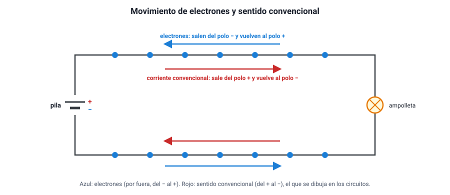
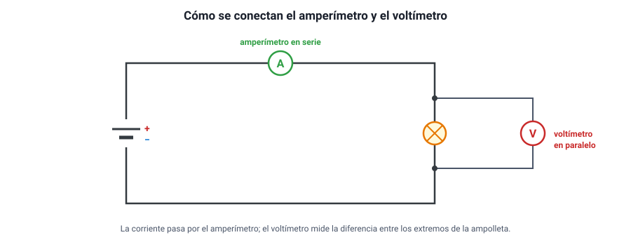
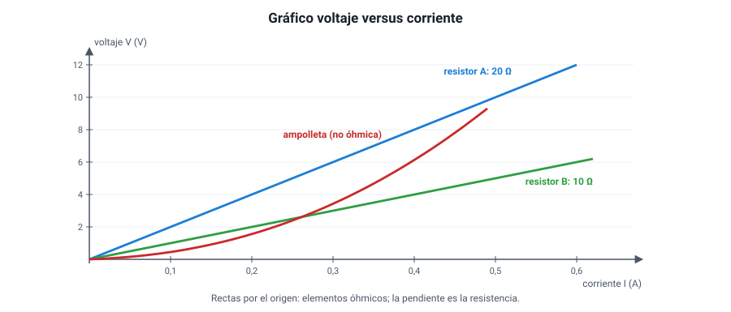
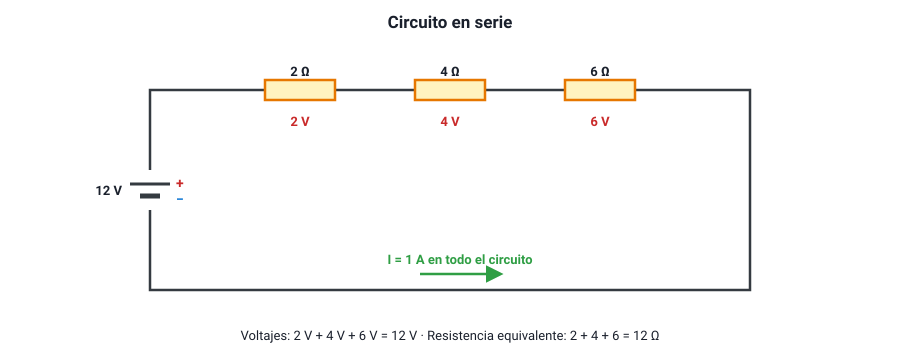
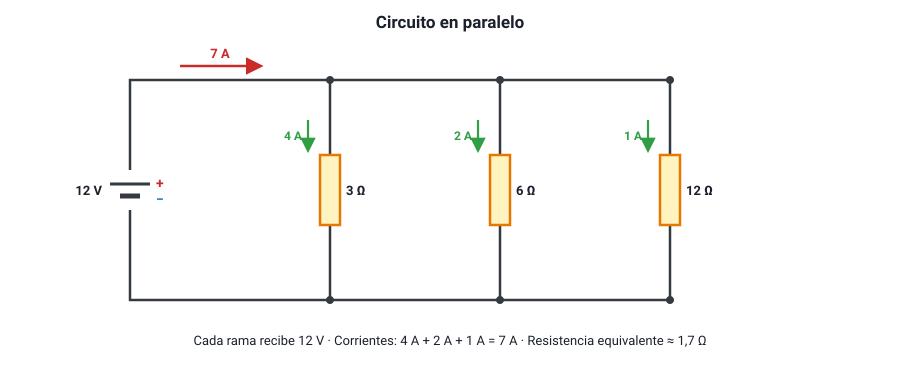
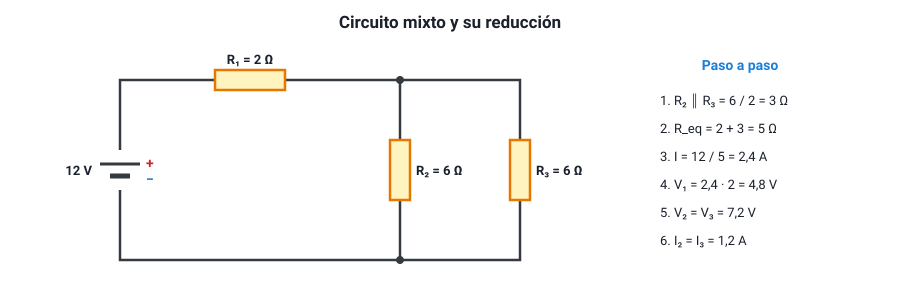
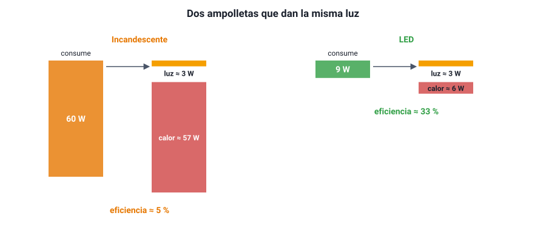
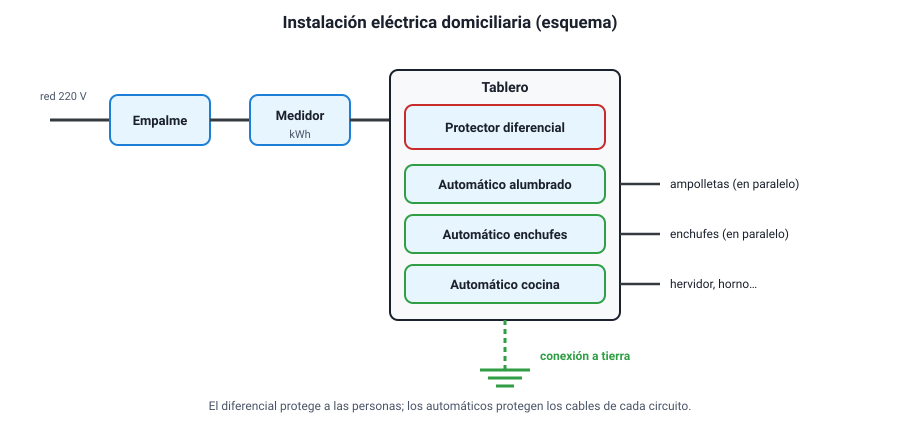

Capítulo 11: Electricidad y circuitos eléctricos
Área temática: Electricidad
Aprietas un interruptor y la luz se enciende al instante. Enchufas el hervidor y en dos minutos el agua está hirviendo. Llega la cuenta de la luz y trae un número en kilowatt-hora. Si conectas demasiados artefactos a la vez, «salta el automático». Detrás de todo eso hay cargas eléctricas que se mueven por circuitos siguiendo unas pocas reglas, y esas reglas son el tema de este capítulo.
Aquí vas a aprender qué es la corriente eléctrica y por qué se entiende como un flujo de cargas; qué son el voltaje y la resistencia, y cómo los relaciona la ley de Ohm; cómo se comportan los circuitos en serie, en paralelo y mixtos; cómo se calculan la potencia y la energía eléctrica y cuánto cuesta usar un artefacto; qué es la eficiencia energética y cómo se lee la etiqueta de un electrodoméstico; y cuáles son los componentes de la instalación eléctrica de una casa y para qué sirve cada uno.
Este capítulo en la PAES 2027. Cubre completa el área Electricidad del temario DEMRE: ley de Ohm en circuitos con resistores en serie, paralelo o mixtos; potencia y energía eléctrica en circuitos de corriente continua; la corriente como flujo de cargas; consumo energético, eficiencia y potencia en artefactos; y los componentes de la instalación eléctrica domiciliaria y sus funciones. Es un área muy aplicada: muchas preguntas parten de una situación doméstica o de un circuito dibujado.
1. Conceptos claveIA:12
| Concepto | Definición |
|---|---|
| Carga eléctrica (q) | Propiedad de la materia que produce las interacciones eléctricas; puede ser positiva o negativa y se mide en coulomb (C) |
| Electrón | Partícula con carga negativa (−1,6 × 10−19 C) que se mueve por los metales y forma la corriente en los cables |
| Conductor | Material que permite el movimiento de cargas con facilidad, como los metales |
| Aislante | Material que casi no permite el movimiento de cargas, como el plástico, el vidrio o la goma |
| Corriente eléctrica (I) | Cantidad de carga que atraviesa una sección de un conductor por unidad de tiempo: I = q / t; se mide en ampere (A) |
| Sentido convencional | Sentido en que se dibuja la corriente: del polo positivo al negativo por fuera de la fuente, opuesto al movimiento real de los electrones |
| Corriente continua (CC) | Corriente que circula siempre en el mismo sentido, como la de una pila o una batería |
| Corriente alterna (CA) | Corriente que cambia de sentido periódicamente, como la de la red domiciliaria (50 Hz en Chile) |
| Diferencia de potencial o voltaje (V) | Energía que la fuente entrega a cada unidad de carga que recorre el circuito; se mide en volt (1 V = 1 J/C) |
| Fuente | Dispositivo que mantiene una diferencia de potencial entre sus terminales: pila, batería, panel solar, generador |
| Resistencia (R) | Oposición de un elemento al paso de la corriente; se mide en ohm (Ω) |
| Resistor | Componente diseñado para tener una resistencia determinada |
| Resistividad (ρ) | Propiedad de un material que indica cuánto se opone al paso de la corriente |
| Ley de Ohm | En un conductor óhmico, el voltaje es proporcional a la corriente: V = I · R |
| Circuito | Camino cerrado por el que circulan las cargas, formado por una fuente, conductores y uno o más elementos |
| Circuito en serie | Elementos conectados uno tras otro, en un solo camino: por todos pasa la misma corriente |
| Circuito en paralelo | Elementos conectados en ramas distintas entre los mismos dos puntos: todos tienen el mismo voltaje |
| Resistencia equivalente | Resistencia única que, puesta en lugar de un grupo de resistencias, produce la misma corriente con la misma fuente |
| Amperímetro | Instrumento que mide corriente; se conecta en serie |
| Voltímetro | Instrumento que mide voltaje; se conecta en paralelo |
| Potencia eléctrica (P) | Energía eléctrica transformada por unidad de tiempo: P = V · I; se mide en watt (W) |
| Kilowatt-hora (kWh) | Energía que transforma un artefacto de 1 kW funcionando durante 1 hora: 3,6 millones de joules |
| Eficiencia | Fracción de la energía consumida que se transforma en energía útil |
| Cortocircuito | Conexión de muy baja resistencia entre los polos de una fuente, que produce una corriente muy alta |
| Sobrecarga | Exceso de corriente en un circuito por conectar demasiados artefactos a la vez |
| Interruptor termomagnético | Dispositivo del tablero que corta el circuito ante sobrecargas o cortocircuitos |
| Protector diferencial | Dispositivo que corta el circuito si detecta una fuga de corriente, por ejemplo, a través de una persona |
| Conexión a tierra | Conductor que lleva a tierra la corriente de una falla, para que no pase por quien toca el artefacto |
2. Carga eléctrica y corrienteIA:34
a. La carga eléctricaIA:567
Toda la materia está formada por átomos, y los átomos por partículas con carga eléctrica: los protones, con carga positiva, en el núcleo; y los electrones, con carga negativa, alrededor. Las cargas de igual signo se repelen y las de signo contrario se atraen.
La carga se mide en coulomb (C). La carga de un electrón es diminuta: −1,6 × 10−19 C. Un coulomb equivale a la carga de unos 6,25 × 1018 electrones.
b. Conductores y aislantesIA:8910
| Tipo | Qué ocurre con las cargas | Ejemplos |
|---|---|---|
| Conductores | Tienen electrones que se mueven con facilidad de un átomo a otro («electrones libres») | Cobre, aluminio, plata, oro; también el agua con sales disueltas y el cuerpo humano |
| Aislantes | Sus electrones están fuertemente ligados a los átomos y casi no se mueven | Plástico, goma, vidrio, madera seca, cerámica, aire seco |
| Semiconductores | Conducen más o menos según la temperatura o las impurezas | Silicio y germanio: la base de chips, LED y paneles solares |
Por eso los cables son de cobre recubierto de plástico: el cobre lleva la corriente y el plástico impide que escape y que alguien la toque. Chile es el mayor productor de cobre del mundo, y buena parte de ese cobre termina en cables.
c. Qué es la corriente eléctricaIA:111213
Un cable de cobre tiene muchísimos electrones libres que se mueven al azar en todas direcciones. Cuando se conecta a una pila, la diferencia de potencial los empuja a todos a desplazarse, en promedio, en un mismo sentido. Ese flujo ordenado de cargas es la corriente eléctrica.
La intensidad de corriente (I) es la cantidad de carga que atraviesa una sección del conductor en cada segundo:
I = q / t
Su unidad es el ampere (A): 1 A = 1 C/s. Una ampolleta LED consume unas centésimas de ampere; un hervidor, unos 9 A; el motor de arranque de un auto, más de 100 A.
Contar cargas. Por el filamento de una linterna pasa una corriente de 0,5 A durante 1 minuto. La carga que circuló es q = I · t = 0,5 A · 60 s = 30 C, es decir, unos 30 · 6,25 × 1018 ≈ 1,9 × 1020 electrones.

d. El sentido de la corrienteIA:141516
Cuando se estudió la electricidad por primera vez, no se sabía qué cargas se movían, y se acordó que la corriente va del polo positivo al negativo por fuera de la fuente. Es el sentido convencional, y es el que se usa en los diagramas. Hoy se sabe que en los metales los que se mueven son los electrones, que van en sentido contrario: del negativo al positivo. Para los cálculos da lo mismo, siempre que se use un sentido de manera coherente.
Tres ideas equivocadas sobre la corriente. 1. «La corriente se gasta en la ampolleta.» No: la misma corriente que entra a una ampolleta sale de ella. Lo que la ampolleta transforma es energía, no carga. Las cargas no se pierden en ningún punto del circuito. 2. «Los electrones viajan muy rápido.» Avanzan apenas milímetros por segundo. Lo que es casi instantáneo es la señal: al cerrar el interruptor, todos los electrones del circuito empiezan a moverse casi al mismo tiempo, como el agua que ya llena una manguera. 3. «La pila fabrica electrones.» No: los electrones ya están en los cables. La pila los empuja, entregándoles energía.
e. Corriente continua y corriente alternaIA:171819
- Corriente continua (CC): las cargas circulan siempre en el mismo sentido. La entregan las pilas, las baterías de autos y celulares y los paneles solares. Es la que pide el temario para los cálculos de circuitos.
- Corriente alterna (CA): el sentido de la corriente se invierte muchas veces por segundo. Es la de los enchufes de las casas: en Chile, con un voltaje de 220 V y una frecuencia de 50 Hz (cambia de sentido 100 veces por segundo). Se usa en las redes porque se transporta con menos pérdidas y su voltaje se cambia fácilmente con transformadores.
Los cargadores de celulares y computadores convierten la corriente alterna del enchufe en corriente continua de bajo voltaje (5 V, 9 V, 20 V).
f. Condiciones para que haya corrienteIA:202122
Para que circule una corriente se necesitan dos cosas:
- Una fuente que mantenga una diferencia de potencial (una pila, una batería, el enchufe).
- Un circuito cerrado: un camino conductor continuo que salga de un polo de la fuente y vuelva al otro.
Si el camino se abre en cualquier punto —un interruptor apagado, un cable cortado, una ampolleta quemada—, la corriente se detiene en todo ese camino.
3. Voltaje y resistenciaIA:2324
a. La diferencia de potencialIA:252627
Una pila o una batería no «tiene» corriente: tiene la capacidad de entregar energía a las cargas que pasan por ella. Esa energía por unidad de carga es la diferencia de potencial o voltaje (V):
V = E / q (1 volt = 1 joule por coulomb)
Una pila de 1,5 V entrega 1,5 J a cada coulomb de carga que la atraviesa. Esas cargas luego ceden esa energía en el resto del circuito: en una ampolleta, como luz y calor; en un motor, como movimiento.
Una pila es una fuente de voltaje aproximadamente constante, no de corriente constante: la corriente que entrega depende de lo que se le conecte. Con una ampolleta de mucha resistencia entrega poca corriente; con un cable sin resistencia (un cortocircuito), muchísima.
| Fuente | Voltaje típico |
|---|---|
| Pila AA | 1,5 V |
| Batería de celular | 3,7 V |
| Puerto USB | 5 V |
| Batería de auto | 12 V |
| Red domiciliaria en Chile | 220 V (alterna, 50 Hz) |
| Líneas de alta tensión | 66 000 a 500 000 V |
Una analogía útil: el agua. Imagina un circuito de cañerías cerrado con una bomba. La bomba es la fuente: sube el agua a una altura (el voltaje). El caudal —cuánta agua pasa por segundo— es la corriente. Las cañerías angostas o con obstáculos son la resistencia. El agua no se gasta al pasar por una rueda que hace girar: lo que se gasta es la energía que la bomba le dio. Como toda analogía, tiene límites, pero ayuda a no confundir voltaje con corriente.
b. La resistencia eléctricaIA:282930
La resistencia (R) mide cuánto se opone un elemento al paso de la corriente. Al avanzar, los electrones chocan con los átomos del material y les transfieren energía, que se convierte en calor. La unidad de resistencia es el ohm (Ω).
La resistencia de un conductor depende de cuatro factores:
R = ρ · L / A
| Factor | Efecto sobre la resistencia | Por qué |
|---|---|---|
| Largo (L) | A mayor largo, mayor resistencia (proporcional) | Los electrones deben recorrer más material |
| Área de la sección (A) | A mayor grosor, menor resistencia (inversamente proporcional) | Hay más «carriles» para circular |
| Material (resistividad ρ) | Cada material tiene su resistividad | El cobre y la plata tienen resistividad muy baja; el nicrom de las estufas, alta |
| Temperatura | En los metales, a mayor temperatura, mayor resistencia | Los átomos vibran más y los choques son más frecuentes |
Cambiar el cable. Un cable de cobre tiene una resistencia de 0,4 Ω.
- Si se usa un cable del mismo material y grosor, pero del doble de largo: 0,8 Ω.
- Si se usa uno del mismo largo, pero con el doble de área: 0,2 Ω.
- Si se duplican a la vez el largo y el área: 0,4 Ω, igual que al principio.
Por eso los artefactos de mucha potencia, como las cocinas eléctricas o los calefactores, se conectan con cables más gruesos: tienen menos resistencia y se calientan menos al llevar mucha corriente.
Resistencia no es algo «malo». En los cables conviene que sea mínima, pero en muchos artefactos es justamente lo que se busca: en el hervidor, la estufa, la plancha, la ducha eléctrica o el tostador, una resistencia se calienta al pasar la corriente, y ese calor es el objetivo. Este efecto se llama efecto Joule.
c. Cómo se miden corriente y voltajeIA:313233
| Instrumento | Qué mide | Cómo se conecta | Su resistencia interna |
|---|---|---|---|
| Amperímetro | Corriente | En serie: se abre el circuito y se intercala, para que toda la corriente pase por él | Muy baja, para no alterar la corriente |
| Voltímetro | Voltaje | En paralelo: sus terminales se conectan a los dos extremos del elemento | Muy alta, para que casi no pase corriente por él |
| Óhmetro | Resistencia | En los extremos del elemento, con el circuito desconectado | — |
Un multímetro reúne los tres instrumentos en uno, y se elige la función con una perilla.

El error de conexión. Un amperímetro conectado en paralelo, por su resistencia tan baja, se comporta como un cortocircuito: pasa por él una corriente enorme que puede dañarlo. Un voltímetro conectado en serie, por su resistencia tan alta, casi corta la corriente del circuito.
4. La ley de OhmIA:3435
a. El enunciadoIA:363738
En 1827, el alemán Georg Simon Ohm publicó que, en muchos conductores a temperatura constante, la corriente es directamente proporcional al voltaje aplicado. La constante de proporcionalidad es la resistencia:
V = I · R → I = V / R → R = V / I
| Símbolo | Magnitud | Unidad |
|---|---|---|
| V | Diferencia de potencial (voltaje) | volt (V) |
| I | Intensidad de corriente | ampere (A) |
| R | Resistencia | ohm (Ω) |
De aquí sale la definición del ohm: un elemento tiene 1 Ω si, con 1 V entre sus extremos, circula por él 1 A.
Las dos lecturas que más se usan:
- Con la misma resistencia, si se duplica el voltaje, se duplica la corriente.
- Con el mismo voltaje, si se duplica la resistencia, la corriente se reduce a la mitad.
Los tres despejes.
- Una ampolleta de 240 Ω se conecta a 12 V: I = 12 / 240 = 0,05 A (50 mA).
- Por un calefactor conectado a 220 V circulan 5 A: R = 220 / 5 = 44 Ω.
- Por una resistencia de 100 Ω circulan 0,2 A: el voltaje entre sus extremos es V = 0,2 · 100 = 20 V.
b. El gráfico voltaje–corrienteIA:394041

- Si un elemento cumple la ley de Ohm, el gráfico de voltaje versus corriente es una recta que pasa por el origen, y su pendiente es la resistencia. Estos elementos se llaman óhmicos.
- Un resistor de mayor resistencia tiene una recta más empinada: necesita más voltaje para la misma corriente.
- Hay elementos no óhmicos. El más común es el filamento de una ampolleta incandescente: al aumentar la corriente se calienta, su resistencia aumenta y la curva se empina. Otro es el diodo (y el LED), que deja pasar corriente solo en un sentido.
Atento al eje. Algunos libros grafican I versus V (corriente en el eje vertical). En ese caso la pendiente es 1/R: la recta más empinada corresponde a la resistencia menor. Lee siempre los ejes antes de comparar pendientes.
c. Cómo se comprueba en el laboratorioIA:424344
Un experimento típico. Se conecta un resistor a una fuente de voltaje variable, con un amperímetro en serie y un voltímetro en paralelo al resistor. Se varía el voltaje de a poco y se anota la corriente.
- Variable independiente: el voltaje aplicado.
- Variable dependiente: la corriente.
- Variables controladas: el mismo resistor y su temperatura (por eso se usan corrientes pequeñas y se desconecta entre mediciones).
Si el cociente V / I da el mismo valor en todas las mediciones, el resistor es óhmico y ese valor es su resistencia. Si el cociente crece, como en una ampolleta, el elemento no cumple la ley de Ohm.
d. La ley de Ohm y el cuerpo humanoIA:454647
La piel seca tiene una resistencia de decenas de miles de ohm; mojada, puede bajar a unos pocos cientos o miles de ohm. Con el mismo voltaje de 220 V, la ley de Ohm dice que la corriente que atravesaría el cuerpo puede ser decenas de veces mayor con la piel mojada. Por eso es tan peligroso manipular artefactos eléctricos con las manos mojadas o dentro del baño. Lo que daña el cuerpo es la corriente que lo atraviesa, y esa corriente depende del voltaje y de la resistencia.
5. Circuitos en serieIA:4849
a. Qué es una conexión en serieIA:505152
Dos o más elementos están en serie cuando están conectados uno tras otro, formando un único camino para la corriente. Toda la carga que pasa por el primero debe pasar por el segundo, y así sucesivamente.

b. Las tres reglas del circuito en serieIA:535455
| Magnitud | Regla | Por qué |
|---|---|---|
| Corriente | Es la misma en todos los elementos: I = I1 = I2 = I3 | Hay un solo camino y la carga no se acumula ni se pierde |
| Voltaje | El voltaje de la fuente se reparte: V = V1 + V2 + V3 | La energía que la fuente da a cada coulomb se va cediendo en cada elemento |
| Resistencia equivalente | Se suman: Req = R1 + R2 + R3 | La corriente debe atravesar todas las resistencias, una tras otra |
La resistencia equivalente en serie es siempre mayor que la mayor de las resistencias. Por eso, al agregar elementos en serie, la corriente del circuito disminuye.
Cada resistor recibe un voltaje proporcional a su resistencia (Vi = I · Ri): la resistencia mayor se queda con la mayor parte del voltaje.
Resolver un circuito en serie (figura 4). Una pila de 12 V alimenta tres resistores en serie de 2 Ω, 4 Ω y 6 Ω.
- Resistencia equivalente: 2 + 4 + 6 = 12 Ω.
- Corriente (la misma en todos): I = 12 V / 12 Ω = 1 A.
- Voltaje en cada resistor: 1 · 2 = 2 V, 1 · 4 = 4 V y 1 · 6 = 6 V.
- Comprobación: 2 + 4 + 6 = 12 V, el voltaje de la pila.
c. Ampolletas en serieIA:565758
Las ampolletas en serie tienen dos comportamientos característicos:
- Si una se quema o se saca, todas se apagan. Al abrirse el único camino, la corriente se detiene en todo el circuito. Así funcionaban las antiguas guirnaldas de luces de Navidad: una ampolleta quemada dejaba a oscuras toda la guirnalda.
- Al agregar más ampolletas iguales, todas brillan menos. La resistencia total aumenta, la corriente baja y cada ampolleta recibe una fracción menor del voltaje.
Una, dos y tres ampolletas. Una ampolleta de 6 Ω conectada sola a una pila de 6 V recibe 1 A y todo el voltaje. Con dos ampolletas iguales en serie: Req = 12 Ω, I = 0,5 A y cada una recibe 3 V. Con tres: I ≈ 0,33 A y cada una recibe 2 V. Cada ampolleta que se agrega hace que las otras brillen menos.
d. Dónde se usan las conexiones en serieIA:596061
- Interruptores y fusibles: van en serie con lo que controlan o protegen, para poder cortar la corriente de todo ese camino.
- Pilas en serie: en una linterna, dos pilas de 1,5 V conectadas en serie (el polo + de una con el − de la otra) entregan 3 V.
- Amperímetros: se conectan en serie para que por ellos pase la misma corriente que por el elemento que miden.
«La primera ampolleta brilla más porque recibe la corriente antes.» Es falso. En un circuito en serie, la corriente es la misma en todos los puntos al mismo tiempo: si las ampolletas son iguales, brillan igual, sin importar su posición. Si una brilla más, es porque tiene mayor resistencia y se queda con más voltaje y más potencia.
6. Circuitos en paraleloIA:6263
a. Qué es una conexión en paraleloIA:646566
Dos o más elementos están en paralelo cuando están conectados entre los mismos dos puntos, cada uno en su propia rama. La corriente que llega a un punto de unión (un nodo) se divide entre las ramas y vuelve a juntarse en el otro nodo.

b. Las tres reglas del circuito en paraleloIA:676869
| Magnitud | Regla | Por qué |
|---|---|---|
| Voltaje | Es el mismo en todas las ramas: V = V1 = V2 = V3 | Todas están conectadas directamente a los mismos dos puntos |
| Corriente | La corriente total se reparte entre las ramas: I = I1 + I2 + I3 | La carga que llega a un nodo es igual a la que sale de él |
| Resistencia equivalente | Se suman los inversos: 1/Req = 1/R1 + 1/R2 + 1/R3 | Cada rama agrega un camino más para la corriente |
La resistencia equivalente en paralelo es siempre menor que la menor de las resistencias. Por eso, al agregar ramas en paralelo, la corriente total que entrega la fuente aumenta.
Por cada rama circula una corriente inversamente proporcional a su resistencia (Ii = V / Ri): la rama de menor resistencia se lleva la mayor corriente.
Dos atajos útiles. - Para dos resistencias en paralelo: Req = (R1 · R2) / (R1 + R2) («producto sobre suma»). - Para n resistencias iguales de valor R en paralelo: Req = R / n. Dos resistencias de 10 Ω en paralelo equivalen a 5 Ω.
Resolver un circuito en paralelo (figura 5). Una pila de 12 V alimenta tres ramas con resistencias de 3 Ω, 6 Ω y 12 Ω.
- Voltaje en cada rama: 12 V.
- Corrientes: 12/3 = 4 A, 12/6 = 2 A y 12/12 = 1 A.
- Corriente total: 4 + 2 + 1 = 7 A.
- Resistencia equivalente: Req = 12 V / 7 A ≈ 1,7 Ω. Con la fórmula: 1/Req = 1/3 + 1/6 + 1/12 = 4/12 + 2/12 + 1/12 = 7/12, así que Req = 12/7 ≈ 1,7 Ω. Es menor que 3 Ω, la menor de las tres.
c. Ampolletas en paraleloIA:707172
- Si una se quema, las demás siguen encendidas. Cada ampolleta tiene su propio camino.
- Al agregar más ampolletas iguales, cada una brilla igual que antes, porque cada una sigue recibiendo el voltaje completo de la fuente. Lo que aumenta es la corriente total que entrega la fuente, y por eso una pila se agota más rápido.
d. La instalación de una casa es en paraleloIA:737475
Todos los enchufes y ampolletas de una casa están conectados en paralelo. Por eso:
- todos los artefactos reciben los mismos 220 V, sin importar cuántos haya encendidos;
- se puede encender o apagar cada uno por separado;
- cada artefacto que se enciende agrega corriente al total que circula por los cables principales.
Esto último tiene una consecuencia importante: si se conectan muchos artefactos a la vez en un mismo circuito —con una zapatilla o alargador lleno—, la corriente total puede superar lo que soportan los cables. Es una sobrecarga, y el interruptor automático del tablero existe para cortarla (sección 10).
Serie contra paralelo: la tabla que conviene recordar.
| Serie | Paralelo | |
|---|---|---|
| Se reparte… | El voltaje | La corriente |
| Es igual en todos… | La corriente | El voltaje |
| Resistencia equivalente | Mayor que la mayor | Menor que la menor |
| Al agregar un elemento, la corriente total… | Disminuye | Aumenta |
| Si un elemento se abre… | Todo se apaga | Los demás siguen |
7. Circuitos mixtosIA:7677
a. Qué es un circuito mixtoIA:787980
Un circuito mixto combina conexiones en serie y en paralelo. Para resolverlo no hace falta ninguna regla nueva: se aplican las de serie y paralelo por partes, reduciendo el circuito paso a paso hasta una sola resistencia equivalente, y luego se vuelve atrás para encontrar las corrientes y los voltajes de cada elemento.
b. El procedimientoIA:818283
- Identificar grupos de resistencias que estén claramente en serie (un solo camino entre ellas, sin ramificaciones) o en paralelo (conectadas entre los mismos dos nodos).
- Reemplazar cada grupo por su resistencia equivalente. Repetir hasta que quede una sola resistencia.
- Calcular la corriente total con la ley de Ohm: I = V / Req.
- Volver atrás, deshaciendo las reducciones: en los tramos en serie, la corriente es la misma; en los tramos en paralelo, el voltaje es el mismo.

Resolver el circuito de la figura 6. Una pila de 12 V alimenta un resistor R1 = 2 Ω en serie con un grupo de dos resistores de 6 Ω en paralelo (R2 y R3).
- Paralelo: dos resistencias iguales de 6 Ω → 6 / 2 = 3 Ω.
- Serie: 2 Ω + 3 Ω = 5 Ω (resistencia equivalente total).
- Corriente total: I = 12 V / 5 Ω = 2,4 A. Esta es la corriente que pasa por R1.
- Voltaje en R1: 2,4 · 2 = 4,8 V.
- Voltaje en el grupo en paralelo: 2,4 · 3 = 7,2 V (también 12 − 4,8 = 7,2 V). Ese voltaje es el mismo para R2 y R3.
- Corriente por R2 y por R3: 7,2 / 6 = 1,2 A cada una. Comprobación: 1,2 + 1,2 = 2,4 A, la corriente total.
c. Razonar sin calcular: qué pasa si se cambia algoIA:848586
La PAES pregunta a menudo qué ocurre con el brillo de las ampolletas o las lecturas de los instrumentos cuando se abre un interruptor, se agrega una rama o se quema un elemento. El razonamiento sigue siempre la misma cadena:
cambio en el circuito → cambio en la resistencia equivalente → cambio en la corriente total → cambio en cada parte.
Se quema R3 en el circuito de la figura 6.
- El grupo en paralelo queda solo con R2: su resistencia sube de 3 Ω a 6 Ω.
- La resistencia total sube de 5 Ω a 2 + 6 = 8 Ω.
- La corriente total baja de 2,4 A a 12 / 8 = 1,5 A: R1 recibe menos corriente y, si fuera una ampolleta, brillaría menos.
- El voltaje en R1 baja a 1,5 · 2 = 3 V, así que el voltaje en R2 sube a 12 − 3 = 9 V, y su corriente sube de 1,2 A a 9 / 6 = 1,5 A: R2 brillaría más.
Es un resultado que sorprende: al quemarse una ampolleta, otra del circuito se enciende con más fuerza.
Cortocircuito en una parte del circuito. Si un cable sin resistencia conecta los dos extremos de un elemento, la corriente pasa toda por el cable y nada por ese elemento, que se apaga. El resto del circuito ve disminuir su resistencia total, y la corriente aumenta. Si el cable conecta directamente los dos polos de la fuente, la resistencia total es casi cero y la corriente se dispara: es un cortocircuito de la fuente, que puede calentar los cables hasta fundirlos.
8. Potencia y energía eléctricaIA:8788
a. La potencia eléctricaIA:899091
La potencia (P) de un artefacto es la energía que transforma por unidad de tiempo. Como cada coulomb que atraviesa un elemento con voltaje V le entrega V joules, y por segundo pasan I coulomb, la potencia es:
P = V · I
Su unidad es el watt (W): 1 W = 1 J/s = 1 V · 1 A. Combinando con la ley de Ohm se obtienen otras dos formas:
P = I² · R P = V² / R
Cuál usar. Las tres dan lo mismo; conviene elegir la que usa los datos conocidos. En un circuito en serie, la corriente es común y resulta cómodo P = I² · R: la resistencia mayor disipa más potencia. En un circuito en paralelo (como una casa), el voltaje es común y resulta cómodo P = V² / R: la resistencia menor disipa más potencia.
Leer la placa de un hervidor. Un hervidor dice «220 V – 2 000 W».
- Corriente que consume: I = P / V = 2 000 / 220 ≈ 9,1 A.
- Resistencia de su elemento calefactor: R = V² / P = 220² / 2 000 ≈ 24 Ω.
Si se conectara a 110 V (la mitad), su potencia sería (110)² / 24 ≈ 500 W: la cuarta parte, porque la potencia depende del cuadrado del voltaje. Por eso un artefacto hecho para 220 V funciona mal en un país con 110 V.
¿Más resistencia, más potencia? Depende de qué se mantenga fijo. Con el mismo voltaje (en paralelo, en una casa), menos resistencia significa más potencia: un calefactor de 2 000 W tiene menos resistencia que una ampolleta de 60 W. Con la misma corriente (en serie), más resistencia significa más potencia. Por eso, dos ampolletas distintas brillan al revés según se conecten en serie o en paralelo.
b. La energía eléctricaIA:929394
La energía que consume un artefacto es su potencia por el tiempo que funciona:
E = P · t
En el SI, con P en watt y t en segundos, la energía queda en joule. Pero para el consumo doméstico el joule es una unidad muy pequeña, y se usa el kilowatt-hora (kWh): la energía que consume un artefacto de 1 kW (1 000 W) durante 1 hora.
1 kWh = 1 000 W · 3 600 s = 3,6 × 106 J
El kWh es energía, no potencia. «Kilowatt» mide potencia (qué tan rápido se usa la energía); «kilowatt-hora» mide energía (cuánta se usó en total). Un artefacto de 100 W encendido 10 horas consume lo mismo que uno de 1 000 W encendido 1 hora: 1 kWh.
c. Calcular la cuenta de la luzIA:959697
El medidor de una casa registra los kWh consumidos, y la empresa distribuidora cobra un precio por cada kWh. Para calcular el costo de usar un artefacto:
- Pasar la potencia a kW (dividir los watt por 1 000).
- Multiplicar por las horas de uso: se obtienen los kWh.
- Multiplicar por el precio del kWh.
Cuánto cuesta usar algunos artefactos. Supón un precio de $200 por kWh (valor ilustrativo: el precio real depende de la comuna, la empresa y el año, y figura en cada boleta).
| Artefacto | Potencia | Uso diario | kWh al mes (30 días) | Costo mensual |
|---|---|---|---|---|
| Hervidor | 2 000 W | 15 min | 2 kW · 0,25 h · 30 = 15 kWh | $3 000 |
| Refrigerador | 150 W (promedio) | 24 h | 0,15 · 24 · 30 = 108 kWh | $21 600 |
| Ampolleta LED | 9 W | 5 h | 0,009 · 5 · 30 = 1,35 kWh | $270 |
| Ampolleta incandescente | 60 W | 5 h | 0,06 · 5 · 30 = 9 kWh | $1 800 |
El refrigerador, aunque tiene poca potencia, es el que más consume porque funciona todo el día. En el consumo lo que importa es potencia por tiempo.
d. El efecto JouleIA:9899100
Cuando la corriente atraviesa una resistencia, los choques de los electrones con los átomos transforman energía eléctrica en calor. Es el efecto Joule, y su potencia es P = I² · R.
- Es útil en hervidores, estufas, planchas, secadores de pelo, tostadores, duchas y calefonts eléctricos.
- Es una pérdida en los cables, los motores y los cargadores, que se calientan sin que eso sirva de nada. Como depende de I², las pérdidas crecen rápido con la corriente: por eso la electricidad se transporta por las líneas de alta tensión con alto voltaje y baja corriente.
- Es un peligro cuando un cable lleva más corriente de la que soporta: se calienta, derrite su aislante y puede causar un incendio.
9. Consumo y eficiencia energéticaIA:101102
a. Qué es la eficienciaIA:103104105
Ningún artefacto transforma toda la energía eléctrica que recibe en la forma de energía que nos interesa. Una ampolleta quiere producir luz, pero parte de la energía se va en calor; un motor quiere producir movimiento, pero también se calienta y hace ruido. La eficiencia (η) mide qué fracción de la energía consumida se aprovecha:
η = energía útil / energía consumida = potencia útil / potencia consumida
Se expresa como fracción o como porcentaje, y siempre es menor que 1 (100 %). La energía que no se aprovecha no desaparece: se transforma en formas no deseadas, casi siempre calor.

Comparar ampolletas. Una ampolleta incandescente de 60 W y una LED de 9 W dan aproximadamente la misma luz. Si ambas producen unos 3 W de luz:
- Eficiencia de la incandescente: 3 / 60 = 5 %. El resto, 57 W, se va en calor: por eso quema al tocarla.
- Eficiencia de la LED: 3 / 9 ≈ 33 %.
Cambiar una por otra, con 5 horas de uso diario, ahorra (60 − 9) W · 5 h · 30 días ≈ 7,7 kWh al mes por cada ampolleta.
b. Qué consume más en una casaIA:106107108
La energía consumida depende de potencia por tiempo de uso. Algunos valores típicos:
| Artefacto | Potencia típica | Observación |
|---|---|---|
| Hervidor eléctrico | 1 500 – 2 200 W | Mucha potencia, pero poco tiempo |
| Estufa eléctrica | 1 000 – 2 000 W | Puede ser el mayor gasto en invierno |
| Horno microondas | 800 – 1 200 W | |
| Plancha | 1 000 – 1 500 W | |
| Refrigerador | 100 – 200 W (en promedio) | Poca potencia, pero funciona todo el día |
| Televisor LED | 50 – 150 W | |
| Computador portátil | 30 – 60 W | |
| Ampolleta LED | 5 – 12 W | Reemplaza a una incandescente de 40 a 100 W |
| Cargador de celular | 5 – 20 W |
El consumo en espera (stand-by). Muchos artefactos siguen consumiendo energía cuando están «apagados» con el control remoto: la luz roja del televisor, el decodificador, el cargador enchufado sin celular. Cada uno gasta pocos watt, pero durante las 24 horas del día y todos los días del año. Desenchufarlos, o usar una zapatilla con interruptor, reduce la cuenta.
c. La etiqueta de eficiencia energéticaIA:109110111
En Chile, la Superintendencia de Electricidad y Combustibles (SEC) exige que refrigeradores, lavadoras, ampolletas, televisores, hornos microondas y otros artefactos lleven una etiqueta de eficiencia energética. La etiqueta:
- clasifica el artefacto con letras y colores, desde la clase más eficiente (verde, con la letra A o A con signos «+») hasta la menos eficiente (rojo);
- informa su consumo de energía, normalmente en kWh por año o por ciclo de uso.
Entre dos refrigeradores del mismo tamaño, el de mejor clase puede consumir bastante menos energía al año, y esa diferencia se paga en cada cuenta de luz durante toda la vida útil del artefacto.
Potencia alta no significa ineficiente. Un hervidor de 2 000 W es muy eficiente: casi toda su energía termina calentando el agua. Lo que indica la eficiencia es qué fracción de la energía se aprovecha, no cuánta energía se usa por segundo. Y la etiqueta compara artefactos del mismo tipo: no tiene sentido comparar la clase de un refrigerador con la de una lavadora.
d. Por qué importaIA:112113114
Ahorrar energía eléctrica no solo reduce la cuenta. Una parte de la electricidad de Chile todavía se genera quemando carbón, gas o petróleo, que emiten gases de efecto invernadero. Consumir menos, y usar artefactos más eficientes, reduce esas emisiones y la necesidad de construir nuevas centrales.
Medidas simples y efectivas: cambiar ampolletas incandescentes por LED; elegir artefactos de mejor clase energética; no dejar artefactos en espera; usar el hervidor solo con el agua necesaria; no abrir el refrigerador más de lo necesario, y alejarlo de fuentes de calor.
10. La instalación eléctrica domiciliariaIA:115116
a. De la calle al enchufeIA:117118119
La electricidad llega a una casa desde la red de distribución y recorre un camino con componentes que cumplen funciones precisas:

| Componente | Función |
|---|---|
| Empalme | Conexión entre la red de la empresa distribuidora y la instalación de la casa |
| Medidor | Registra la energía consumida, en kWh; con él se calcula la cuenta |
| Tablero eléctrico | Caja donde están los dispositivos de protección y desde donde se reparten los circuitos |
| Interruptor termomagnético (automático) | Corta un circuito ante una sobrecarga o un cortocircuito; protege los cables y la instalación |
| Protector diferencial | Corta el circuito si detecta una fuga de corriente, por ejemplo, a través de una persona; protege a las personas |
| Conexión a tierra (tierra de protección) | Conductor que une las carcasas metálicas de los artefactos con un electrodo enterrado; lleva a tierra la corriente de una falla |
| Circuitos | Ramas separadas (alumbrado, enchufes, cocina, etc.), cada una con su propio automático |
| Interruptores | Abren o cierran un circuito de alumbrado; van en serie con la ampolleta que controlan |
| Enchufes | Puntos de conexión de los artefactos, todos en paralelo. En Chile se usa el enchufe de tres espigas en línea, cuya espiga central es la tierra |
En Chile, la red domiciliaria entrega corriente alterna de 220 V y 50 Hz. Las instalaciones deben cumplir el reglamento de seguridad de instalaciones de consumo del Ministerio de Energía y sus pliegos técnicos (RIC), vigentes desde 2021. Una instalación nueva debe ser ejecutada y declarada ante la SEC por un instalador eléctrico autorizado.
b. Por qué los artefactos van en paraleloIA:120121122
Como se vio en la sección 6, en paralelo cada artefacto recibe los 220 V completos y funciona de manera independiente: encender el hervidor no hace que la luz se atenúe (idealmente), y apagar la televisión no apaga el refrigerador. Si los artefactos estuvieran en serie, se repartirían el voltaje, ninguno funcionaría bien y apagar uno los apagaría a todos.
c. Sobrecarga y cortocircuitoIA:123124125
Son las dos fallas contra las que protege el interruptor termomagnético:
| Falla | Qué pasa | Cómo actúa el automático |
|---|---|---|
| Sobrecarga | Se conectan demasiados artefactos al mismo circuito; la suma de sus corrientes supera lo que soportan los cables, que se calientan (efecto Joule) | Su parte térmica (una lámina que se curva al calentarse) corta el circuito después de algunos segundos o minutos |
| Cortocircuito | Los conductores se tocan directamente, sin pasar por un artefacto; la resistencia cae casi a cero y la corriente se dispara | Su parte magnética (una bobina que atrae un contacto) corta el circuito en milésimas de segundo |
¿Salta el automático? Un circuito de enchufes está protegido por un automático de 16 A. En él se conectan a la vez un hervidor de 2 000 W, un microondas de 1 100 W y una estufa de 1 500 W, todos a 220 V.
- Potencia total: 2 000 + 1 100 + 1 500 = 4 600 W.
- Corriente total (están en paralelo, las corrientes se suman): I = 4 600 / 220 ≈ 20,9 A.
Como 20,9 A supera los 16 A del automático, el automático se desconecta. La solución no es cambiarlo por uno mayor —los cables podrían no resistir esa corriente—, sino repartir los artefactos entre distintos circuitos.
Antes de los automáticos se usaban fusibles: un alambre delgado, en serie con el circuito, que se funde cuando la corriente supera cierto valor. Cumplen la misma función, pero hay que reemplazarlos cada vez que actúan.
d. El protector diferencial y la conexión a tierraIA:126127128
Estos dos componentes protegen a las personas, no a la instalación.
- Conexión a tierra. Si un cable interno de una lavadora se suelta y toca la carcasa metálica, la carcasa queda «energizada». Sin tierra, quien la toque se convierte en el camino de la corriente hacia el suelo. Con tierra, la corriente de la falla se va por el conductor de protección, que tiene mucho menos resistencia que el cuerpo. Por eso existe la tercera espiga del enchufe.
- Protector diferencial. Compara la corriente que sale por un conductor con la que vuelve por el otro. Si son iguales, todo está bien. Si difieren en más de un umbral pequeño —30 mA en las casas—, significa que parte de la corriente se está escapando por otro camino (la tierra o una persona), y el diferencial corta el circuito en una fracción de segundo.
Qué protege cada uno. El automático protege contra corrientes grandes (sobrecarga, cortocircuito), pero no detecta una fuga de pocos miliampere a través de una persona: para él, 30 mA es nada. Esa es la función del diferencial. Por eso una instalación segura necesita los dos, y además la conexión a tierra.
e. La corriente y el cuerpo humanoIA:129130131
Lo que daña al cuerpo es la corriente que lo atraviesa. Los efectos aproximados de la corriente alterna de 50 Hz, según su intensidad:
| Corriente a través del cuerpo | Efecto aproximado |
|---|---|
| Alrededor de 1 mA | Umbral de percepción: se siente un cosquilleo |
| Alrededor de 10 mA | Contracción muscular: la persona puede no ser capaz de soltar el cable |
| 25 – 30 mA | Dificultad para respirar; riesgo grave si se prolonga |
| Del orden de 100 mA | Riesgo de fibrilación del corazón, potencialmente mortal |
(Los umbrales varían según la persona, el recorrido de la corriente y el tiempo de exposición.)
El umbral del diferencial, 30 mA, se eligió justamente para cortar antes de llegar a las corrientes más peligrosas. Y la ley de Ohm explica por qué el agua es tan riesgosa: con la piel mojada, la resistencia del cuerpo baja mucho y, con los mismos 220 V, la corriente sube.
Medidas básicas de seguridad: no manipular artefactos ni enchufes con las manos mojadas; no usar alargadores sobrecargados ni cables con el aislante dañado; desconectar el automático antes de cambiar una lámpara o un enchufe; no reemplazar un automático por otro de mayor capacidad sin revisar los cables; y dejar las reparaciones de la instalación a un instalador autorizado.
Ejemplos PAES resueltos
Cuatro ítems al estilo de la prueba, resueltos paso a paso. Cúbrelos primero y después compara.
Ejemplo 1 (Procesar y analizar la evidencia). Un grupo aplica distintos voltajes a dos componentes, P y Q, y mide la corriente que circula por cada uno:
| Voltaje (V) | 2 | 4 | 6 | 8 |
|---|---|---|---|---|
| Corriente en P (A) | 0,10 | 0,20 | 0,30 | 0,40 |
| Corriente en Q (A) | 0,20 | 0,32 | 0,40 | 0,46 |
¿Cuál de las siguientes conclusiones es coherente con los datos?
A) P cumple la ley de Ohm con una resistencia de 20 Ω, y la resistencia de Q aumenta con el voltaje. B) P y Q cumplen la ley de Ohm, porque en ambos la corriente aumenta con el voltaje. C) P cumple la ley de Ohm con una resistencia de 0,05 Ω, y Q tiene resistencia constante. D) Q cumple la ley de Ohm con una resistencia de 10 Ω, y la resistencia de P disminuye con el voltaje.
Desarrollo.
- Calcular V / I en cada fila. En P: 2/0,10 = 20; 4/0,20 = 20; 6/0,30 = 20; 8/0,40 = 20 Ω. Es constante: P es óhmico, con R = 20 Ω.
- En Q: 2/0,20 = 10; 4/0,32 = 12,5; 6/0,40 = 15; 8/0,46 ≈ 17,4 Ω. La resistencia aumenta con el voltaje: Q no es óhmico (se comporta como el filamento de una ampolleta que se calienta).
- Descartar. B usa un criterio insuficiente: que la corriente aumente no basta, tiene que aumentar en proporción. C invierte el cociente (I / V = 0,05) y afirma que Q es constante. D confunde los dos componentes.
Clave: A.
Lo que evalúa. Usar una operación matemática (el cociente V / I) para decidir si un elemento cumple una ley.
Ejemplo 2 (Planificar y conducir una investigación). Una estudiante quiere medir la corriente que pasa por una ampolleta y el voltaje entre sus extremos. Tiene una pila, la ampolleta, cables, un amperímetro y un voltímetro.
¿Cuál es la forma correcta de conectar los instrumentos?
A) El amperímetro en paralelo con la ampolleta y el voltímetro en serie con ella. B) Ambos instrumentos en serie con la ampolleta, uno a cada lado. C) El amperímetro en serie con la ampolleta y el voltímetro en paralelo con ella. D) Ambos instrumentos en paralelo con la ampolleta, entre sus dos extremos.
Desarrollo.
- El amperímetro debe medir la corriente que atraviesa la ampolleta: se intercala en el mismo camino, en serie. Su resistencia es muy baja para no alterar la corriente.
- El voltímetro debe medir la diferencia de potencial entre dos puntos: se conecta a los extremos de la ampolleta, en paralelo. Su resistencia es muy alta para no desviar corriente.
- Descartar. A intercambia las conexiones: el amperímetro en paralelo sería casi un cortocircuito y el voltímetro en serie casi cortaría la corriente. B y D ponen a uno de los dos en la conexión incorrecta.
Clave: C.
Lo que evalúa. Asociar cada instrumento con la variable que mide y con la forma correcta de incluirlo en el circuito.
Ejemplo 3 (Evaluar). Una familia quiere reducir su cuenta de la luz y evalúa tres medidas. Con un precio de $200 por kWh:
- Medida 1: cambiar 6 ampolletas incandescentes de 60 W por LED de 9 W. Cada ampolleta se usa 4 horas al día.
- Medida 2: desenchufar un televisor que en espera consume 5 W, las 20 horas al día que no se usa.
- Medida 3: usar el hervidor (2 000 W) 5 minutos menos al día.
¿Cuál es la afirmación correcta sobre el ahorro mensual (30 días)?
A) La medida 3 ahorra más, porque el hervidor tiene la mayor potencia. B) La medida 2 ahorra más, porque el televisor está en espera la mayor parte del día. C) Las tres medidas ahorran lo mismo, porque todas reducen el consumo. D) La medida 1 ahorra más, porque reduce mucha potencia durante varias horas.
Desarrollo.
- Medida 1: ahorro de potencia 6 · (60 − 9) = 306 W = 0,306 kW, por 4 h · 30 días = 36,7 kWh ≈ $7 300.
- Medida 2: 0,005 kW · 20 h · 30 días = 3 kWh ≈ $600.
- Medida 3: 2 kW · (5/60) h · 30 días = 5 kWh ≈ $1 000.
- Conclusión. La medida 1 ahorra por lejos lo más. A comete el error de mirar solo la potencia sin considerar el tiempo. B sobrevalora un consumo de muy baja potencia. C no compara los valores.
Clave: D.
Lo que evalúa. Evaluar alternativas tecnológicas con un criterio cuantitativo: la energía es potencia por tiempo.
Ejemplo 4 (Observar y plantear preguntas). En una casa, cada vez que se enciende la estufa eléctrica mientras funciona el hervidor, se desconecta el automático del circuito de la cocina. Con uno solo de los dos artefactos, el automático no se desconecta.
¿Cuál de las siguientes hipótesis explica mejor la observación?
A) El automático se desconecta porque la estufa tiene una fuga de corriente hacia la tierra. B) La corriente total de los dos artefactos juntos supera la corriente máxima del automático. C) El voltaje de la red baja a la mitad cuando se conectan dos artefactos a la vez. D) El hervidor y la estufa están conectados en serie y se reparten la corriente.
Desarrollo.
- Qué patrón hay. Cada artefacto por separado funciona; los dos juntos, no. Lo que cambia al agregar el segundo es la corriente total del circuito.
- Hipótesis coherente. Los artefactos de una casa están en paralelo: sus corrientes se suman. Si la suma supera la corriente máxima del automático, este corta por sobrecarga. Se puede poner a prueba sumando las corrientes de placa (potencia / 220 V) y comparándolas con el valor del automático.
- Descartar. A: una fuga a tierra la detectaría el diferencial, y ocurriría también con la estufa sola. C: en paralelo, cada artefacto recibe los 220 V completos. D: los enchufes no están en serie; si lo estuvieran, ninguno funcionaría bien.
Clave: B.
Lo que evalúa. Formular una hipótesis coherente con la observación y con el modelo del circuito en paralelo, y que se pueda comprobar.
Evaluación formativa
Veinte preguntas sobre corriente, voltaje, resistencia, ley de Ohm, circuitos en serie, paralelo y mixtos, potencia, energía, eficiencia e instalación domiciliaria. Responde todas y luego revisa las explicaciones.
1. Por un cable circula una corriente de 2 A durante 30 s. ¿Cuánta carga atravesó una sección del cable?
- 15 C
- 32 C
- 60 C
- 120 C
Respuesta correcta: C
q = I · t = 2 A · 30 s = 60 C. Dividir en vez de multiplicar da 15 C; sumar da 32 C.
2. En un circuito con una pila y una ampolleta, ¿cómo es la corriente que entra a la ampolleta comparada con la que sale de ella?
- Son iguales, porque la carga no se gasta.
- La que sale es menor, porque se gastó.
- La que sale es mayor, porque se aceleró.
- La que sale es nula, porque se detuvo.
Respuesta correcta: A
La carga no se acumula ni se pierde en el circuito: la misma corriente entra y sale de la ampolleta. Lo que la ampolleta transforma es energía (en luz y calor), no carga.
3. ¿Qué significa que una pila tenga un voltaje de 9 V?
- Que entrega siempre 9 A de corriente.
- Que tiene 9 C de carga almacenada.
- Que su resistencia interna es de 9 Ω.
- Que entrega 9 J a cada coulomb de carga.
Respuesta correcta: D
El voltaje es energía por unidad de carga: 1 V = 1 J/C. La corriente que entrega la pila no es fija: depende de la resistencia conectada.
4. Un cable de cobre tiene una resistencia de 0,6 Ω. ¿Qué resistencia tendría un cable del mismo material y el mismo largo, pero con el triple de área?
- 0,1 Ω
- 0,2 Ω
- 1,8 Ω
- 5,4 Ω
Respuesta correcta: B
La resistencia es inversamente proporcional al área: con el triple de área, la resistencia es la tercera parte, 0,6 / 3 = 0,2 Ω. Multiplicar por 3 (1,8 Ω) invierte la relación.
5. Un estudiante quiere saber si la resistencia de un alambre depende de su largo. ¿Qué debe mantener constante?
- El largo del alambre.
- La corriente medida.
- El material y el grosor.
- La resistencia medida.
Respuesta correcta: C
Para aislar el efecto del largo (variable independiente), hay que controlar el material y el área de la sección (y la temperatura). La resistencia es la variable dependiente, y la corriente cambia con ella.
6. Una resistencia de 30 Ω se conecta a 12 V. ¿Qué corriente circula?
- 0,4 A
- 2,5 A
- 18 A
- 360 A
Respuesta correcta: A
Por la ley de Ohm, I = V / R = 12 / 30 = 0,4 A. Invertir el cociente da 2,5 A; multiplicar da 360 A.
7. Si se duplica el voltaje aplicado a un resistor óhmico, ¿qué pasa con la corriente?
- Se reduce a la mitad.
- Se mantiene igual.
- Se cuadruplica.
- Se duplica.
Respuesta correcta: D
En un resistor óhmico, la corriente es directamente proporcional al voltaje: al duplicar V se duplica I. La resistencia no cambia.
8. En un gráfico voltaje–corriente, un componente da una curva que se empina cada vez más en vez de una recta. ¿Qué se concluye?
- Que cumple la ley de Ohm con resistencia constante.
- Que su resistencia aumenta al aumentar la corriente.
- Que su resistencia disminuye al aumentar la corriente.
- Que no conduce corriente eléctrica.
Respuesta correcta: B
Si la curva V–I se empina, cada vez hace falta más voltaje por cada ampere adicional: el cociente V / I (la resistencia) aumenta. Es lo que ocurre en el filamento de una ampolleta que se calienta.
9. Tres resistores de 4 Ω, 6 Ω y 10 Ω están en serie con una pila de 20 V. ¿Qué corriente circula?
- 0,5 A
- 0,8 A
- 1,0 A
- 2,0 A
Respuesta correcta: C
En serie las resistencias se suman: 4 + 6 + 10 = 20 Ω. I = 20 V / 20 Ω = 1,0 A, la misma en los tres resistores.
10. En el circuito anterior (4 Ω, 6 Ω y 10 Ω en serie con 20 V), ¿cuál es el voltaje en el resistor de 10 Ω?
- 10 V
- 6 V
- 4 V
- 2 V
Respuesta correcta: A
Con I = 1 A, el voltaje en cada resistor es I · R: 4 V, 6 V y 10 V, que suman 20 V. El resistor mayor recibe la mayor parte del voltaje.
11. Dos ampolletas iguales están conectadas en serie a una pila. Si una se quema, ¿qué pasa con la otra?
- Brilla más, porque recibe todo el voltaje.
- Brilla igual, porque la pila es la misma.
- Brilla menos, porque recibe menos corriente.
- Se apaga, porque se abre el único camino.
Respuesta correcta: D
En serie hay un solo camino. Si una ampolleta se quema, el circuito se abre y la corriente se detiene en todo él: la otra también se apaga.
12. Dos resistores de 12 Ω están en paralelo. ¿Cuál es su resistencia equivalente?
- 3 Ω
- 6 Ω
- 12 Ω
- 24 Ω
Respuesta correcta: B
Para n resistencias iguales en paralelo, R_eq = R / n = 12 / 2 = 6 Ω. Sumarlas (24 Ω) corresponde a una conexión en serie; dividir por 4 (3 Ω) confunde el número de resistencias.
13. Tres ampolletas iguales están en paralelo con una pila. Si se desconecta una, ¿qué pasa con el brillo de las otras dos (con una pila ideal)?
- Aumenta, porque se reparten más corriente.
- Disminuye, porque baja la corriente total.
- No cambia, porque reciben el mismo voltaje.
- Se apagan, porque se abre el circuito.
Respuesta correcta: C
En paralelo cada ampolleta recibe el voltaje completo de la fuente, sin importar cuántas ramas haya. Lo que cambia es la corriente total que entrega la pila, que disminuye.
14. ¿Por qué los artefactos de una casa se conectan en paralelo?
- Para que todos reciban 220 V y funcionen por separado.
- Para que la corriente sea la misma en todos ellos.
- Para que el voltaje se reparta entre los artefactos.
- Para que la resistencia total de la casa aumente.
Respuesta correcta: A
En paralelo cada artefacto recibe el voltaje completo de la red y se puede encender o apagar sin afectar a los demás. En serie se repartirían el voltaje y al apagar uno se apagarían todos.
15. Un resistor de 4 Ω en serie con dos resistores de 8 Ω en paralelo entre sí se conecta a 16 V. ¿Qué corriente entrega la fuente?
- 0,8 A
- 1,0 A
- 1,3 A
- 2,0 A
Respuesta correcta: D
Los dos de 8 Ω en paralelo equivalen a 4 Ω. En serie con el de 4 Ω, la resistencia total es 8 Ω. I = 16 / 8 = 2,0 A. Sumar todo en serie (20 Ω) da 0,8 A.
16. Un hervidor indica «220 V – 1 760 W». ¿Qué corriente consume?
- 0,125 A
- 8 A
- 80 A
- 387 200 A
Respuesta correcta: B
P = V · I, así que I = P / V = 1 760 / 220 = 8 A. Invertir el cociente da 0,125 A; multiplicar da un valor absurdo.
17. ¿Cuánta energía consume una estufa de 1 500 W encendida durante 4 horas?
- 0,375 kWh
- 1,5 kWh
- 6 kWh
- 6 000 kWh
Respuesta correcta: C
E = P · t = 1,5 kW · 4 h = 6 kWh. Usar la potencia en watt sin convertir a kW da 6 000; dividir da 0,375.
18. Una ampolleta incandescente de 60 W y una LED de 9 W dan la misma luz. ¿Qué se puede afirmar?
- La LED es más eficiente: pierde menos energía como calor.
- La incandescente es más eficiente, porque tiene más potencia.
- Ambas tienen la misma eficiencia, porque dan la misma luz.
- La LED produce más luz, porque consume menos energía.
Respuesta correcta: A
Con la misma luz útil, la LED consume mucha menos energía: una fracción mayor se convierte en luz y menos se pierde como calor. Más potencia no significa más eficiencia.
19. ¿Qué función cumple el protector diferencial en una instalación domiciliaria?
- Medir la energía consumida en kWh.
- Cortar la corriente ante una sobrecarga.
- Reducir el voltaje de la red a 220 V.
- Cortar la corriente ante una fuga a tierra.
Respuesta correcta: D
El diferencial compara la corriente que sale con la que vuelve y corta si hay una diferencia (fuga), por ejemplo, a través de una persona. La sobrecarga la corta el interruptor termomagnético; la energía la mide el medidor.
20. En un circuito protegido por un automático de 10 A a 220 V se conectan un microondas de 1 100 W y un hervidor de 1 540 W. ¿Qué ocurre?
- Nada, porque cada artefacto consume menos de 10 A.
- Salta el automático, porque la corriente total es de 12 A.
- Salta el diferencial, porque hay una fuga de corriente.
- Nada, porque en paralelo la corriente se divide.
Respuesta correcta: B
En paralelo las corrientes se suman: 1 100/220 = 5 A y 1 540/220 = 7 A, en total 12 A, que supera los 10 A del automático: se desconecta por sobrecarga.
Fuentes del capítulo
Consultadas el 25 de septiembre de 2026. El texto es de redacción propia y los ocho diagramas son originales.
Documentos oficiales
- DEMRE (2026). Temario Regular – Pruebas Electivas – Ciencias. Admisión 2027, pág. 11 (área temática Electricidad). Este capítulo cubre completos sus cinco conocimientos: ley de Ohm en circuitos en serie, paralelo y mixtos; potencia y energía eléctrica en corriente continua; corriente como flujo de cargas; consumo, eficiencia y potencia en artefactos; y componentes de la instalación domiciliaria. demre.cl
- Ministerio de Educación de Chile, Currículum Nacional. Ciencias Naturales 8.º básico, Unidad 3: Física – Electricidad y calor, objetivo de aprendizaje CN08 OA 10 (circuito domiciliario y circuitos en serie y en paralelo) y su actividad «Circuito eléctrico domiciliario». curriculumnacional.cl
- Ministerio de Energía (2020). Decreto 8: Reglamento de seguridad de las instalaciones de consumo de energía eléctrica. Biblioteca del Congreso Nacional. bcn.cl
- Superintendencia de Electricidad y Combustibles (SEC). Reglamento de seguridad de las instalaciones de consumo de energía eléctrica (Decreto 8) y pliegos técnicos RIC. sec.cl
- Ministerio de Energía. Etiquetado de eficiencia energética; y SERNAC, Etiquetado de eficiencia energética para refrigeradores y ampolletas. energia.gob.cl
- Ministerio del Medio Ambiente. Las ampolletas incandescentes apagan su luz para siempre: equivalencia entre ampolletas LED e incandescentes. mma.gob.cl
Textos de física de libre acceso
- OpenStax (2022). College Physics 2e, capítulo 20 «Electric Current, Resistance, and Ohm's Law» (secciones 20.4 «Electric Power and Energy» y 20.6 «Electric Hazards and the Human Body») y capítulo 21 «Circuits and DC Instruments» (21.1 «Resistors in Series and Parallel» y 21.4 «DC Voltmeters and Ammeters»). Licencia CC BY 4.0. openstax.org
- OpenStax. University Physics, volume 2, sección 10.6 «Household Wiring and Electrical Safety». openstax.org
- Instituto Nacional de Seguridad e Higiene en el Trabajo (España). NTP 400: Corriente eléctrica: efectos al atravesar el organismo humano. PDF
- Khan Academy en español. Introducción a los circuitos y la ley de Ohm y Repaso de resistores en serie y en paralelo. es.khanacademy.org
Libros de consulta
- Giancoli, D. Physics: Principles with Applications, 7.ª edición, capítulo 18 («Electric Currents», secciones 18-1 y 18-7 y resumen) y capítulo 19 («DC Circuits», secciones 19-7 «Electric Hazards» y 19-8 «Ammeters and Voltmeters»).
- Johnson, K., Hewett, S. y otros. Advanced Physics for You, capítulo 16 («Current and Charge»).
- Shipman, J. y otros. An Introduction to Physical Science, capítulo 8 («Electricity and Magnetism», secciones 8.2 y 8.3).
- Etkina, E. y otros. College Physics, capítulo 16 («DC Circuits»), resumen.
Consulta de referencia; el texto de este capítulo es de redacción propia. El precio del kWh usado en los ejemplos ($200) es ilustrativo: el valor real depende de la empresa distribuidora, la comuna y la fecha, y figura en cada boleta.
Preguntas de práctica (IA)
Estas 131 preguntas fueron creadas con inteligencia artificial a partir de los contenidos de esta sección; no son del libro. Los números verdes junto a cada título llevan a sus preguntas, y el botón «↩ Ver tema» de cada pregunta te devuelve a la materia que la explica.
Tema: 1. Conceptos clave
1.↩ Ver tema En una tutoría de 1.° medio, una estudiante resume así su glosario de electricidad: «En un circuito en paralelo, por todos los elementos pasa la misma corriente». Su tutor le pide revisar la frase antes de la prueba. ¿Qué cambio vuelve correcta la afirmación? Evaluar Electricidad
- Cambiar «la misma corriente» por «la misma resistencia en cada rama».
- Cambiar «la misma corriente» por «el mismo voltaje entre sus extremos».
- Agregar que la corriente se reparte en partes iguales entre las ramas.
- Agregar que la frase vale solo si la fuente entrega corriente alterna.
Respuesta correcta: B
Habilidad evaluada. Esta pregunta evalúa la habilidad de evaluar, es decir, juzgar si una afirmación, un procedimiento o un modelo es coherente con la evidencia y con los conceptos científicos. La tarea consiste en detectar el error conceptual de la frase y elegir la corrección que la hace coherente con las definiciones del glosario.
Concepto del libro. Según el título «Conceptos clave», en un circuito en serie los elementos forman un solo camino y comparten la corriente, mientras que en uno en paralelo cada elemento ocupa una rama conectada a los mismos dos puntos y todos quedan sometidos al mismo voltaje.
Desarrollo. La frase de la estudiante atribuye al paralelo una propiedad que pertenece a la conexión en serie. Si las ramas están unidas a los mismos dos nodos, la diferencia de potencial entre sus extremos es igual para todas; en cambio, la corriente de la fuente se divide entre las ramas según la resistencia de cada una. Por eso basta con reemplazar «la misma corriente» por «el mismo voltaje» para que la definición quede correcta.
Por qué fallan las otras alternativas.
- A) (variable equivocada) Esta opción es incorrecta porque las ramas de un paralelo pueden tener resistencias distintas; lo común a todas es el voltaje, no la resistencia.
- C) (sobre-alcance) Esta opción es incorrecta porque la corriente solo se reparte en partes iguales si todas las ramas tienen la misma resistencia, caso particular que no se puede generalizar.
- D) (relación inversa o inexistente) Esta opción es incorrecta porque el tipo de corriente de la fuente no decide qué magnitud comparten los elementos en paralelo: inventa una condición.
Qué hay que saber y saber hacer. Hay que recordar qué magnitud es común en cada tipo de conexión y reconocer cuándo una frase las intercambia. Regla rápida: serie → misma corriente; paralelo → mismo voltaje. En los enchufes de una casa todos los artefactos reciben 220 V precisamente porque están conectados en paralelo.
Pregunta creada con IA a partir del contenido de esta sección.
2.↩ Ver tema Un estudiante revisa el glosario y lee que 1 kWh equivale a 3,6 millones de joules. Luego observa que en su casa se usa un hervidor de 2 000 W durante 6 minutos para preparar el té. ¿Cuánta energía eléctrica transformó el hervidor, expresada en joules? Procesar y analizar la evidencia Electricidad
- 12 000 J
- 200 000 J
- 720 000 J
- 43 200 000 J
Respuesta correcta: C
Habilidad evaluada. Esta pregunta evalúa la habilidad de procesar y analizar la evidencia, es decir, organizar datos, hacer cálculos e interpretar resultados para llegar a una conclusión. La tarea consiste en convertir las unidades de potencia y tiempo y aplicar la equivalencia entre kilowatt-hora y joule que entrega el glosario.
Concepto del libro. Según el título «Conceptos clave», el kilowatt-hora es la energía que transforma un artefacto de 1 kW que funciona durante 1 hora, y equivale a 3,6 millones de joules; la potencia, a su vez, es la energía transformada en cada unidad de tiempo.
Desarrollo. Primero se expresan los datos en las unidades del kWh: 2 000 W = 2 kW y 6 min = 0,1 h. La energía es E = P · t = 2 kW · 0,1 h = 0,2 kWh. Luego se pasa a joules: 0,2 · 3 600 000 J = 720 000 J. Se comprueba por otra vía: 2 000 W · 360 s = 720 000 J, el mismo valor.
Por qué fallan las otras alternativas.
- A) (error de cálculo típico) Esta opción es incorrecta porque multiplica 2 000 W por 6 sin convertir los minutos a segundos (ni a horas).
- B) (error de cálculo típico) Esta opción es incorrecta porque obtiene 0,2 kWh, pero lo convierte usando 1 kWh = 1 000 000 J en lugar de 3,6 millones de joules.
- D) (error de cálculo típico) Esta opción es incorrecta porque trata los 6 minutos como 6 horas: 2 kW · 6 h = 12 kWh, que da 43 200 000 J.
Qué hay que saber y saber hacer. Hay que saber que la energía es potencia por tiempo y usar unidades coherentes (W con s, o kW con h). Atajo: 1 kW durante 1 h es 3,6 × 106 J. La boleta de la luz cobra en kWh porque en joules las cifras serían enormes.
Pregunta creada con IA a partir del contenido de esta sección.
Tema: 2. Carga eléctrica y corriente
3.↩ Ver tema En el laboratorio del liceo, un grupo arma un circuito en serie con una pila, un interruptor y una ampolleta de linterna. Una integrante sostiene que «parte de la corriente se consume dentro de la ampolleta». Disponen de dos amperímetros. ¿Qué procedimiento permite poner a prueba esa idea? Planificar y conducir una investigación Electricidad
- Medir el voltaje entre los extremos de la ampolleta y compararlo con el de la pila.
- Medir la corriente solo antes de la ampolleta, con el interruptor abierto y cerrado.
- Medir la corriente antes y después de la ampolleta, a la vez, y comparar.
- Medir cuánto se calienta la ampolleta en distintos puntos de su vidrio exterior.
Respuesta correcta: C
Habilidad evaluada. Esta pregunta evalúa la habilidad de planificar y conducir una investigación, es decir, elegir procedimientos, instrumentos y variables que permitan responder una pregunta de manera confiable. La tarea consiste en elegir las mediciones que permiten comparar la corriente a la entrada y a la salida de la ampolleta.
Concepto del libro. Según el título «Carga eléctrica y corriente», la corriente es un flujo de cargas y en un circuito las cargas no desaparecen: lo que la ampolleta transforma en luz y calor es la energía que traen, no las cargas mismas.
Desarrollo. Si la corriente «se gastara», un amperímetro intercalado después de la ampolleta marcaría menos que uno puesto antes. Por lo tanto, el diseño correcto es conectar ambos amperímetros en serie, uno a cada lado de la ampolleta, y leerlos al mismo tiempo. El resultado esperado es que marquen el mismo valor, lo que refuta la idea de la estudiante.
Por qué fallan las otras alternativas.
- A) (variable equivocada) Esta opción es incorrecta porque mide voltajes, y la idea que se quiere probar trata sobre la corriente que entra y sale de la ampolleta.
- B) (condición incompleta) Esta opción es incorrecta porque mide en un único punto: sin un valor a la salida de la ampolleta no hay nada que comparar.
- D) (variable equivocada) Esta opción es incorrecta porque la temperatura del vidrio refleja la energía transformada, no la cantidad de carga que circula.
Qué hay que saber y saber hacer. Hay que saber que la carga se conserva y que el amperímetro se intercala en serie. Para poner a prueba una hipótesis hay que diseñar una medición cuyo resultado pueda contradecirla. Dato extra: en un circuito en serie la corriente es la misma en cualquier punto, sin importar cuántos elementos haya.
Pregunta creada con IA a partir del contenido de esta sección.
4.↩ Ver tema Una estudiante nota que el cable de su celular queda tibio cuando carga con un cargador rápido, pero no con el cargador común. Revisando las etiquetas, ve que el rápido entrega más corriente que el común. ¿Qué pregunta de investigación surge directamente de esta observación? Observar y plantear preguntas Electricidad
- ¿Cómo varía la temperatura del cable según la corriente que lo cruza?
- ¿Cómo varía la temperatura del cable según el color de su recubrimiento?
- ¿Por qué los cargadores rápidos son mejores que los cargadores comunes?
- ¿Cómo varía la carga de la batería del celular según la marca del cable?
Respuesta correcta: A
Habilidad evaluada. Esta pregunta evalúa la habilidad de observar y plantear preguntas, es decir, reconocer en una observación un problema que se pueda investigar y expresarlo como una pregunta con variables medibles. La tarea consiste en identificar qué variables relaciona la observación y convertirlas en una pregunta que se pueda responder midiendo.
Concepto del libro. Según el título «Carga eléctrica y corriente», la corriente es la carga que atraviesa una sección del conductor por segundo; mientras más carga circula por segundo, más energía entregan las cargas al material, que se calienta.
Desarrollo. La observación compara dos situaciones que difieren en la corriente (el cargador rápido entrega más) y en las que cambia la temperatura del cable. La pregunta investigable debe tener esas dos variables: la corriente como variable independiente y la temperatura como dependiente. Solo la primera opción las nombra y se puede responder midiendo ambas con un amperímetro y un termómetro.
Por qué fallan las otras alternativas.
- B) (variable equivocada) Esta opción es incorrecta porque el color del recubrimiento no aparece en la observación y no es lo que distingue a los dos cargadores.
- C) (sobre-alcance) Esta opción es incorrecta porque parte de un juicio de valor («mejores») que la observación no sustenta y que no define variables medibles.
- D) (variable equivocada) Esta opción es incorrecta porque cambia tanto la variable observada (la temperatura) como la que se sospecha que influye (la corriente).
Qué hay que saber y saber hacer. Hay que saber reconocer en una observación qué cambió y qué efecto se notó, y formular la pregunta con esas variables. Una buena pregunta científica no contiene juicios de valor y se puede responder con datos. Dato extra: este calentamiento es el efecto Joule, que aumenta mucho al crecer la corriente.
Pregunta creada con IA a partir del contenido de esta sección.
Tema: a. La carga eléctrica
5.↩ Ver tema En una feria científica, un estudiante frota un globo con su chaleco de lana y mide con un sensor que el globo quedó con una carga de −3,2 × 10−8 C. Considerando que cada electrón tiene una carga de −1,6 × 10−19 C, ¿cuántos electrones ganó el globo? Procesar y analizar la evidencia Electricidad
- 5,1 × 10−27 electrones
- 2,0 × 10−11 electrones
- 2,0 × 1011 electrones
- 2,0 × 1027 electrones
Respuesta correcta: C
Habilidad evaluada. Esta pregunta evalúa la habilidad de procesar y analizar la evidencia, es decir, organizar datos, hacer cálculos e interpretar resultados para llegar a una conclusión. La tarea consiste en relacionar la carga total del globo con la carga de un electrón mediante una división con notación científica.
Concepto del libro. Según el título «La carga eléctrica», la carga está formada por unidades elementales: cada electrón aporta −1,6 × 10−19 C, y un objeto queda negativo cuando gana electrones que le entrega otro cuerpo.
Desarrollo. El número de electrones es N = q / e = (3,2 × 10−8 C) / (1,6 × 10−19 C). Se dividen las mantisas: 3,2 / 1,6 = 2,0. Se restan los exponentes: −8 − (−19) = 11. Resultado: 2,0 × 1011 electrones. El signo negativo de la carga confirma que el globo ganó electrones, que vienen de la lana.
Por qué fallan las otras alternativas.
- A) (error de cálculo típico) Esta opción es incorrecta porque multiplica la carga del globo por la de un electrón, cuando corresponde dividirlas.
- B) (error de cálculo típico) Esta opción es incorrecta porque resta mal los exponentes al dividir: un número de electrones nunca puede ser menor que 1.
- D) (error de cálculo típico) Esta opción es incorrecta porque suma los valores absolutos de los exponentes (8 + 19) en lugar de restarlos al dividir.
Qué hay que saber y saber hacer. Hay que saber que la carga está cuantizada y operar potencias de diez sin perder el signo del exponente. Control de sentido común: una carga macroscópica, aunque sea pequeña, siempre corresponde a muchísimos electrones. Dato extra: la lana queda con carga +3,2 × 10−8 C, porque la carga total se conserva.
Pregunta creada con IA a partir del contenido de esta sección.
6.↩ Ver tema En una clase, un estudiante frota una regla de plástico con un paño y comprueba que la regla queda con carga negativa. Luego escribe en su informe: «La regla quedó negativa porque el roce creó electrones nuevos en el plástico». ¿Cuál es la evaluación correcta de esta explicación? Evaluar Electricidad
- Es incorrecta: la regla recibió electrones del paño y la carga total se conservó.
- Es correcta: la energía del roce se transformó en carga negativa en el plástico.
- Es incorrecta: la regla quedó negativa porque le entregó protones al paño.
- Es correcta, siempre que el paño también quede con carga de signo negativo.
Respuesta correcta: A
Habilidad evaluada. Esta pregunta evalúa la habilidad de evaluar, es decir, juzgar si una afirmación, un procedimiento o un modelo es coherente con la evidencia y con los conceptos científicos. La tarea consiste en contrastar la explicación del informe con el modelo de cargas eléctricas y decidir si es coherente con él.
Concepto del libro. Según el título «La carga eléctrica», la materia está formada por protones positivos en el núcleo y electrones negativos alrededor. Un cuerpo queda cargado cuando gana o pierde electrones, y la carga no se crea ni se destruye: solo pasa de un cuerpo a otro.
Desarrollo. Antes de frotar, regla y paño son neutros. Al frotar, algunos electrones pasan del paño al plástico: la regla queda con exceso de electrones (negativa) y el paño con déficit (positivo), con cargas de igual valor y signo contrario. La suma sigue siendo cero, así que no se creó carga. La explicación del informe falla porque habla de electrones «nuevos».
Por qué fallan las otras alternativas.
- B) (relación inversa o inexistente) Esta opción es incorrecta porque el roce no convierte energía en carga: solo traslada electrones de un cuerpo a otro.
- C) (variable equivocada) Esta opción es incorrecta porque los protones están fijos en los núcleos; en la electrización por frotamiento se mueven electrones.
- D) (relación inversa o inexistente) Esta opción es incorrecta porque, si la regla gana electrones, el paño los pierde y queda positivo, no negativo.
Qué hay que saber y saber hacer. Hay que saber que la carga se conserva y que, en los sólidos, lo que se transfiere son electrones. Para evaluar una explicación, se contrasta cada afirmación con el modelo aceptado. Dato extra: qué material queda negativo depende de la pareja frotada; el mismo plástico puede quedar positivo con otro material.
Pregunta creada con IA a partir del contenido de esta sección.
7.↩ Ver tema Para una feria de ciencias, un grupo quiere averiguar si el tipo de tela con que se frota un globo influye en cuánto se carga. Como indicador de la carga usarán el número de papelitos que el globo levanta desde la mesa. ¿Qué diseño es adecuado para responder su pregunta? Planificar y conducir una investigación Electricidad
- Frotar un globo con lana diez veces y otro con seda veinte, y contar los papelitos.
- Frotar globos de colores distintos diez veces con lana y contar los papelitos.
- Frotar un globo con lana y medir cuánto rato sigue levantando papelitos.
- Frotar globos iguales diez veces con lana, seda y algodón, y contar los papelitos.
Respuesta correcta: D
Habilidad evaluada. Esta pregunta evalúa la habilidad de planificar y conducir una investigación, es decir, elegir procedimientos, instrumentos y variables que permitan responder una pregunta de manera confiable. La tarea consiste en identificar la variable independiente (tipo de tela), mantener constantes las demás y elegir el diseño que las controla.
Concepto del libro. Según el título «La carga eléctrica», al frotar dos materiales se transfieren electrones de uno a otro, y la cantidad transferida depende de los materiales en contacto; un cuerpo cargado atrae objetos livianos neutros, como papelitos.
Desarrollo. La variable independiente es el tipo de tela y la dependiente es la carga del globo, estimada por los papelitos levantados. Para atribuir las diferencias solo a la tela, todo lo demás debe mantenerse igual: globos del mismo tipo, el mismo número de frotes y papelitos de igual tamaño. Solo el primer diseño cumple esas condiciones y compara al menos tres telas.
Por qué fallan las otras alternativas.
- A) (condición incompleta) Esta opción es incorrecta porque cambia a la vez la tela y el número de frotes, así que no se sabe cuál de los dos causa la diferencia.
- B) (variable equivocada) Esta opción es incorrecta porque varía el color del globo, que no es la variable de la pregunta, y deja fija la tela.
- C) (variable equivocada) Esta opción es incorrecta porque usa una sola tela y mide la duración del efecto, no la comparación entre tipos de tela.
Qué hay que saber y saber hacer. Hay que distinguir variable independiente, dependiente y controladas, y reconocer que un diseño con dos factores cambiando a la vez no permite concluir. Mejora posible: repetir cada medición tres veces y promediar. Dato extra: la humedad del aire descarga los globos, por eso conviene hacer todas las pruebas el mismo día.
Pregunta creada con IA a partir del contenido de esta sección.
Tema: b. Conductores y aislantes
8.↩ Ver tema Un estudiante arma un probador de conductividad con una pila de 3 V, un LED y dos cables con pinzas libres. Entre las pinzas pondrá distintos objetos (un clip, una goma, una cuchara, un lápiz de madera) para clasificarlos como conductores o aislantes. ¿Qué debe hacer primero para que sus resultados sean confiables? Planificar y conducir una investigación Electricidad
- Probar cada objeto con una pila distinta para no gastar la primera.
- Medir la masa de cada objeto para saber cuánta carga contiene.
- Usar un LED de otro color cada vez que se prueba un objeto.
- Unir las pinzas entre sí y comprobar que el LED se enciende.
Respuesta correcta: D
Habilidad evaluada. Esta pregunta evalúa la habilidad de planificar y conducir una investigación, es decir, elegir procedimientos, instrumentos y variables que permitan responder una pregunta de manera confiable. La tarea consiste en reconocer la necesidad de un control que asegure que el instrumento funciona antes de interpretar sus resultados.
Concepto del libro. Según el título «Conductores y aislantes», los conductores tienen electrones libres que se mueven con facilidad, mientras que en los aislantes los electrones están ligados a los átomos; si el objeto entre las pinzas es conductor, el circuito se cierra y el LED enciende.
Desarrollo. Si el LED no enciende con un objeto, hay dos explicaciones posibles: que el objeto sea aislante o que el probador esté fallando (pila agotada, LED conectado al revés, cable suelto). Unir directamente las pinzas descarta la segunda posibilidad: si el LED enciende con el circuito cerrado sin objetos, cualquier apagado posterior se debe al material probado.
Por qué fallan las otras alternativas.
- A) (variable equivocada) Esta opción es incorrecta porque introduce otra variable (la pila) que puede cambiar de un ensayo a otro y confundir los resultados.
- B) (relación inversa o inexistente) Esta opción es incorrecta porque la masa no indica si un material permite el movimiento de cargas: esa relación no existe.
- C) (variable equivocada) Esta opción es incorrecta porque cambiar el LED agrega una variable no controlada, en vez de mantener fijo el probador.
Qué hay que saber y saber hacer. Hay que saber que un resultado negativo solo es confiable si se comprobó antes que el montaje funciona (control positivo). Este paso es parte de toda buena planificación. Dato extra: un LED solo enciende en un sentido, así que si no enciende con las pinzas unidas conviene invertir sus terminales.
Pregunta creada con IA a partir del contenido de esta sección.
9.↩ Ver tema Con un probador de pila y LED, una estudiante observa que el agua destilada casi no enciende el LED, el agua de la llave lo enciende débilmente y el agua con sal lo enciende con brillo. ¿Qué pregunta de investigación se desprende de esta observación? Observar y plantear preguntas Electricidad
- ¿Cómo influye el color del LED en la cantidad de sal que se disuelve en el agua?
- ¿Cómo influye la temperatura del laboratorio en el color de la luz del LED?
- ¿Cómo influye la cantidad de sal disuelta en la capacidad del agua de conducir corriente?
- ¿Por qué el agua destilada es más saludable que el agua de la llave?
Respuesta correcta: C
Habilidad evaluada. Esta pregunta evalúa la habilidad de observar y plantear preguntas, es decir, reconocer en una observación un problema que se pueda investigar y expresarlo como una pregunta con variables medibles. La tarea consiste en identificar qué cambió entre las tres muestras y qué efecto se observó, para formular una pregunta con esas variables.
Concepto del libro. Según el título «Conductores y aislantes», el agua con sales disueltas es conductora, porque las sales aportan partículas con carga que se pueden mover; el agua pura, en cambio, conduce muy poco.
Desarrollo. Las tres muestras difieren principalmente en la cantidad de sales disueltas: casi nada en la destilada, algo en la de la llave y mucha en la salada. El efecto observado es el brillo del LED, que indica cuánta corriente circula. Por eso la pregunta investigable relaciona la concentración de sal (variable independiente) con la conducción (variable dependiente). Se respondería preparando soluciones con distintas masas de sal.
Por qué fallan las otras alternativas.
- A) (relación inversa o inexistente) Esta opción es incorrecta porque plantea que el LED afecta a la disolución de la sal, un vínculo que la observación no sugiere.
- B) (variable equivocada) Esta opción es incorrecta porque ninguna de sus variables corresponde a lo que cambió en la observación: el tipo de agua y el brillo.
- D) (verdadero pero irrelevante) Esta opción es incorrecta porque se aleja del fenómeno eléctrico observado y no plantea variables medibles con el probador.
Qué hay que saber y saber hacer. Hay que saber reconocer en una serie de observaciones la variable que cambia y la respuesta que cambia con ella. Dato extra: por esto el cuerpo humano, con líquidos salinos, conduce la corriente, y las manos mojadas aumentan el riesgo de electrocución en el baño.
Pregunta creada con IA a partir del contenido de esta sección.
10.↩ Ver tema Un curso prueba seis materiales con un probador de pila y ampolleta y registra: clip de acero, enciende con brillo; papel aluminio, enciende con brillo; mina de grafito, enciende débil; agua con sal, enciende débil; goma de borrar, no enciende; madera seca, no enciende. ¿Qué conclusión se apoya en estos datos? Procesar y analizar la evidencia Electricidad
- Todos los metales probados conducen, y algunos no metales también lo hacen.
- Entre los materiales probados, solo los metales conducen la corriente eléctrica.
- Los sólidos probados conducen la corriente, y los líquidos probados no lo hacen.
- Los materiales que no encendieron la ampolleta no tienen electrones.
Respuesta correcta: A
Habilidad evaluada. Esta pregunta evalúa la habilidad de procesar y analizar la evidencia, es decir, organizar datos, hacer cálculos e interpretar resultados para llegar a una conclusión. La tarea consiste en leer el registro de los seis materiales y elegir la generalización que es compatible con todos los datos, sin contradecir ninguno.
Concepto del libro. Según el título «Conductores y aislantes», los metales como el acero y el aluminio conducen gracias a sus electrones libres; también conducen otros materiales, como el grafito o el agua con sales, mientras que la goma y la madera seca son aislantes.
Desarrollo. Se revisa cada conclusión contra la tabla. Los dos metales encendieron la ampolleta, y también lo hicieron el grafito y el agua salada, que no son metales: la primera opción calza con los seis datos. La segunda queda refutada por el grafito. La tercera, por la madera y el agua salada. La cuarta contradice el modelo atómico: los aislantes sí tienen electrones.
Por qué fallan las otras alternativas.
- B) (sobre-alcance) Esta opción es incorrecta porque el grafito y el agua con sal no son metales y también encendieron la ampolleta.
- C) (relación inversa o inexistente) Esta opción es incorrecta porque la goma y la madera son sólidos que no conducen, y el agua con sal es un líquido que sí conduce.
- D) (sobre-alcance) Esta opción es incorrecta porque toda la materia tiene electrones; en los aislantes están ligados a los átomos y no pueden moverse.
Qué hay que saber y saber hacer. Hay que saber que una conclusión válida no puede contradecir ningún dato y que un solo contraejemplo basta para descartar una generalización. Dato extra: el brillo débil del grafito y del agua salada indica que conducen, pero con más resistencia que los metales.
Pregunta creada con IA a partir del contenido de esta sección.
Tema: c. Qué es la corriente eléctrica
11.↩ Ver tema La batería de un celular almacena una carga de 4 000 mAh, es decir, la carga que entrega una corriente de 4 000 mA durante una hora. Si el cargador le entrega una corriente constante de 2 A y se desprecian las pérdidas, ¿cuánto tarda en cargarse desde cero? Procesar y analizar la evidencia Electricidad
- 2 000 h
- 8 h
- 2 h
- 0,5 h
Respuesta correcta: C
Habilidad evaluada. Esta pregunta evalúa la habilidad de procesar y analizar la evidencia, es decir, organizar datos, hacer cálculos e interpretar resultados para llegar a una conclusión. La tarea consiste en usar la definición de intensidad de corriente para despejar el tiempo, convirtiendo antes las unidades de carga.
Concepto del libro. Según el título «Qué es la corriente eléctrica», la intensidad de corriente es la carga que atraviesa una sección del conductor en cada unidad de tiempo, I = q / t, y se mide en ampere (1 A = 1 C/s).
Desarrollo. Primero se convierte la carga: 4 000 mAh = 4 Ah, pues 4 000 mA = 4 A. Luego se despeja el tiempo: t = q / I = 4 Ah / 2 A = 2 h. En unidades SI: q = 4 A · 3 600 s = 14 400 C, y t = 14 400 C / 2 A = 7 200 s, que son 2 h.
Por qué fallan las otras alternativas.
- A) (error de cálculo típico) Esta opción es incorrecta porque divide 4 000 por 2 sin convertir antes los miliampere a ampere.
- B) (error de cálculo típico) Esta opción es incorrecta porque multiplica la carga por la corriente (4 · 2) en lugar de dividirlas.
- D) (error de cálculo típico) Esta opción es incorrecta porque divide la corriente por la carga (2 / 4), es decir, invierte la relación t = q / I.
Qué hay que saber y saber hacer. Hay que saber despejar t de I = q / t y trabajar con unidades coherentes. El mAh es una unidad de carga, no de energía ni de corriente, aunque su nombre lleve «amperes». Dato extra: en la práctica la carga tarda más, porque los cargadores reducen la corriente cuando la batería está casi llena.
Pregunta creada con IA a partir del contenido de esta sección.
12.↩ Ver tema En un taller de eficiencia energética, un sensor registra la carga que circula por el cable de dos artefactos: por el de un hervidor pasan 540 C en 60 s y por el de un cargador de notebook pasan 45 C en 90 s. ¿Cuántas veces mayor es la corriente del hervidor que la del cargador? Procesar y analizar la evidencia Electricidad
- 1,5 veces
- 8 veces
- 12 veces
- 18 veces
Respuesta correcta: D
Habilidad evaluada. Esta pregunta evalúa la habilidad de procesar y analizar la evidencia, es decir, organizar datos, hacer cálculos e interpretar resultados para llegar a una conclusión. La tarea consiste en calcular la corriente de cada artefacto a partir de la carga y el tiempo, y luego compararlas.
Concepto del libro. Según el título «Qué es la corriente eléctrica», la intensidad de corriente es la carga que pasa por una sección del conductor en cada segundo, I = q / t; para comparar corrientes hay que considerar a la vez la carga y el tiempo.
Desarrollo. Corriente del hervidor: I = 540 C / 60 s = 9 A. Corriente del cargador: I = 45 C / 90 s = 0,5 A. La razón es 9 A / 0,5 A = 18. El hervidor lleva una corriente 18 veces mayor, aunque el cargador se midió durante más tiempo.
Por qué fallan las otras alternativas.
- A) (variable equivocada) Esta opción es incorrecta porque compara solo los tiempos de medición (90 / 60), que no representan la corriente.
- B) (error de cálculo típico) Esta opción es incorrecta porque divide la razón de cargas (12) por la razón de tiempos (1,5), cuando corresponde multiplicarlas.
- C) (condición incompleta) Esta opción es incorrecta porque compara solo las cargas (540 / 45) sin considerar que se midieron en tiempos distintos.
Qué hay que saber y saber hacer. Hay que saber que la corriente es una tasa (carga por segundo) y que comparar solo cargas o solo tiempos lleva a error. Procedimiento seguro: calcular cada corriente por separado y después dividir. Dato extra: 9 A es un valor típico de un hervidor de unos 2 000 W conectado a 220 V.
Pregunta creada con IA a partir del contenido de esta sección.
13.↩ Ver tema En una bodega, el interruptor está a 50 m de la ampolleta. Un trabajador lee que en un cable los electrones avanzan apenas unos milímetros por segundo y concluye: «Entonces la ampolleta debería tardar horas en encender después de accionar el interruptor». ¿Cuál es la evaluación correcta de su conclusión? Evaluar Electricidad
- Es válida: la ampolleta enciende solo cuando llegan los electrones que salen del interruptor.
- No es válida: dentro del cable los electrones viajan en realidad a la velocidad de la luz.
- No es válida: el cable ya está lleno de electrones que empiezan a moverse casi a la vez.
- Es válida solo en cables largos como este; en cables cortos el encendido es inmediato.
Respuesta correcta: C
Habilidad evaluada. Esta pregunta evalúa la habilidad de evaluar, es decir, juzgar si una afirmación, un procedimiento o un modelo es coherente con la evidencia y con los conceptos científicos. La tarea consiste en contrastar la conclusión del trabajador con el modelo de corriente como flujo ordenado de cargas y decidir si es coherente.
Concepto del libro. Según el título «Qué es la corriente eléctrica», un conductor contiene enormes cantidades de electrones libres; al conectar la fuente, todos se desplazan en promedio en un mismo sentido, y ese flujo ordenado es la corriente.
Desarrollo. El dato de la rapidez es correcto, pero la conclusión no lo es. Los electrones que encienden el filamento no vienen desde el interruptor: ya están en el filamento. Al cerrar el circuito, el efecto de la fuente se transmite por todo el cable casi instantáneamente y los electrones de todos los tramos empiezan a moverse casi al mismo tiempo, como el agua de una manguera ya llena.
Por qué fallan las otras alternativas.
- A) (relación inversa o inexistente) Esta opción es incorrecta porque supone que la luz depende de que lleguen electrones desde el interruptor, y los que ya están en el filamento comienzan a moverse de inmediato.
- B) (sobre-alcance) Esta opción es incorrecta porque atribuye a los electrones una rapidez que no tienen; lo que se propaga muy rápido es la señal, no los electrones.
- D) (condición incompleta) Esta opción es incorrecta porque el encendido es casi instantáneo con cualquier largo de cable, ya que no depende del viaje de cada electrón.
Qué hay que saber y saber hacer. Hay que distinguir la rapidez de cada electrón de la rapidez con que se propaga la señal eléctrica. Evaluar significa revisar si la conclusión se sigue de las premisas. Dato extra: la señal viaja por el cable a una fracción importante de la velocidad de la luz.
Pregunta creada con IA a partir del contenido de esta sección.
Tema: d. El sentido de la corriente
14.↩ Ver tema En su informe, un estudiante dibuja una pila conectada a una ampolleta y traza una flecha que sale del polo negativo, recorre los cables y la ampolleta y llega al polo positivo. Bajo la flecha escribe «corriente convencional». ¿Cuál es la evaluación correcta de su dibujo? Evaluar Electricidad
- Es coherente: en metales la corriente convencional va de negativo a positivo.
- Es incoherente: la flecha sigue a los electrones, no a la corriente convencional.
- Es incoherente: la corriente convencional va de positivo a negativo por dentro de la pila.
- Es coherente solo si la fuente es una pila y no una batería de automóvil.
Respuesta correcta: B
Habilidad evaluada. Esta pregunta evalúa la habilidad de evaluar, es decir, juzgar si una afirmación, un procedimiento o un modelo es coherente con la evidencia y con los conceptos científicos. La tarea consiste en comparar el sentido de la flecha con la definición de corriente convencional y juzgar si el rótulo es correcto.
Concepto del libro. Según el título «El sentido de la corriente», por acuerdo histórico la corriente convencional se dibuja saliendo del polo positivo y volviendo al negativo por el circuito externo; en los metales, los electrones se mueven en sentido opuesto.
Desarrollo. La flecha del estudiante sale del polo negativo y llega al positivo por fuera de la pila: ese es el recorrido de los electrones. El rótulo «corriente convencional» exige la flecha contraria, de positivo a negativo por el circuito externo. El dibujo sería coherente si cambiara el rótulo por «movimiento de electrones» o si invirtiera la flecha.
Por qué fallan las otras alternativas.
- A) (atribución cruzada) Esta opción es incorrecta porque asigna a la corriente convencional el sentido que tienen los electrones en los metales.
- C) (relación inversa o inexistente) Esta opción es incorrecta porque invierte el sentido interno: dentro de la pila la corriente convencional va del polo negativo al positivo.
- D) (relación inversa o inexistente) Esta opción es incorrecta porque el sentido convencional es un acuerdo que vale igual para cualquier fuente de corriente continua.
Qué hay que saber y saber hacer. Hay que conocer los dos sentidos y no mezclarlos en un mismo diagrama. Para los cálculos da lo mismo cuál se use, siempre que se mantenga el mismo en todo el problema. Dato extra: en los líquidos con sales se mueven cargas de ambos signos, en sentidos opuestos.
Pregunta creada con IA a partir del contenido de esta sección.
15.↩ Ver tema En un auto, el polo positivo de la batería de 12 V se une con un cable al terminal 1 de una luz de patente; el otro terminal de la luz, el terminal 2, vuelve por la carrocería al polo negativo. ¿Cómo se mueven los electrones y cómo se dibuja la corriente dentro de la luz? Procesar y analizar la evidencia Electricidad
- Electrones: del 1 al 2; corriente convencional: del 1 al 2.
- Electrones: del 2 al 1; corriente convencional: del 1 al 2.
- Electrones: del 1 al 2; corriente convencional: del 2 al 1.
- Electrones: del 2 al 1; corriente convencional: del 2 al 1.
Respuesta correcta: B
Habilidad evaluada. Esta pregunta evalúa la habilidad de procesar y analizar la evidencia, es decir, organizar datos, hacer cálculos e interpretar resultados para llegar a una conclusión. La tarea consiste en seguir el recorrido del circuito descrito y aplicar los dos sentidos de circulación al tramo de la luz.
Concepto del libro. Según el título «El sentido de la corriente», la corriente convencional sale del polo positivo y vuelve al negativo por fuera de la fuente, mientras que los electrones, que son los que se mueven en los metales, avanzan en sentido contrario.
Desarrollo. El terminal 1 está unido al polo positivo, así que la corriente convencional entra a la luz por el terminal 1 y sale por el 2: va del 1 al 2. Los electrones recorren el circuito al revés: salen del polo negativo, pasan por la carrocería, entran a la luz por el terminal 2 y salen por el 1 hacia el polo positivo. Dentro de la luz van del 2 al 1.
Por qué fallan las otras alternativas.
- A) (atribución cruzada) Esta opción es incorrecta porque asigna a los electrones el mismo sentido que a la corriente convencional.
- C) (relación inversa o inexistente) Esta opción es incorrecta porque invierte ambos sentidos: toma al terminal 1 como si estuviera conectado al polo negativo.
- D) (atribución cruzada) Esta opción es incorrecta porque asigna a la corriente convencional el sentido que corresponde a los electrones.
Qué hay que saber y saber hacer. Hay que identificar a qué polo llega cada punto y aplicar ambos sentidos sin mezclarlos. Truco: primero se traza la corriente convencional desde el polo positivo y luego se invierte para obtener el sentido de los electrones. Dato extra: en los autos, la carrocería metálica cumple la función del cable de retorno al polo negativo.
Pregunta creada con IA a partir del contenido de esta sección.
16.↩ Ver tema Al armar un circuito con una pila y un LED, un estudiante nota que el LED se enciende cuando lo conecta de una forma, pero queda apagado cuando da vuelta sus terminales. La pila y los cables son los mismos en ambos casos. ¿Qué pregunta investigable plantea esta observación? Observar y plantear preguntas Electricidad
- ¿Depende el encendido del LED del sentido de la corriente?
- ¿Depende el encendido del LED del color de su cápsula de plástico?
- ¿Depende el voltaje de la pila del color del LED que se le conecta?
- ¿Por qué los LED son mejores que las ampolletas de filamento?
Respuesta correcta: A
Habilidad evaluada. Esta pregunta evalúa la habilidad de observar y plantear preguntas, es decir, reconocer en una observación un problema que se pueda investigar y expresarlo como una pregunta con variables medibles. La tarea consiste en reconocer qué factor cambió entre los dos montajes y plantearlo como una pregunta que se pueda poner a prueba.
Concepto del libro. Según el título «El sentido de la corriente», en un circuito de corriente continua la corriente circula en un sentido definido, que se representa del polo positivo al negativo por fuera de la fuente; al invertir un componente, cambia el sentido en que la corriente lo atraviesa.
Desarrollo. Entre los dos montajes solo cambió la orientación del LED, es decir, el sentido en que la corriente intenta atravesarlo. El efecto fue que el LED enciende o no. La pregunta investigable debe relacionar esa variable (sentido de la corriente) con esa respuesta (encendido). Se pondría a prueba repitiendo con varios LED y midiendo la corriente con un amperímetro en ambas orientaciones.
Por qué fallan las otras alternativas.
- B) (variable equivocada) Esta opción es incorrecta porque el color de la cápsula no cambió entre los dos montajes: lo único que cambió fue la orientación de los terminales.
- C) (relación inversa o inexistente) Esta opción es incorrecta porque invierte la relación: el voltaje lo fija la pila y no el LED, y la observación no trata sobre el color.
- D) (sobre-alcance) Esta opción es incorrecta porque hace un juicio de valor que la observación no aborda y no define variables que se puedan medir.
Qué hay que saber y saber hacer. Hay que saber aislar la única diferencia entre dos situaciones y usarla como variable independiente. Dato extra: el LED es un diodo, un componente semiconductor que deja pasar la corriente en un solo sentido; con corriente alterna, un LED encendería y se apagaría en cada ciclo.
Pregunta creada con IA a partir del contenido de esta sección.
Tema: e. Corriente continua y corriente alterna
17.↩ Ver tema En un laboratorio, un osciloscopio muestra la corriente de un enchufe domiciliario chileno, cuya frecuencia es de 50 Hz. En cada ciclo, la corriente cambia de sentido dos veces. ¿Cuántas veces cambia de sentido la corriente durante un minuto? Procesar y analizar la evidencia Electricidad
- 50 veces
- 100 veces
- 3 000 veces
- 6 000 veces
Respuesta correcta: D
Habilidad evaluada. Esta pregunta evalúa la habilidad de procesar y analizar la evidencia, es decir, organizar datos, hacer cálculos e interpretar resultados para llegar a una conclusión. La tarea consiste en interpretar la frecuencia de la red y combinarla con el número de cambios por ciclo y la duración pedida.
Concepto del libro. Según el título «Corriente continua y corriente alterna», en la corriente alterna el sentido de circulación se invierte periódicamente; en la red chilena la frecuencia es 50 Hz, es decir, 50 ciclos completos por segundo.
Desarrollo. Cada ciclo tiene dos cambios de sentido: 50 ciclos/s · 2 = 100 cambios por segundo. En un minuto hay 60 s, así que 100 · 60 = 6 000 cambios de sentido. Los ciclos completos en un minuto serían 50 · 60 = 3 000, la mitad.
Por qué fallan las otras alternativas.
- A) (variable equivocada) Esta opción es incorrecta porque entrega el número de ciclos en un segundo, no los cambios de sentido en un minuto.
- B) (condición incompleta) Esta opción es incorrecta porque cuenta bien los cambios de sentido, pero solo en un segundo y no en un minuto.
- C) (error de cálculo típico) Esta opción es incorrecta porque cuenta los ciclos de un minuto (50 · 60) y olvida que cada ciclo tiene dos cambios de sentido.
Qué hay que saber y saber hacer. Hay que saber que la frecuencia cuenta ciclos por segundo, no cambios de sentido, y llevar el cálculo a la duración pedida. Dato extra: en países como Estados Unidos la red funciona a 60 Hz, por eso muchos cargadores indican «50/60 Hz» en su placa. La corriente continua de una pila, en cambio, tiene frecuencia cero: nunca cambia de sentido.
Pregunta creada con IA a partir del contenido de esta sección.
18.↩ Ver tema Una familia de Calama instala paneles solares con un inversor, un equipo que convierte la corriente de los paneles para usarla en los enchufes. Un técnico quiere comprobar si la salida del inversor entrega corriente alterna. Dispone de un sensor de corriente conectado a un computador. ¿Qué procedimiento le permite comprobarlo? Planificar y conducir una investigación Electricidad
- Medir la corriente una sola vez y comprobar que su valor sea distinto de cero.
- Conectar una ampolleta a la salida y verificar que encienda con brillo intenso.
- Registrar la corriente por varios segundos y ver si cambia de signo.
- Medir la corriente que entrega cada panel y compararla con la de la salida.
Respuesta correcta: C
Habilidad evaluada. Esta pregunta evalúa la habilidad de planificar y conducir una investigación, es decir, elegir procedimientos, instrumentos y variables que permitan responder una pregunta de manera confiable. La tarea consiste en elegir una medición cuyo resultado distinga entre corriente continua y alterna.
Concepto del libro. Según el título «Corriente continua y corriente alterna», en la corriente continua las cargas circulan siempre en el mismo sentido, como en paneles solares y baterías, mientras que en la alterna el sentido se invierte periódicamente, como en la red domiciliaria.
Desarrollo. Lo que distingue a ambos tipos de corriente es cómo cambia su sentido en el tiempo. Un registro continuo de la corriente mostraría valores positivos y negativos alternándose con regularidad si es alterna, y un signo único si es continua. Por eso el procedimiento adecuado es registrar la corriente durante varios segundos y observar si cambia de signo periódicamente.
Por qué fallan las otras alternativas.
- A) (condición incompleta) Esta opción es incorrecta porque una sola medición no muestra si la corriente se invierte con el tiempo: habría que registrarla de forma continua.
- B) (verdadero pero irrelevante) Esta opción es incorrecta porque una ampolleta encendería con corriente continua o alterna; su brillo no distingue entre ambas.
- D) (variable equivocada) Esta opción es incorrecta porque compara valores de corriente, cuando la pregunta es si la corriente de salida cambia de sentido.
Qué hay que saber y saber hacer. Hay que saber qué característica define a cada tipo de corriente y elegir un instrumento y un procedimiento que la pongan en evidencia. Dato extra: los paneles solares producen corriente continua; el inversor la transforma en alterna de 220 V y 50 Hz para que funcionen los artefactos comunes de la casa.
Pregunta creada con IA a partir del contenido de esta sección.
19.↩ Ver tema La placa de un cargador de celular dice: «Entrada: 100–240 V ~ 50/60 Hz. Salida: 5 V ⎓ 2 A», donde «~» indica corriente alterna y «⎓», corriente continua. Un estudiante afirma que el cargador entrega a la batería la misma corriente alterna de 220 V que recibe del enchufe. ¿Cuál es la evaluación correcta? Evaluar Electricidad
- Es correcta: el cargador solo deja pasar la corriente que llega del enchufe.
- Es errónea: según la placa, el cargador entrega corriente continua de solo 5 V.
- Es errónea: el cargador entrega corriente alterna, pero solo de 5 V.
- Es correcta, porque la placa indica una frecuencia de 50 Hz a la entrada.
Respuesta correcta: B
Habilidad evaluada. Esta pregunta evalúa la habilidad de evaluar, es decir, juzgar si una afirmación, un procedimiento o un modelo es coherente con la evidencia y con los conceptos científicos. La tarea consiste en leer la información de la placa y contrastarla con la afirmación del estudiante sobre el voltaje y el tipo de corriente de salida.
Concepto del libro. Según el título «Corriente continua y corriente alterna», la red domiciliaria entrega corriente alterna de 220 V y 50 Hz, y los cargadores la convierten en corriente continua de bajo voltaje, que es la que necesitan las baterías.
Desarrollo. La placa separa entrada y salida. La entrada acepta corriente alterna (~) de 100 a 240 V y de 50 o 60 Hz. La salida es de 5 V con el símbolo ⎓, es decir, corriente continua. La afirmación del estudiante se equivoca en dos cosas: el voltaje (5 V, no 220 V) y el tipo de corriente (continua, no alterna).
Por qué fallan las otras alternativas.
- A) (relación inversa o inexistente) Esta opción es incorrecta porque la placa muestra que la salida es distinta de la entrada: el cargador transforma la corriente, no solo la deja pasar.
- C) (condición incompleta) Esta opción es incorrecta porque corrige el voltaje, pero no el tipo de corriente: el símbolo ⎓ indica corriente continua.
- D) (verdadero pero irrelevante) Esta opción es incorrecta porque la frecuencia de 50 Hz describe la entrada, no lo que el cargador entrega a la batería.
Qué hay que saber y saber hacer. Hay que saber leer los símbolos de una placa y distinguir entrada de salida. Una afirmación se evalúa revisando cada parte contra la evidencia. Dato extra: las baterías solo se pueden cargar con corriente continua, porque la carga debe entrar siempre en el mismo sentido.
Pregunta creada con IA a partir del contenido de esta sección.
Tema: f. Condiciones para que haya corriente
20.↩ Ver tema Una guirnalda antigua tiene 20 ampolletas conectadas una tras otra en un solo camino. Al enchufarla, todas quedan apagadas, aunque otros artefactos funcionan bien en ese mismo enchufe. ¿Qué procedimiento permite encontrar la causa? Planificar y conducir una investigación Electricidad
- Conectar al mismo enchufe una lámpara para comprobar que hay 220 V.
- Cambiar el cable de la guirnalda por uno de cobre más grueso.
- Enchufar la guirnalda a un alargador con más enchufes libres.
- Desenchufarla y probar cada ampolleta con un probador eléctrico.
Respuesta correcta: D
Habilidad evaluada. Esta pregunta evalúa la habilidad de planificar y conducir una investigación, es decir, elegir procedimientos, instrumentos y variables que permitan responder una pregunta de manera confiable. La tarea consiste en descartar la fuente como causa y proponer un procedimiento que localice el punto donde el circuito está abierto.
Concepto del libro. Según el título «Condiciones para que haya corriente», se necesitan una fuente que mantenga una diferencia de potencial y un camino conductor cerrado; si ese camino se interrumpe en cualquier punto, la corriente se detiene en todo el camino.
Desarrollo. Como otros artefactos funcionan en el mismo enchufe, la fuente está bien. Falla entonces la segunda condición: el camino cerrado. En una guirnalda en serie, basta una ampolleta quemada o un contacto suelto para abrir el circuito y apagar las 20. Para encontrarla, se desenchufa por seguridad y se prueba la continuidad de cada ampolleta hasta hallar la que no cierra el camino.
Por qué fallan las otras alternativas.
- A) (verdadero pero irrelevante) Esta opción es incorrecta porque ya se sabe que el enchufe funciona: repetir esa prueba no ayuda a encontrar la falla de la guirnalda.
- B) (variable equivocada) Esta opción es incorrecta porque el grosor del cable modifica su resistencia, pero no repara un camino que está abierto en algún punto.
- C) (relación inversa o inexistente) Esta opción es incorrecta porque la cantidad de enchufes disponibles no tiene relación con que el circuito de la guirnalda esté interrumpido.
Qué hay que saber y saber hacer. Hay que saber las dos condiciones para que circule corriente y usar la información disponible para descartar una de ellas. Planificar bien es no repetir pruebas cuyo resultado ya se conoce. Dato extra: las guirnaldas modernas suelen conectar sus luces en paralelo, o traer derivaciones, para que una ampolleta quemada no apague las demás.
Pregunta creada con IA a partir del contenido de esta sección.
21.↩ Ver tema Con una pila, cables y una ampolleta de linterna, un estudiante arma cuatro montajes: (1) un cable va del polo + a un contacto de la ampolleta y otro, del otro contacto al polo −; (2) ambos contactos de la ampolleta van al polo +; (3) los dos cables llegan al mismo contacto de la ampolleta, uno desde + y otro desde −; (4) como el 1, pero con una regla de madera seca en el tramo que va al polo −. ¿En qué montajes enciende la ampolleta? Procesar y analizar la evidencia Electricidad
- Solo en el 1
- En el 1 y el 2
- En el 1 y el 3
- En el 1 y el 4
Respuesta correcta: A
Habilidad evaluada. Esta pregunta evalúa la habilidad de procesar y analizar la evidencia, es decir, organizar datos, hacer cálculos e interpretar resultados para llegar a una conclusión. La tarea consiste en analizar cada montaje y verificar si cumple las dos condiciones para que circule corriente a través del filamento.
Concepto del libro. Según el título «Condiciones para que haya corriente», para que circule corriente por un elemento se necesita una fuente con diferencia de potencial y un camino conductor cerrado que salga de un polo, atraviese el elemento y vuelva al otro polo.
Desarrollo. Montaje 1: hay diferencia de potencial y un camino cerrado que atraviesa el filamento; enciende. Montaje 2: ambos extremos están unidos al mismo polo, no hay diferencia de potencial entre ellos; no enciende. Montaje 3: la corriente pasa de + a − por el contacto sin recorrer el filamento; no enciende y la pila se descarga rápido. Montaje 4: la madera abre el circuito; no enciende.
Por qué fallan las otras alternativas.
- B) (condición incompleta) Esta opción es incorrecta porque en el montaje 2 ambos contactos están al mismo potencial: hay camino conductor, pero sin diferencia de potencial.
- C) (variable equivocada) Esta opción es incorrecta porque en el montaje 3 la corriente va de un polo al otro sin atravesar el filamento: es un cortocircuito.
- D) (condición incompleta) Esta opción es incorrecta porque la madera seca es aislante y deja abierto el camino, aunque la ampolleta esté bien conectada al polo +.
Qué hay que saber y saber hacer. Hay que verificar ambas condiciones para el elemento que interesa, no solo para el circuito en general. Una ampolleta tiene dos contactos, y la corriente debe entrar por uno y salir por el otro. Dato extra: el montaje 3 es peligroso con fuentes grandes, porque un cortocircuito produce corrientes muy altas.
Pregunta creada con IA a partir del contenido de esta sección.
22.↩ Ver tema Una estudiante observa que, cuando se quema la ampolleta de su dormitorio, las demás luces de la casa siguen encendidas; en cambio, cuando se quema una luz de la guirnalda antigua de su abuela, se apaga la guirnalda entera. ¿Qué pregunta de investigación surge de comparar ambas situaciones? Observar y plantear preguntas Electricidad
- ¿Depende el efecto de una ampolleta quemada de la marca que tiene esa ampolleta?
- ¿Por qué las guirnaldas antiguas son de peor calidad que las guirnaldas nuevas?
- ¿Depende el voltaje de la red domiciliaria del número de ampolletas encendidas?
- ¿Depende el efecto de una ampolleta quemada de cómo están conectadas las demás?
Respuesta correcta: D
Habilidad evaluada. Esta pregunta evalúa la habilidad de observar y plantear preguntas, es decir, reconocer en una observación un problema que se pueda investigar y expresarlo como una pregunta con variables medibles. La tarea consiste en comparar dos situaciones con resultados distintos e identificar la variable que podría explicar la diferencia.
Concepto del libro. Según el título «Condiciones para que haya corriente», si el camino por el que circula la corriente se abre en cualquier punto, la corriente se detiene en todo ese camino; que una ampolleta quemada apague o no a otras depende de si comparten el mismo camino.
Desarrollo. En ambos casos ocurre lo mismo (una ampolleta se quema), pero el efecto es distinto: en la casa las otras siguen encendidas y en la guirnalda se apagan todas. La diferencia está en la forma de conexión: si todas las luces forman un solo camino, abrirlo en un punto corta la corriente en todas; si cada una tiene su propio camino, las demás no se ven afectadas. La pregunta investigable nombra esa variable.
Por qué fallan las otras alternativas.
- A) (variable equivocada) Esta opción es incorrecta porque la marca no es lo que diferencia a la casa de la guirnalda en la observación descrita.
- B) (sobre-alcance) Esta opción es incorrecta porque supone una diferencia de calidad que la observación no muestra y no define variables medibles.
- C) (relación inversa o inexistente) Esta opción es incorrecta porque la observación no trata sobre el voltaje de la red, que se mantiene cercano a 220 V.
Qué hay que saber y saber hacer. Hay que buscar qué distingue a dos situaciones con resultados distintos y convertir esa diferencia en la variable de la pregunta. Dato extra: esta pregunta conduce al estudio de los circuitos en serie y en paralelo; las casas usan paralelo para que cada artefacto funcione de forma independiente.
Pregunta creada con IA a partir del contenido de esta sección.
Tema: 3. Voltaje y resistencia
23.↩ Ver tema Un técnico de ascensores mide la resistencia de la bobina de cobre de un motor a distintas temperaturas y obtiene: 20 °C → 2,00 Ω; 40 °C → 2,16 Ω; 60 °C → 2,32 Ω; 80 °C → 2,48 Ω. Si la tendencia se mantiene, ¿qué resistencia tendrá la bobina a 100 °C? Procesar y analizar la evidencia Electricidad
- 3,10 Ω
- 2,64 Ω
- 2,56 Ω
- 2,00 Ω
Respuesta correcta: B
Habilidad evaluada. Esta pregunta evalúa la habilidad de procesar y analizar la evidencia, es decir, organizar datos, hacer cálculos e interpretar resultados para llegar a una conclusión. La tarea consiste en reconocer la regularidad de la tabla y extrapolarla un paso más para predecir un valor.
Concepto del libro. Según el título «Voltaje y resistencia», la resistencia de un conductor metálico no es fija: al aumentar la temperatura, los átomos vibran más, los choques de los electrones son más frecuentes y la resistencia aumenta.
Desarrollo. Se calculan las diferencias sucesivas: 2,16 − 2,00 = 0,16; 2,32 − 2,16 = 0,16; 2,48 − 2,32 = 0,16. La resistencia crece 0,16 Ω por cada 20 °C, en forma lineal. De 80 °C a 100 °C hay otros 20 °C, así que R = 2,48 Ω + 0,16 Ω = 2,64 Ω.
Por qué fallan las otras alternativas.
- A) (error de cálculo típico) Esta opción es incorrecta porque supone que la resistencia es proporcional a la temperatura en °C (2,48 · 100 / 80), lo que los datos no muestran.
- C) (error de cálculo típico) Esta opción es incorrecta porque suma 0,08 Ω, el aumento por cada 10 °C, y no el aumento por cada 20 °C.
- D) (relación inversa o inexistente) Esta opción es incorrecta porque supone que la resistencia no depende de la temperatura, contra lo que muestran los datos.
Qué hay que saber y saber hacer. Hay que saber leer una tabla buscando el patrón (diferencias constantes indican una relación lineal) y aplicarlo con el mismo intervalo. Ojo: lineal no es lo mismo que proporcional, porque a 0 °C la resistencia no es cero. Dato extra: por este efecto, un motor caliente lleva algo menos de corriente que uno frío con el mismo voltaje.
Pregunta creada con IA a partir del contenido de esta sección.
24.↩ Ver tema Un grupo quiere comprobar si una pila de 9 V mantiene su voltaje cuando se le conectan cargas que exigen corrientes distintas. Tienen tres resistores (10 Ω, 47 Ω y 100 Ω), un voltímetro y un amperímetro. ¿Qué procedimiento responde mejor su pregunta? Planificar y conducir una investigación Electricidad
- Conectar cada resistor a la misma pila y medir solo la corriente que circula en cada caso.
- Conectar cada resistor a una pila nueva distinta y medir el voltaje entre sus polos.
- Conectar cada resistor a la misma pila y medir el voltaje entre sus polos y la corriente que circula.
- Medir el voltaje de la pila tres veces sin conectarle nada y promediar los resultados.
Respuesta correcta: C
Habilidad evaluada. Esta pregunta evalúa la habilidad de planificar y conducir una investigación, es decir, elegir procedimientos, instrumentos y variables que permitan responder una pregunta de manera confiable. La tarea consiste en elegir un diseño que haga variar la corriente exigida a una misma fuente y mida el voltaje resultante.
Concepto del libro. Según el título «Voltaje y resistencia», una pila es una fuente de voltaje aproximadamente constante: entrega a cada coulomb una energía fija, y la corriente que circula depende de la resistencia que se le conecte.
Desarrollo. La variable independiente es la carga conectada, representada por los tres resistores, que exigen corrientes distintas. La variable dependiente es el voltaje entre los polos de la pila. Para responder hay que usar siempre la misma pila, conectar cada resistor y medir el voltaje con el voltímetro en paralelo y la corriente con el amperímetro en serie. Así se ve si el voltaje cambia al cambiar la corriente.
Por qué fallan las otras alternativas.
- A) (condición incompleta) Esta opción es incorrecta porque mide la corriente, pero no el voltaje, que es justamente la variable sobre la que trata la pregunta.
- B) (variable equivocada) Esta opción es incorrecta porque cambia la pila en cada ensayo, así que no se estudia si una misma fuente mantiene su voltaje.
- D) (condición incompleta) Esta opción es incorrecta porque no conecta ninguna carga: repetir la medición sin cambiar la corriente no responde la pregunta.
Qué hay que saber y saber hacer. Hay que identificar la variable que se debe hacer cambiar y la que se debe medir, y mantener fija la fuente. Dato extra: una pila real tiene una pequeña resistencia interna, por lo que su voltaje baja un poco cuando entrega corrientes altas; con el resistor de 10 Ω se notará más.
Pregunta creada con IA a partir del contenido de esta sección.
Tema: a. La diferencia de potencial
25.↩ Ver tema Al arrancar un auto, el motor de arranque toma de la batería de 12 V una corriente de 150 A durante 2 s. Suponiendo que el voltaje se mantiene constante, ¿cuánta energía entregó la batería a las cargas en ese arranque? Procesar y analizar la evidencia Electricidad
- 25 J
- 300 J
- 1 800 J
- 3 600 J
Respuesta correcta: D
Habilidad evaluada. Esta pregunta evalúa la habilidad de procesar y analizar la evidencia, es decir, organizar datos, hacer cálculos e interpretar resultados para llegar a una conclusión. La tarea consiste en calcular la carga que circuló y usar la definición de voltaje para obtener la energía entregada.
Concepto del libro. Según el título «La diferencia de potencial», el voltaje es la energía que la fuente entrega a cada unidad de carga, V = E / q, de modo que 1 V equivale a 1 J/C; la carga que circula se obtiene de la corriente y el tiempo, q = I · t.
Desarrollo. Primero se calcula la carga: q = 150 A · 2 s = 300 C. Luego se despeja la energía de V = E / q: E = V · q = 12 J/C · 300 C = 3 600 J. Es decir, cada coulomb recibió 12 J y pasaron 300 coulomb.
Por qué fallan las otras alternativas.
- A) (error de cálculo típico) Esta opción es incorrecta porque divide la carga (300 C) por el voltaje, cuando la energía se obtiene multiplicándolos.
- B) (variable equivocada) Esta opción es incorrecta porque 300 es la carga que circuló, medida en coulomb, no la energía entregada.
- C) (condición incompleta) Esta opción es incorrecta porque multiplica el voltaje por la corriente (potencia) y olvida multiplicar por el tiempo.
Qué hay que saber y saber hacer. Hay que saber que el voltaje es energía por carga y encadenar dos relaciones: primero la carga y luego la energía. Atajo: E = V · I · t, lo mismo que potencia por tiempo (12 V · 150 A = 1 800 W durante 2 s). Dato extra: por eso el motor de arranque usa cables muy gruesos, que soportan corrientes altas sin calentarse.
Pregunta creada con IA a partir del contenido de esta sección.
26.↩ Ver tema Para explicar el voltaje, un estudiante propone esta analogía con un circuito de agua: la bomba corresponde a la pila; el caudal de agua, al voltaje; la altura a la que la bomba sube el agua, a la corriente; y una cañería angosta, a la resistencia. ¿Cuál es la evaluación correcta de su analogía? Evaluar Electricidad
- Es inadecuada, porque intercambia el voltaje con la corriente.
- Es adecuada, porque cada parte del circuito tiene su equivalente.
- Es inadecuada, porque la cañería angosta equivale al voltaje.
- Es inadecuada, porque la bomba equivale a la ampolleta.
Respuesta correcta: A
Habilidad evaluada. Esta pregunta evalúa la habilidad de evaluar, es decir, juzgar si una afirmación, un procedimiento o un modelo es coherente con la evidencia y con los conceptos científicos. La tarea consiste en comparar cada correspondencia de la analogía con el significado físico de voltaje, corriente y resistencia.
Concepto del libro. Según el título «La diferencia de potencial», en la analogía hidráulica la bomba representa la fuente, la altura a la que sube el agua representa el voltaje (la energía que recibe cada unidad), el caudal representa la corriente y los estrechamientos, la resistencia.
Desarrollo. Se revisa cada par. Bomba ↔ pila: correcto, ambas entregan energía. Cañería angosta ↔ resistencia: correcto, ambas se oponen al flujo. Caudal ↔ voltaje: incorrecto, el caudal es cuánta agua pasa por segundo, como la corriente es cuánta carga pasa por segundo. Altura ↔ corriente: incorrecto, la altura representa la energía por unidad, como el voltaje. El error está en esos dos pares, que quedaron intercambiados.
Por qué fallan las otras alternativas.
- B) (sobre-alcance) Esta opción es incorrecta porque que haya un equivalente para cada parte no garantiza que las correspondencias sean las correctas.
- C) (atribución cruzada) Esta opción es incorrecta porque la cañería angosta dificulta el paso del agua, y eso corresponde a la resistencia, como propuso el estudiante.
- D) (atribución cruzada) Esta opción es incorrecta porque la bomba entrega energía al agua, que es la función de la pila, no la de la ampolleta.
Qué hay que saber y saber hacer. Hay que conocer qué representa cada magnitud para evaluar si un modelo es fiel al fenómeno. Toda analogía tiene límites: sirve para razonar, no para calcular. Dato extra: el agua tampoco se gasta al mover una rueda, igual que la corriente no se gasta en la ampolleta.
Pregunta creada con IA a partir del contenido de esta sección.
27.↩ Ver tema Un grupo quiere investigar cómo influye el voltaje de la fuente en la corriente que circula por una ampolleta de linterna. Cuentan con varias pilas de 1,5 V iguales, dos ampolletas del mismo modelo, cables y un amperímetro. ¿Qué diseño es el adecuado? Planificar y conducir una investigación Electricidad
- Usar 1, 2 y 3 pilas en serie, con una ampolleta distinta en cada caso, y medir la corriente.
- Usar la misma ampolleta con 1, 2 y 3 pilas en serie y medir la corriente en cada caso.
- Usar la misma ampolleta con una sola pila y medir la corriente en tres momentos del día.
- Usar la misma ampolleta con 1, 2 y 3 pilas en serie y medir la temperatura de las pilas.
Respuesta correcta: B
Habilidad evaluada. Esta pregunta evalúa la habilidad de planificar y conducir una investigación, es decir, elegir procedimientos, instrumentos y variables que permitan responder una pregunta de manera confiable. La tarea consiste en identificar la variable independiente (voltaje) y la dependiente (corriente), y elegir el diseño que controla las demás.
Concepto del libro. Según el título «La diferencia de potencial», el voltaje es la energía que la fuente entrega a cada coulomb; al conectar pilas en serie sus voltajes se suman (1,5 V, 3,0 V, 4,5 V), y la corriente que circula depende de ese voltaje y de lo que se conecte.
Desarrollo. La variable independiente es el voltaje, que se hace cambiar agregando pilas iguales en serie: 1,5 V, 3,0 V y 4,5 V. La variable dependiente es la corriente, que se mide con el amperímetro en serie. La ampolleta debe ser la misma en los tres casos para que su resistencia no cambie de un ensayo a otro. Solo el primer diseño cumple las tres condiciones.
Por qué fallan las otras alternativas.
- A) (condición incompleta) Esta opción es incorrecta porque cambia a la vez el voltaje y la ampolleta, y no permite atribuir la diferencia de corriente solo al voltaje.
- C) (variable equivocada) Esta opción es incorrecta porque varía la hora de medición y deja fijo el voltaje, que es la variable que se quiere estudiar.
- D) (variable equivocada) Esta opción es incorrecta porque mide la temperatura de las pilas, cuando la variable que se quiere conocer es la corriente de la ampolleta.
Qué hay que saber y saber hacer. Hay que saber cambiar una sola variable a la vez y medir la que se pregunta. Dato extra: conviene no pasarse del voltaje nominal de la ampolleta para no quemarla. Con los datos obtenidos se puede graficar I en función de V, lo que lleva directamente a la ley de Ohm.
Pregunta creada con IA a partir del contenido de esta sección.
Tema: b. La resistencia eléctrica
28.↩ Ver tema Una electricista quiere mostrar a sus aprendices cómo influye el grosor de un cable en su resistencia. Tiene cables de distintos materiales, largos y áreas de sección. ¿Qué conjunto de cables debe usar para su demostración? Planificar y conducir una investigación Electricidad
- Tres de cobre, de 1, 2 y 3 m, con áreas de 0,5; 1,0 y 1,5 mm2.
- Tres de 1 m y 1,0 mm2, de cobre, de aluminio y de nicrom.
- Tres de cobre, de 1, 2 y 3 m, todos de 1,0 mm2 de área.
- Tres de cobre, de 1 m, con áreas de 0,5; 1,0 y 1,5 mm2.
Respuesta correcta: D
Habilidad evaluada. Esta pregunta evalúa la habilidad de planificar y conducir una investigación, es decir, elegir procedimientos, instrumentos y variables que permitan responder una pregunta de manera confiable. La tarea consiste en elegir un conjunto de muestras en que solo cambie la variable que interesa y las demás se mantengan fijas.
Concepto del libro. Según el título «La resistencia eléctrica», la resistencia de un conductor depende de su largo, del área de su sección, del material (resistividad) y de la temperatura: R = ρ · L / A.
Desarrollo. La variable independiente es el área de la sección (el grosor). Para que la resistencia medida dependa solo de ella, deben quedar fijos el material, el largo y la temperatura. El primer conjunto cumple: todos son de cobre, todos miden 1 m y solo cambia el área. Se esperaría que la resistencia disminuya a medida que el área aumenta.
Por qué fallan las otras alternativas.
- A) (condición incompleta) Esta opción es incorrecta porque varía el área, pero también el largo, y ambos efectos se mezclan en la resistencia medida.
- B) (variable equivocada) Esta opción es incorrecta porque mantiene fija el área y hace variar el material, así que muestra el efecto de la resistividad.
- C) (variable equivocada) Esta opción es incorrecta porque mantiene fija el área y hace variar el largo, que no es la variable que se quiere mostrar.
Qué hay que saber y saber hacer. Hay que saber de qué factores depende la resistencia y controlar todos menos uno. Dato extra: en el comercio, los cables se venden por su sección en mm²; en Chile, los circuitos de enchufes de una casa suelen usar cables de 2,5 mm² y los de iluminación, de 1,5 mm².
Pregunta creada con IA a partir del contenido de esta sección.
29.↩ Ver tema Para fabricar una estufa, un taller mide la resistencia de un alambre de nicrom de área fija según su largo: 0,5 m → 4,0 Ω; 1,0 m → 8,0 Ω; 1,5 m → 12,0 Ω. Luego usará 2,5 m de otro alambre de nicrom con el doble del área de sección. A igual temperatura, ¿qué resistencia tendrá este nuevo alambre? Procesar y analizar la evidencia Electricidad
- 5,0 Ω
- 10 Ω
- 20 Ω
- 40 Ω
Respuesta correcta: B
Habilidad evaluada. Esta pregunta evalúa la habilidad de procesar y analizar la evidencia, es decir, organizar datos, hacer cálculos e interpretar resultados para llegar a una conclusión. La tarea consiste en obtener de la tabla la resistencia por metro y luego aplicar el efecto del largo y del área.
Concepto del libro. Según el título «La resistencia eléctrica», la resistencia es proporcional al largo del conductor e inversamente proporcional al área de su sección, R = ρ · L / A, siempre que el material y la temperatura sean los mismos.
Desarrollo. La tabla muestra que la resistencia es proporcional al largo: 8,0 Ω por metro. Con el área original, 2,5 m tendrían 2,5 · 8,0 = 20 Ω. Al duplicar el área, la resistencia se reduce a la mitad: 20 Ω / 2 = 10 Ω.
Por qué fallan las otras alternativas.
- A) (error de cálculo típico) Esta opción es incorrecta porque divide por 4, como si se hubiera duplicado el diámetro y no el área.
- C) (condición incompleta) Esta opción es incorrecta porque calcula bien el efecto del largo, pero olvida el cambio de área.
- D) (relación inversa o inexistente) Esta opción es incorrecta porque duplica la resistencia al duplicar el área, cuando en realidad un área mayor la reduce.
Qué hay que saber y saber hacer. Hay que reconocer una proporcionalidad directa en una tabla y combinar dos efectos, uno directo y otro inverso. Ojo: si se duplica el diámetro de un alambre, su área se cuadruplica (A = π r²) y la resistencia baja a la cuarta parte. Dato extra: el nicrom se usa en estufas y tostadores porque su resistividad es alta y resiste temperaturas elevadas.
Pregunta creada con IA a partir del contenido de esta sección.
30.↩ Ver tema Un electricista observa que un alargador delgado de 15 m se calienta notoriamente al conectarle una estufa, mientras que otro alargador grueso del mismo largo, conectado a la misma estufa, apenas se entibia. ¿Qué pregunta investigable plantea esta observación? Observar y plantear preguntas Electricidad
- ¿Cómo influye el grosor del cable en cuánto se calienta?
- ¿Cómo influye el color del alargador en cuánto se calienta?
- ¿Cómo influye el calor del cable en el voltaje de la red?
- ¿Por qué los alargadores delgados son de mala calidad?
Respuesta correcta: A
Habilidad evaluada. Esta pregunta evalúa la habilidad de observar y plantear preguntas, es decir, reconocer en una observación un problema que se pueda investigar y expresarlo como una pregunta con variables medibles. La tarea consiste en identificar la única diferencia entre los dos alargadores y el efecto observado, y formular con ellos una pregunta.
Concepto del libro. Según el título «La resistencia eléctrica», un cable más grueso tiene menor resistencia, y al circular la corriente la energía que se transforma en calor en el conductor (efecto Joule) depende de esa resistencia.
Desarrollo. Los dos alargadores tienen el mismo largo y alimentan la misma estufa, así que llevan una corriente parecida. La diferencia está en el grosor (el área de sección), y el efecto observado es cuánto se calientan. La pregunta investigable relaciona justamente esas dos variables: área de sección (independiente) y calentamiento (dependiente). Se respondería midiendo la temperatura de cables de igual largo y material, con áreas distintas.
Por qué fallan las otras alternativas.
- B) (variable equivocada) Esta opción es incorrecta porque el color no es lo que diferencia a los dos alargadores en la observación.
- C) (relación inversa o inexistente) Esta opción es incorrecta porque invierte el sentido de la relación y apunta al voltaje de la red, que la observación no considera.
- D) (sobre-alcance) Esta opción es incorrecta porque parte de un juicio de valor que la observación no permite y no define variables medibles.
Qué hay que saber y saber hacer. Hay que reconocer qué variable distingue a las situaciones comparadas y qué respuesta cambió. Dato extra: un alargador delgado sobrecargado es una causa común de incendios domiciliarios; por eso los artefactos de alta potencia, como estufas y hervidores, deben conectarse con cables de sección adecuada.
Pregunta creada con IA a partir del contenido de esta sección.
Tema: c. Cómo se miden corriente y voltaje
31.↩ Ver tema En el laboratorio, un estudiante arma un circuito con una batería de 9 V y un resistor. Quiere medir, al mismo tiempo, la corriente que pasa por el resistor y el voltaje entre sus extremos. ¿Cómo debe conectar los instrumentos? Planificar y conducir una investigación Electricidad
- El amperímetro entre los extremos del resistor y el voltímetro en serie.
- Ambos instrumentos en serie con el resistor, uno a cada lado de él.
- El amperímetro en serie con el resistor, y el voltímetro en paralelo.
- Ambos instrumentos entre los extremos del resistor, uno junto al otro.
Respuesta correcta: C
Habilidad evaluada. Esta pregunta evalúa la habilidad de planificar y conducir una investigación, es decir, elegir procedimientos, instrumentos y variables que permitan responder una pregunta de manera confiable. La tarea consiste en elegir la forma de conectar cada instrumento para que mida la magnitud correcta sin alterar el circuito.
Concepto del libro. Según el título «Cómo se miden corriente y voltaje», el amperímetro se intercala en serie para que toda la corriente lo atraviese y tiene resistencia interna muy baja; el voltímetro se conecta en paralelo a los extremos del elemento y tiene resistencia interna muy alta.
Desarrollo. Para medir la corriente del resistor, toda esa corriente debe pasar por el instrumento: el amperímetro se intercala en serie. Para medir el voltaje, el instrumento debe tocar los dos puntos entre los que se quiere la diferencia: el voltímetro va en paralelo al resistor. Así, el amperímetro casi no agrega resistencia y por el voltímetro casi no pasa corriente, de modo que el circuito no se altera.
Por qué fallan las otras alternativas.
- A) (atribución cruzada) Esta opción es incorrecta porque intercambia las conexiones: el amperímetro en paralelo hace un cortocircuito y el voltímetro en serie casi corta la corriente.
- B) (condición incompleta) Esta opción es incorrecta porque conecta bien el amperímetro, pero el voltímetro en serie no mide el voltaje del resistor y casi anula la corriente.
- D) (condición incompleta) Esta opción es incorrecta porque conecta bien el voltímetro, pero el amperímetro en paralelo desvía casi toda la corriente y puede dañarse.
Qué hay que saber y saber hacer. Hay que saber qué mide cada instrumento y por qué su resistencia interna exige una conexión determinada. Regla práctica: la corriente se mide «dentro» del camino y el voltaje «entre dos puntos». Dato extra: con estas dos lecturas se puede calcular la resistencia del resistor dividiendo el voltaje por la corriente.
Pregunta creada con IA a partir del contenido de esta sección.
32.↩ Ver tema Un estudiante conecta en serie una pila de 4,5 V, una ampolleta y un multímetro en modo voltímetro, intercalado en uno de los cables. Observa que la ampolleta queda apagada y que el multímetro marca casi 4,5 V. Al sacar el multímetro y cerrar el circuito, la ampolleta enciende. ¿Qué interpretación es coherente con estos datos? Procesar y analizar la evidencia Electricidad
- La ampolleta estaba quemada, por eso el voltímetro marcó todo el voltaje.
- El voltímetro, de resistencia muy alta, casi anuló la corriente.
- El voltímetro dejó pasar una corriente enorme que apagó la ampolleta.
- La pila estaba descargada, porque la ampolleta no llegó a encenderse.
Respuesta correcta: B
Habilidad evaluada. Esta pregunta evalúa la habilidad de procesar y analizar la evidencia, es decir, organizar datos, hacer cálculos e interpretar resultados para llegar a una conclusión. La tarea consiste en relacionar las tres observaciones del registro con el efecto de conectar un voltímetro en serie.
Concepto del libro. Según el título «Cómo se miden corriente y voltaje», el voltímetro tiene una resistencia interna muy alta para que casi no pase corriente por él; por eso, si se conecta en serie, casi corta la corriente del circuito.
Desarrollo. Al quedar en serie, la enorme resistencia del voltímetro limita la corriente a un valor minúsculo: la ampolleta no enciende. Como casi no circula corriente, la ampolleta casi no tiene voltaje entre sus extremos, y casi todo el voltaje de la pila queda en el voltímetro, que marca cerca de 4,5 V. Al sacarlo, la ampolleta enciende: ni ella ni la pila tenían falla.
Por qué fallan las otras alternativas.
- A) (relación inversa o inexistente) Esta opción es incorrecta porque la ampolleta encendió al sacar el multímetro, así que no estaba quemada.
- C) (atribución cruzada) Esta opción es incorrecta porque atribuye al voltímetro lo que le ocurre a un amperímetro mal conectado en paralelo.
- D) (relación inversa o inexistente) Esta opción es incorrecta porque el multímetro marcó casi 4,5 V y la ampolleta encendió después con la misma pila.
Qué hay que saber y saber hacer. Hay que usar todas las observaciones para descartar explicaciones: el dato de que la ampolleta enciende después elimina dos de ellas. Dato extra: un voltímetro en serie no se daña; un amperímetro en paralelo sí puede dañarse, por eso los multímetros traen un fusible en la entrada de corriente.
Pregunta creada con IA a partir del contenido de esta sección.
33.↩ Ver tema En un informe de laboratorio se lee: «Para medir la resistencia de la ampolleta, conectamos el multímetro en modo óhmetro a sus dos terminales mientras estaba encendida con la pila». ¿Cuál es la evaluación correcta de este procedimiento? Evaluar Electricidad
- No es válido: el óhmetro se usa con el elemento desconectado de la fuente.
- Es válido: el óhmetro se conecta a los extremos del elemento, como se hizo.
- No es válido: el óhmetro debía conectarse en serie, como un amperímetro.
- Es válido, siempre que la pila entregue exactamente un voltaje de 1,5 V.
Respuesta correcta: A
Habilidad evaluada. Esta pregunta evalúa la habilidad de evaluar, es decir, juzgar si una afirmación, un procedimiento o un modelo es coherente con la evidencia y con los conceptos científicos. La tarea consiste en comparar el procedimiento descrito con las condiciones de uso del óhmetro y juzgar si la medición es confiable.
Concepto del libro. Según el título «Cómo se miden corriente y voltaje», el óhmetro mide resistencia conectándose a los extremos del elemento, pero con el circuito desconectado; el multímetro reúne voltímetro, amperímetro y óhmetro, y se elige la función con una perilla.
Desarrollo. El óhmetro calcula la resistencia haciendo circular una pequeña corriente propia y midiendo el voltaje que resulta. Si la ampolleta sigue conectada a la pila, la corriente y el voltaje de la pila se suman a los del instrumento y la lectura deja de representar la resistencia; incluso puede dañar el multímetro. El procedimiento correcto es desconectar la ampolleta y luego medir entre sus terminales.
Por qué fallan las otras alternativas.
- B) (condición incompleta) Esta opción es incorrecta porque cumple la forma de conexión, pero no la condición de tener el circuito desconectado.
- C) (atribución cruzada) Esta opción es incorrecta porque atribuye al óhmetro la conexión en serie que corresponde al amperímetro.
- D) (relación inversa o inexistente) Esta opción es incorrecta porque inventa una condición: el voltaje de la pila no vuelve válida la medición con el circuito conectado.
Qué hay que saber y saber hacer. Hay que conocer las condiciones de uso de cada instrumento y evaluar si un procedimiento las respeta. Dato extra: la resistencia de un filamento en frío es mucho menor que encendido, porque en los metales la resistencia aumenta con la temperatura; para conocerla en funcionamiento se miden V e I y se divide.
Pregunta creada con IA a partir del contenido de esta sección.
Tema: 4. La ley de Ohm
34.↩ Ver tema En un taller de electrónica, un estudiante conecta un resistor a una fuente regulable y anota con un multímetro: 3,0 V → 0,020 A; 6,0 V → 0,040 A; 9,0 V → 0,060 A. El resistor se mantiene a temperatura ambiente durante todo el ensayo. Si luego aplica 15 V al mismo resistor, ¿qué corriente circulará? Procesar y analizar la evidencia Electricidad
- 0,10 A
- 0,30 A
- 1,0 A
- 10 A
Respuesta correcta: A
Habilidad evaluada. Esta pregunta evalúa la habilidad de procesar y analizar la evidencia, es decir, extraer una regularidad de datos medidos y usarla para predecir. La tarea consiste en obtener la resistencia desde la tabla y aplicarla a un voltaje que no se midió.
Concepto del libro. Según el título «La ley de Ohm», en un conductor óhmico a temperatura constante la corriente crece en proporción al voltaje, y la constante que las liga es la resistencia: V = I · R.
Desarrollo. Primero se comprueba que el cociente V/I no cambia: 3,0/0,020 = 150 Ω; 6,0/0,040 = 150 Ω; 9,0/0,060 = 150 Ω. El resistor es óhmico y R = 150 Ω. Luego se despeja la corriente para 15 V: I = V/R = 15 V / 150 Ω = 0,10 A. Otra vía: 15 V es cinco veces 3,0 V, así que la corriente es cinco veces 0,020 A, o sea, 0,10 A.
Por qué fallan las otras alternativas.
- B) (variable equivocada) Esta opción es incorrecta porque usa R = 50 Ω, que sale de dividir el voltaje de una fila por la corriente de otra (3,0 V / 0,060 A).
- C) (error de cálculo típico) Esta opción es incorrecta porque lee 0,020 A como 0,20 A: obtiene R = 15 Ω y multiplica la corriente por diez.
- D) (relación inversa o inexistente) Esta opción es incorrecta porque calcula R/V = 150/15 en lugar de V/R: invierte la ley de Ohm.
Qué hay que saber y saber hacer. Qué hay que saber y saber hacer: despejar I, V o R de la ley de Ohm y reconocer proporcionalidad directa en una tabla. Atajo: si el voltaje se multiplica por un factor, la corriente se multiplica por el mismo factor mientras R no cambie. Esto vale solo a temperatura constante; un filamento que se calienta rompe la proporción.
Pregunta creada con IA a partir del contenido de esta sección.
35.↩ Ver tema Un mecánico sostiene que, según V = I · R, la resistencia del desempañador trasero de un auto se duplica si se alimenta con 12 V en lugar de 6,0 V. Para comprobarlo, mide en un banco de pruebas, a temperatura controlada: con 6,0 V circulan 0,50 A y con 12 V circulan 1,0 A. ¿Qué evaluación de la afirmación es coherente con estas mediciones? Evaluar Electricidad
- Es correcta, porque el voltaje se duplicó y la resistencia crece con él.
- Es correcta, porque la corriente también se duplicó al subir el voltaje.
- Es incorrecta, porque el cociente V/I da 12 Ω en las dos mediciones.
- Es incorrecta, porque la resistencia bajó a la mitad al subir el voltaje.
Respuesta correcta: C
Habilidad evaluada. Esta pregunta evalúa la habilidad de evaluar, es decir, juzgar si una afirmación es coherente con la evidencia disponible. La tarea consiste en calcular la resistencia en ambas mediciones y contrastarla con lo que afirma el mecánico.
Concepto del libro. Según el título «La ley de Ohm», la expresión V = I · R relaciona tres magnitudes, pero la resistencia es una propiedad del conductor: depende de su material, sus dimensiones y su temperatura, no del voltaje que se le aplique.
Desarrollo. Con 6,0 V: R = 6,0 V / 0,50 A = 12 Ω. Con 12 V: R = 12 V / 1,0 A = 12 Ω. La resistencia es la misma; lo que se duplicó fue la corriente, justo como predice la ley de Ohm para un conductor óhmico. La afirmación confunde la fórmula con una relación de causa: leer V = I · R como «si V sube, R sube» ignora que I también cambia.
Por qué fallan las otras alternativas.
- A) (relación inversa o inexistente) Esta opción es incorrecta porque inventa una dependencia de R con el voltaje que las mediciones desmienten.
- B) (verdadero pero irrelevante) Esta opción es incorrecta porque el dato es cierto, pero justamente muestra que R se mantuvo y no que se duplicó.
- D) (error de cálculo típico) Esta opción es incorrecta porque R no bajó: ambos cocientes dan 12 Ω; supone la relación con la corriente invertida.
Qué hay que saber y saber hacer. Qué hay que saber y saber hacer: calcular R = V/I con cada par de datos y comparar. Dato útil: una fórmula no dice qué variable depende de cuál; en un resistor dado, R es fija y V e I cambian juntas. Si R cambiara con el voltaje, el elemento sería no óhmico, como un filamento caliente.
Pregunta creada con IA a partir del contenido de esta sección.
Tema: a. El enunciado
36.↩ Ver tema Una ducha eléctrica de un departamento en Temuco tiene una resistencia calefactora de 11 Ω y se conecta a la red domiciliaria de 220 V. ¿Qué corriente circula por la resistencia mientras calienta el agua? Procesar y analizar la evidencia Electricidad
- 2 420 A
- 20 A
- 2,0 A
- 0,050 A
Respuesta correcta: B
Habilidad evaluada. Esta pregunta evalúa la habilidad de procesar y analizar la evidencia, es decir, operar con los datos de una situación para obtener un resultado. La tarea consiste en elegir el despeje correcto de la ley de Ohm y calcular la corriente.
Concepto del libro. Según el título «El enunciado», la corriente en un conductor óhmico es igual al voltaje dividido por la resistencia: I = V / R. Un ohm corresponde a un elemento por el que circula 1 A cuando tiene 1 V entre sus extremos.
Desarrollo. Datos: V = 220 V y R = 11 Ω. Se despeja la corriente: I = V / R = 220 V / 11 Ω = 20 A. Es una corriente alta para una casa: por eso las duchas eléctricas llevan un circuito propio con cable grueso y un automático de 20 A o más, en vez de enchufarse a la misma línea que las lámparas.
Por qué fallan las otras alternativas.
- A) (error de cálculo típico) Esta opción es incorrecta porque multiplica V por R (220 · 11) en vez de dividir.
- C) (error de cálculo típico) Esta opción es incorrecta porque divide 220 por 110 al agregar un cero de más a la resistencia.
- D) (relación inversa o inexistente) Esta opción es incorrecta porque calcula R/V = 11/220: invierte la ley de Ohm.
Qué hay que saber y saber hacer. Qué hay que saber y saber hacer: identificar qué magnitud piden y despejarla de V = I · R, cuidando las unidades (V, A y Ω). Truco para no invertir: con el mismo voltaje, una resistencia pequeña deja pasar una corriente grande; si el resultado da lo contrario, el despeje está mal. Esa misma idea explica por qué calefactores y duchas, de resistencia baja, consumen tanta corriente.
Pregunta creada con IA a partir del contenido de esta sección.
37.↩ Ver tema Un grupo de estudiantes nota que la ampolleta de una linterna brilla más con dos pilas que con una. Quieren diseñar una investigación que ponga a prueba la relación que plantea la ley de Ohm para un mismo elemento. ¿Qué pregunta de investigación es la más adecuada? Observar y plantear preguntas Electricidad
- ¿Qué marca de pila hace brillar más a la ampolleta de la linterna?
- ¿Por qué las ampolletas de linterna se funden después de mucho uso?
- ¿Cuánto tiempo dura encendida la linterna con una y con dos pilas?
- ¿Cómo cambia la corriente en la ampolleta al variar el voltaje?
Respuesta correcta: D
Habilidad evaluada. Esta pregunta evalúa la habilidad de observar y plantear preguntas, es decir, transformar una observación en una pregunta que se pueda responder con mediciones. La tarea consiste en reconocer la pregunta que relaciona las variables de la ley de Ohm.
Concepto del libro. Según el título «El enunciado», la ley de Ohm vincula tres magnitudes: con la misma resistencia, al aumentar el voltaje aumenta la corriente en la misma proporción (V = I · R).
Desarrollo. Agregar una pila aumenta el voltaje aplicado; el brillo mayor sugiere que circula más corriente. La pregunta que pone a prueba esa relación debe tener el voltaje como variable independiente y la corriente como dependiente, manteniendo la misma ampolleta. Las demás preguntas son investigables, pero miden otras cosas: la marca de la pila, la duración o el desgaste del filamento.
Por qué fallan las otras alternativas.
- A) (variable equivocada) Esta opción es incorrecta porque la variable que cambia es la marca y no el voltaje; no pone a prueba la ley de Ohm.
- B) (verdadero pero irrelevante) Esta opción es incorrecta porque el desgaste del filamento es un tema real, pero no relaciona voltaje y corriente.
- C) (variable equivocada) Esta opción es incorrecta porque mide la duración de la carga, no la corriente que circula.
Qué hay que saber y saber hacer. Qué hay que saber y saber hacer: una buena pregunta de investigación nombra la variable que se cambia y la que se mide, y ambas deben ser medibles con instrumentos (voltímetro y amperímetro). Extensión: con una ampolleta, el experimento mostraría que la corriente crece menos que el voltaje, porque el filamento se calienta y su resistencia sube.
Pregunta creada con IA a partir del contenido de esta sección.
38.↩ Ver tema En el laboratorio de un liceo de Rancagua, un curso quiere comprobar que, con la misma resistencia, la corriente es proporcional al voltaje. Dispone de una fuente de voltaje regulable, un resistor de 47 Ω, un amperímetro y un voltímetro. ¿Qué procedimiento permite poner a prueba esa relación? Planificar y conducir una investigación Electricidad
- Mantener el resistor, variar el voltaje de la fuente y medir la corriente en cada caso.
- Mantener el voltaje, cambiar el resistor por otros de distinto valor y medir la corriente.
- Variar a la vez el voltaje y el resistor, y medir la corriente en cada combinación.
- Mantener voltaje y resistor, y medir la corriente cada minuto durante una hora.
Respuesta correcta: A
Habilidad evaluada. Esta pregunta evalúa la habilidad de planificar y conducir una investigación, es decir, escoger un procedimiento que controle variables y permita responder la pregunta planteada. La tarea consiste en identificar qué debe cambiar, qué se debe medir y qué debe quedar fijo.
Concepto del libro. Según el título «El enunciado», con la misma resistencia, duplicar el voltaje duplica la corriente; y con el mismo voltaje, duplicar la resistencia reduce la corriente a la mitad. Son dos lecturas distintas de V = I · R.
Desarrollo. La relación que se quiere comprobar es corriente versus voltaje con R fija. Por eso el resistor debe ser siempre el mismo (variable controlada), el voltaje es lo que se cambia (independiente) y la corriente es lo que se registra (dependiente). Si se grafica, debe resultar una recta por el origen. Cambiar el resistor pone a prueba la otra lectura de la ley, y cambiar ambos a la vez impide atribuir el efecto a una sola causa.
Por qué fallan las otras alternativas.
- B) (variable equivocada) Esta opción es incorrecta porque varía la resistencia; pone a prueba la relación entre I y R, no la de I con V.
- C) (condición incompleta) Esta opción es incorrecta porque cambia dos variables a la vez: no se puede saber cuál produjo el efecto.
- D) (variable equivocada) Esta opción es incorrecta porque solo mide la estabilidad en el tiempo; el voltaje nunca cambia.
Qué hay que saber y saber hacer. Qué hay que saber y saber hacer: diseñar un experimento cambiando una sola variable a la vez. Dato práctico: conviene tomar al menos cinco valores de voltaje y calcular V/I en cada uno; si el cociente es constante, el resistor es óhmico.
Pregunta creada con IA a partir del contenido de esta sección.
Tema: b. El gráfico voltaje–corriente
39.↩ Ver tema En un gráfico de voltaje (eje vertical) versus corriente (eje horizontal) aparecen dos rectas que parten del origen. La del resistor P pasa por el punto (0,20 A; 4,0 V) y la del resistor Q pasa por (0,20 A; 10 V). Si al resistor Q se le aplican 25 V, ¿qué corriente circulará por él? Procesar y analizar la evidencia Electricidad
- 5,0 A
- 1,25 A
- 0,50 A
- 0,20 A
Respuesta correcta: C
Habilidad evaluada. Esta pregunta evalúa la habilidad de procesar y analizar la evidencia, es decir, extraer información cuantitativa de un gráfico y usarla para predecir. La tarea consiste en obtener la resistencia de Q a partir de la pendiente y aplicar la ley de Ohm.
Concepto del libro. Según el título «El gráfico voltaje–corriente», en un conductor óhmico el gráfico V versus I es una recta que pasa por el origen y su pendiente es la resistencia; la recta más empinada corresponde al resistor de mayor resistencia.
Desarrollo. Pendiente de Q: R = 10 V / 0,20 A = 50 Ω. (La de P es 4,0 V / 0,20 A = 20 Ω, más baja, por eso su recta es menos empinada.) Con 25 V aplicados a Q: I = V / R = 25 V / 50 Ω = 0,50 A. También se puede razonar por proporción: 25 V es 2,5 veces 10 V, así que la corriente es 2,5 · 0,20 A = 0,50 A.
Por qué fallan las otras alternativas.
- A) (error de cálculo típico) Esta opción es incorrecta porque multiplica 25 V por 0,20 A, como si la pendiente fuera la corriente leída en el gráfico.
- B) (variable equivocada) Esta opción es incorrecta porque usa la recta de P (20 Ω) en lugar de la de Q.
- D) (relación inversa o inexistente) Esta opción es incorrecta porque supone que la corriente no cambia con el voltaje y repite el valor del punto graficado.
Qué hay que saber y saber hacer. Qué hay que saber y saber hacer: calcular una pendiente como cociente entre la variación vertical y la horizontal, y reconocer qué magnitud representa. Atajo: en V–I, la pendiente es R; en I–V, es 1/R. Leer los ejes antes de calcular evita la mitad de los errores con gráficos.
Pregunta creada con IA a partir del contenido de esta sección.
40.↩ Ver tema Una estudiante grafica la corriente (eje vertical) versus el voltaje (eje horizontal) para dos cables de cobre, X e Y. Ambas rectas pasan por el origen; con 2,0 V, por X circulan 0,40 A y por Y circulan 0,10 A, así que la recta de X es la más empinada. Ella concluye: «X tiene mayor resistencia porque su recta es más empinada». ¿Qué evaluación de esta conclusión es correcta? Evaluar Electricidad
- Es correcta: una recta más empinada siempre indica una resistencia mayor.
- Es incorrecta: X tiene 5,0 Ω e Y tiene 20 Ω.
- Es correcta: X conduce más corriente que Y cuando el voltaje es el mismo.
- Es incorrecta: ambos tienen igual resistencia, pues pasan por el origen.
Respuesta correcta: B
Habilidad evaluada. Esta pregunta evalúa la habilidad de evaluar, es decir, juzgar si una conclusión se sostiene con la evidencia y con la forma en que esta se representó. La tarea consiste en revisar qué magnitud va en cada eje antes de interpretar la pendiente.
Concepto del libro. Según el título «El gráfico voltaje–corriente», la pendiente de un gráfico V versus I es la resistencia. Si los ejes se intercambian y se grafica I versus V, la pendiente pasa a ser 1/R: la recta más empinada corresponde a la resistencia menor.
Desarrollo. Se calcula R = V/I para cada cable: X → 2,0 V / 0,40 A = 5,0 Ω; Y → 2,0 V / 0,10 A = 20 Ω. X, el más empinado en este gráfico, tiene la resistencia menor. La conclusión aplica la regla de V–I a un gráfico I–V, y por eso invierte el resultado. Que ambas rectas pasen por el origen solo indica que los cables son óhmicos.
Por qué fallan las otras alternativas.
- A) (sobre-alcance) Esta opción es incorrecta porque generaliza una regla que solo vale cuando el voltaje va en el eje vertical.
- C) (relación inversa o inexistente) Esta opción es incorrecta porque conducir más corriente con el mismo voltaje indica menor resistencia, no mayor.
- D) (verdadero pero irrelevante) Esta opción es incorrecta porque pasar por el origen indica que son óhmicos, no que sus resistencias sean iguales.
Qué hay que saber y saber hacer. Qué hay que saber y saber hacer: leer siempre los ejes antes de comparar pendientes y, ante la duda, calcular R con un punto de cada recta. Dato: un cable más grueso o más corto tiene menor resistencia, así que X podría ser más grueso que Y.
Pregunta creada con IA a partir del contenido de esta sección.
41.↩ Ver tema Un estudiante mide el filamento de una ampolleta incandescente de auto y obtiene: 1,0 V → 0,50 A; 4,0 V → 1,0 A; 9,0 V → 1,5 A. ¿Qué conclusión se desprende de estos datos? Procesar y analizar la evidencia Electricidad
- Es óhmica, porque la corriente aumenta cada vez que aumenta el voltaje.
- Su resistencia baja a medida que aumenta la corriente en el filamento.
- Su resistencia vale 2,0 Ω, que es la medida con el menor voltaje.
- No es óhmica: su resistencia sube de 2,0 Ω a 6,0 Ω con la corriente.
Respuesta correcta: D
Habilidad evaluada. Esta pregunta evalúa la habilidad de procesar y analizar la evidencia, es decir, transformar datos en una magnitud derivada y buscar una tendencia. La tarea consiste en calcular V/I en cada medición y decidir si el cociente es constante.
Concepto del libro. Según el título «El gráfico voltaje–corriente», un elemento es óhmico solo si su gráfico V–I es una recta por el origen, es decir, si V/I es constante. El filamento de una ampolleta incandescente es el ejemplo típico de elemento no óhmico: al calentarse, su resistencia aumenta.
Desarrollo. Se calcula R = V/I: 1,0/0,50 = 2,0 Ω; 4,0/1,0 = 4,0 Ω; 9,0/1,5 = 6,0 Ω. El cociente no es constante, sino que crece junto con la corriente. En el gráfico V–I, los puntos formarían una curva cada vez más empinada. Que la corriente suba con el voltaje no basta para llamarla óhmica: también debe subir en la misma proporción.
Por qué fallan las otras alternativas.
- A) (condición incompleta) Esta opción es incorrecta porque que ambas crezcan juntas no basta: para ser óhmica, V/I debe ser constante.
- B) (relación inversa o inexistente) Esta opción es incorrecta porque invierte la tendencia: los cocientes suben de 2,0 a 6,0 Ω.
- C) (sobre-alcance) Esta opción es incorrecta porque generaliza el valor de una sola medición a todo el rango.
Qué hay que saber y saber hacer. Qué hay que saber y saber hacer: distinguir entre «aumenta» y «aumenta en proporción». Procedimiento: calcular el cociente V/I en cada fila. Dato: un filamento de tungsteno encendido puede tener más de diez veces la resistencia que tiene frío, por eso las ampolletas suelen fundirse justo al encenderlas.
Pregunta creada con IA a partir del contenido de esta sección.
Tema: c. Cómo se comprueba en el laboratorio
42.↩ Ver tema Una estudiante tiene un multímetro para medir el voltaje en un resistor conectado a una pila de 9,0 V, y un segundo multímetro para medir la corriente que lo atraviesa. ¿Cómo debe conectar ambos instrumentos para que las lecturas sean válidas? Planificar y conducir una investigación Electricidad
- Amperímetro en serie y voltímetro en paralelo al resistor.
- Amperímetro en paralelo y voltímetro en serie con el resistor.
- Ambos instrumentos en serie con el resistor y con la pila.
- Ambos instrumentos en paralelo al resistor, uno junto al otro.
Respuesta correcta: A
Habilidad evaluada. Esta pregunta evalúa la habilidad de planificar y conducir una investigación, es decir, montar correctamente el procedimiento y los instrumentos de medición. La tarea consiste en decidir cómo se inserta cada instrumento según la magnitud que mide.
Concepto del libro. Según el título «Cómo se comprueba en el laboratorio», para verificar la ley de Ohm se usa un amperímetro en serie con el resistor y un voltímetro en paralelo a él, y se varía el voltaje registrando la corriente.
Desarrollo. El amperímetro debe ser atravesado por la misma corriente que el resistor, así que se intercala en el único camino: en serie. El voltímetro compara el potencial entre dos puntos, por lo que se conecta a los extremos del resistor: en paralelo. Si el amperímetro se pusiera en paralelo, su resistencia casi nula provocaría un cortocircuito; si el voltímetro fuera en serie, su resistencia enorme cortaría la corriente del circuito.
Por qué fallan las otras alternativas.
- B) (atribución cruzada) Esta opción es incorrecta porque intercambia las conexiones de los dos instrumentos.
- C) (condición incompleta) Esta opción es incorrecta porque acierta solo con el amperímetro; en serie, el voltímetro corta la corriente.
- D) (condición incompleta) Esta opción es incorrecta porque acierta solo con el voltímetro; en paralelo, el amperímetro provoca un cortocircuito.
Qué hay que saber y saber hacer. Qué hay que saber y saber hacer: asociar cada instrumento con su conexión y entender por qué. Regla para recordar: el amperímetro tiene resistencia muy baja y el voltímetro muy alta, justamente para no alterar el circuito que miden. En un multímetro, además, hay que cambiar el cable de posición al pasar de medir voltaje a medir corriente.
Pregunta creada con IA a partir del contenido de esta sección.
43.↩ Ver tema Al medir un resistor con voltajes cada vez mayores, un estudiante nota que el cociente V/I sube levemente en las últimas mediciones, justo cuando el resistor ya se siente tibio al tacto. Quiere repetir el experimento para verificar si el resistor es óhmico. ¿Qué cambio en el procedimiento es el más adecuado? Planificar y conducir una investigación Electricidad
- Subir aún más el voltaje máximo para obtener más puntos en la zona alta.
- Cambiar el resistor por otro de mayor valor antes de cada nueva medición.
- Trabajar con corrientes bajas y dejar enfriar el resistor entre lecturas.
- Conectar el voltímetro en serie para obtener lecturas de voltaje estables.
Respuesta correcta: C
Habilidad evaluada. Esta pregunta evalúa la habilidad de planificar y conducir una investigación, es decir, mejorar un procedimiento para controlar las variables que afectan el resultado. La tarea consiste en reconocer que la temperatura es una variable no controlada y proponer cómo mantenerla fija.
Concepto del libro. Según el título «Cómo se comprueba en el laboratorio», el resistor y su temperatura son variables controladas del experimento, porque la resistencia de un conductor cambia cuando se calienta.
Desarrollo. El aumento de V/I coincide con el calentamiento del resistor. Eso indica que la temperatura cambió durante el ensayo, y con ella la resistencia. Para aislar la relación entre V e I hay que evitar que el resistor se caliente: usar corrientes pequeñas y desconectar el circuito entre mediciones para que vuelva a temperatura ambiente. Si con ese control el cociente se mantiene, el resistor es óhmico.
Por qué fallan las otras alternativas.
- A) (sobre-alcance) Esta opción es incorrecta porque más voltaje calienta aún más el resistor y agrava el problema.
- B) (variable equivocada) Esta opción es incorrecta porque cambiar el resistor introduce una nueva variable en vez de controlar la temperatura.
- D) (atribución cruzada) Esta opción es incorrecta porque el voltímetro se conecta en paralelo; en serie cortaría la corriente.
Qué hay que saber y saber hacer. Qué hay que saber y saber hacer: detectar una variable no controlada a partir de una anomalía en los datos y proponer cómo fijarla. Dato: los resistores comerciales indican una potencia máxima (por ejemplo, 0,25 W); si se supera, se calientan mucho y su resistencia se aleja del valor nominal.
Pregunta creada con IA a partir del contenido de esta sección.
44.↩ Ver tema Un grupo mide un resistor en el laboratorio: 2,0 V → 0,10 A; 4,0 V → 0,20 A; 6,0 V → 0,31 A; 8,0 V → 0,40 A. El multímetro tiene una precisión de ±0,01 A. ¿Qué conclusión es la más adecuada? Procesar y analizar la evidencia Electricidad
- No es óhmico, porque la tercera medición da un cociente de 19,4 Ω.
- Es óhmico, con R ≈ 20 Ω, y la tercera lectura cae dentro del error.
- Es óhmico, con R ≈ 0,05 Ω, que es el cociente I/V de las lecturas.
- Es óhmico, con R ≈ 80 Ω, que es 8,0 V dividido por 0,10 A.
Respuesta correcta: B
Habilidad evaluada. Esta pregunta evalúa la habilidad de procesar y analizar la evidencia, es decir, interpretar datos reales considerando la incerteza de las mediciones. La tarea consiste en calcular V/I en cada fila y decidir si las diferencias son significativas.
Concepto del libro. Según el título «Cómo se comprueba en el laboratorio», si el cociente V/I se mantiene en todas las mediciones, el resistor es óhmico y ese valor es su resistencia.
Desarrollo. Cocientes: 2,0/0,10 = 20 Ω; 4,0/0,20 = 20 Ω; 6,0/0,31 ≈ 19,4 Ω; 8,0/0,40 = 20 Ω. Tres lecturas dan exactamente 20 Ω y la tercera se aparta un poco. Si esa corriente fuera 0,30 A (solo 0,01 A menos, dentro de la precisión del instrumento), el cociente sería 20 Ω. La diferencia se explica por el error de medición y no por un cambio real de resistencia.
Por qué fallan las otras alternativas.
- A) (sobre-alcance) Esta opción es incorrecta porque saca una conclusión fuerte de una diferencia menor que el error del instrumento.
- C) (relación inversa o inexistente) Esta opción es incorrecta porque calcula I/V, el inverso de la resistencia.
- D) (error de cálculo típico) Esta opción es incorrecta porque mezcla el voltaje de una fila con la corriente de otra.
Qué hay que saber y saber hacer. Qué hay que saber y saber hacer: comparar una desviación con la precisión del instrumento antes de sacar conclusiones. Procedimiento útil: graficar V versus I y trazar la recta que mejor se ajusta; su pendiente es la mejor estimación de R y suaviza los errores de cada punto.
Pregunta creada con IA a partir del contenido de esta sección.
Tema: d. La ley de Ohm y el cuerpo humano
45.↩ Ver tema Un prevencionista de riesgos revisa informes de accidentes eléctricos domésticos, todos con la red de 220 V. Observa que los que ocurren en el baño son, en promedio, mucho más graves que los que ocurren en el dormitorio. ¿Qué pregunta de investigación se relaciona más directamente con esta observación? Observar y plantear preguntas Electricidad
- ¿Tienen los enchufes del baño un voltaje mayor que los del dormitorio?
- ¿Qué artefactos eléctricos se usan con mayor frecuencia en el baño?
- ¿Cuántos accidentes eléctricos domésticos ocurren al año en Chile?
- ¿Cómo cambia la resistencia de la piel si está húmeda o seca?
Respuesta correcta: D
Habilidad evaluada. Esta pregunta evalúa la habilidad de observar y plantear preguntas, es decir, formular a partir de una observación una pregunta que pueda responderse con evidencia. La tarea consiste en identificar la variable que distingue ambos lugares y que puede explicar la diferencia.
Concepto del libro. Según el título «La ley de Ohm y el cuerpo humano», la corriente que atraviesa el cuerpo depende del voltaje y de la resistencia del cuerpo; la piel mojada tiene mucha menos resistencia que la seca.
Desarrollo. El voltaje es el mismo en ambos lugares (220 V), así que no puede explicar la diferencia. Lo que distingue al baño es la humedad: manos mojadas, pies descalzos sobre piso húmedo. Si la humedad baja la resistencia de la piel, por la ley de Ohm la corriente sería mayor y el daño también. La pregunta que investiga esa variable es la que se conecta con la observación.
Por qué fallan las otras alternativas.
- A) (variable equivocada) Esta opción es incorrecta porque el enunciado indica que el voltaje es el mismo en ambos lugares.
- B) (verdadero pero irrelevante) Esta opción es incorrecta porque el tipo de artefacto no explica por qué el mismo voltaje daña más.
- C) (sub-alcance) Esta opción es incorrecta porque cuenta accidentes en general y no distingue la condición que los hace más graves.
Qué hay que saber y saber hacer. Qué hay que saber y saber hacer: buscar qué cambia entre las situaciones comparadas y formular la pregunta sobre esa variable. Dato de seguridad: por esta razón la norma chilena exige protector diferencial de 30 mA en circuitos de enchufes, especialmente en baños y cocinas.
Pregunta creada con IA a partir del contenido de esta sección.
46.↩ Ver tema Suponga que, entre una mano y un pie, la resistencia del cuerpo de una persona es de unos 100 000 Ω con la piel seca y de unos 1 000 Ω con la piel mojada. Si la persona toca por accidente un conductor de 220 V con la piel mojada, ¿qué corriente atravesaría su cuerpo según la ley de Ohm? Procesar y analizar la evidencia Electricidad
- 0,0022 A
- 0,022 A
- 0,22 A
- 4,5 A
Respuesta correcta: C
Habilidad evaluada. Esta pregunta evalúa la habilidad de procesar y analizar la evidencia, es decir, usar los datos de una situación para obtener un resultado y compararlo. La tarea consiste en elegir la resistencia que corresponde a la condición indicada y aplicar la ley de Ohm.
Concepto del libro. Según el título «La ley de Ohm y el cuerpo humano», el daño lo produce la corriente que atraviesa el cuerpo, y esa corriente depende del voltaje y de la resistencia: I = V / R. La piel mojada puede tener cientos de veces menos resistencia que la seca.
Desarrollo. Con la piel mojada: I = 220 V / 1 000 Ω = 0,22 A, es decir, 220 mA. Con la piel seca sería 220 V / 100 000 Ω = 0,0022 A (2,2 mA). La corriente con la piel mojada es 100 veces mayor. Como referencia, un protector diferencial actúa al detectar fugas de 30 mA; 220 mA está muy por encima de ese umbral y puede alterar el ritmo del corazón.
Por qué fallan las otras alternativas.
- A) (variable equivocada) Esta opción es incorrecta porque usa la resistencia de la piel seca, no la de la piel mojada.
- B) (error de cálculo típico) Esta opción es incorrecta porque divide por 10 000 Ω al agregar un cero de más.
- D) (relación inversa o inexistente) Esta opción es incorrecta porque calcula R/V = 1 000/220: invierte la ley de Ohm.
Qué hay que saber y saber hacer. Qué hay que saber y saber hacer: elegir el dato correcto entre varios y dividir cuidando las potencias de diez. Atajo: si la resistencia se divide por 100, la corriente se multiplica por 100. Convertir a mA (× 1 000) ayuda a comparar con los umbrales de seguridad.
Pregunta creada con IA a partir del contenido de esta sección.
47.↩ Ver tema En una charla, un mecánico afirma: «Lo que hace daño es el voltaje; por eso los 220 V de la casa siempre son peligrosos y los 12 V de la batería del auto nunca lo son». ¿Cuál es la evaluación más adecuada de esta afirmación según la ley de Ohm? Evaluar Electricidad
- Es incompleta: el daño depende de la corriente, que resulta del voltaje y de la resistencia del cuerpo.
- Es correcta: con mayor voltaje siempre hay más daño, sin importar el estado de la piel.
- Es incorrecta: el daño depende solo de la resistencia del cuerpo y no del voltaje aplicado.
- Es correcta: la corriente es igual en todas las personas conectadas al mismo voltaje.
Respuesta correcta: A
Habilidad evaluada. Esta pregunta evalúa la habilidad de evaluar, es decir, juzgar la validez de una afirmación a la luz de un modelo científico. La tarea consiste en contrastar la afirmación del mecánico con lo que predice la ley de Ohm para el cuerpo.
Concepto del libro. Según el título «La ley de Ohm y el cuerpo humano», la corriente que atraviesa el cuerpo es la que produce el daño, y esa corriente depende tanto del voltaje como de la resistencia del cuerpo, que cambia mucho con la humedad de la piel.
Desarrollo. Por la ley de Ohm, I = V / R. Con 12 V y piel seca (unos 100 000 Ω), la corriente es de apenas 0,12 mA, imperceptible. Pero el voltaje no es lo único que importa: con la piel mojada, o si la corriente entra por una herida, la resistencia baja y la corriente sube. A la vez, 220 V con piel muy seca y calzado aislante producen menos corriente que con piel mojada. La afirmación ignora la resistencia, así que es incompleta.
Por qué fallan las otras alternativas.
- B) (sobre-alcance) Esta opción es incorrecta porque generaliza sin considerar que la resistencia de la piel cambia la corriente.
- C) (condición incompleta) Esta opción es incorrecta porque considera solo la resistencia y deja fuera el voltaje, que también fija la corriente.
- D) (relación inversa o inexistente) Esta opción es incorrecta porque la resistencia varía entre personas y condiciones, así que la corriente también.
Qué hay que saber y saber hacer. Qué hay que saber y saber hacer: reconocer que la corriente depende de dos variables y no de una. Dato: la batería de un auto no es peligrosa al tocarla, pero sí puede causar quemaduras si un anillo o una llave la cortocircuita, porque la corriente es enorme.
Pregunta creada con IA a partir del contenido de esta sección.
Tema: 5. Circuitos en serie
48.↩ Ver tema Un estudiante conecta una batería de auto de 12 V a dos resistores en serie, de 4,0 Ω y 8,0 Ω, para simular los calefactores de los asientos. ¿Qué voltaje marcará un voltímetro conectado en paralelo al resistor de 8,0 Ω? Procesar y analizar la evidencia Electricidad
- 12 V
- 8,0 V
- 6,0 V
- 4,0 V
Respuesta correcta: B
Habilidad evaluada. Esta pregunta evalúa la habilidad de procesar y analizar la evidencia, es decir, aplicar relaciones cuantitativas a un circuito para obtener un valor. La tarea consiste en calcular la corriente del circuito y luego el voltaje en uno de los resistores.
Concepto del libro. Según el título «Circuitos en serie», en una conexión en serie la corriente es la misma en todos los elementos, las resistencias se suman y el voltaje de la fuente se reparte en proporción a cada resistencia.
Desarrollo. Resistencia equivalente: 4,0 Ω + 8,0 Ω = 12 Ω. Corriente: I = 12 V / 12 Ω = 1,0 A, igual en ambos resistores. Voltaje en el de 8,0 Ω: V = I · R = 1,0 A · 8,0 Ω = 8,0 V. Comprobación: el de 4,0 Ω recibe 4,0 V y 4,0 V + 8,0 V = 12 V, el voltaje de la batería.
Por qué fallan las otras alternativas.
- A) (atribución cruzada) Esta opción es incorrecta porque asigna a cada resistor el voltaje completo, como si estuvieran en paralelo.
- C) (sub-alcance) Esta opción es incorrecta porque reparte el voltaje en partes iguales, sin considerar que las resistencias son distintas.
- D) (variable equivocada) Esta opción es incorrecta porque corresponde al voltaje del resistor de 4,0 Ω, no al de 8,0 Ω.
Qué hay que saber y saber hacer. Qué hay que saber y saber hacer: resolver un circuito en serie en tres pasos (sumar resistencias, calcular la corriente, multiplicar por cada resistencia) y comprobar que los voltajes sumen el de la fuente. Atajo: el voltaje se reparte en la misma proporción que las resistencias; aquí 8 de 12 partes, o sea, dos tercios de 12 V.
Pregunta creada con IA a partir del contenido de esta sección.
49.↩ Ver tema Un curso quiere comprobar que, en un circuito en serie con una pila y tres ampolletas distintas, la corriente es la misma en todos los puntos del camino. Cuentan con un amperímetro, un voltímetro y cables. ¿Qué procedimiento permite comprobarlo? Planificar y conducir una investigación Electricidad
- Medir el voltaje en cada ampolleta con el voltímetro en paralelo.
- Medir la corriente solo junto a la pila, antes de la primera ampolleta.
- Comparar a simple vista si las tres ampolletas brillan con igual intensidad.
- Intercalar el amperímetro antes, entre y tras cada ampolleta, y comparar.
Respuesta correcta: D
Habilidad evaluada. Esta pregunta evalúa la habilidad de planificar y conducir una investigación, es decir, seleccionar el procedimiento e instrumento que permiten obtener la evidencia buscada. La tarea consiste en elegir qué medir, dónde y con qué.
Concepto del libro. Según el título «Circuitos en serie», en un camino único la corriente es la misma en todos los elementos, porque la carga no se acumula ni se pierde entre uno y otro; el amperímetro se intercala en serie para medirla.
Desarrollo. Para comprobar que la corriente es igual en todo el circuito hay que medirla en varios puntos: antes de la primera ampolleta, entre cada par y después de la última. Si todas las lecturas coinciden, la hipótesis se confirma. Medir en un solo punto no permite comparar; medir voltajes registra otra magnitud, y el brillo depende de la resistencia de cada ampolleta, que aquí son distintas.
Por qué fallan las otras alternativas.
- A) (variable equivocada) Esta opción es incorrecta porque mide voltajes, que sí cambian de una ampolleta a otra; no dice nada de la corriente.
- B) (condición incompleta) Esta opción es incorrecta porque una sola medición no permite comparar la corriente entre distintos puntos.
- C) (relación inversa o inexistente) Esta opción es incorrecta porque el brillo depende también de la resistencia, que es distinta en cada ampolleta.
Qué hay que saber y saber hacer. Qué hay que saber y saber hacer: elegir la magnitud y el instrumento que corresponden a la hipótesis, y medir en todos los puntos que se quiere comparar. Dato: en un circuito en serie con ampolletas distintas, la de mayor resistencia brilla más aunque la corriente sea la misma, porque recibe más voltaje y más potencia.
Pregunta creada con IA a partir del contenido de esta sección.
Tema: a. Qué es una conexión en serie
50.↩ Ver tema Una estudiante arma en un protoboard un circuito con una pila de 9,0 V, un resistor y un LED, y quiere que ambos elementos queden conectados en serie. ¿Qué forma de conectarlos cumple esa condición? Planificar y conducir una investigación Electricidad
- Unir la salida del resistor con la entrada del LED, sin agregar más ramas.
- Conectar el resistor y el LED, cada uno, a los dos polos de la pila.
- Poner ambos elementos lado a lado, cada uno con un cable propio a la pila.
- Unirlos en cadena y agregar un cable que vaya de un extremo al otro del LED.
Respuesta correcta: A
Habilidad evaluada. Esta pregunta evalúa la habilidad de planificar y conducir una investigación, es decir, montar un circuito de acuerdo con el diseño buscado. La tarea consiste en reconocer qué conexión deja un único camino para la corriente.
Concepto del libro. Según el título «Qué es una conexión en serie», los elementos están en serie cuando se conectan uno a continuación del otro y forman un solo camino: toda la carga que pasa por el primero atraviesa también el segundo.
Desarrollo. Si la salida del resistor se une con la entrada del LED y no hay otras ramas, la corriente que sale de la pila no tiene más opción que atravesar ambos: es una conexión en serie. Conectar cada elemento a los dos polos crea dos caminos independientes (paralelo). Estar lado a lado en el tablero no define nada si cada uno tiene su propio cable. Y un cable entre los extremos del LED lo deja puenteado: la corriente se va por el cable y el LED se apaga.
Por qué fallan las otras alternativas.
- B) (atribución cruzada) Esta opción es incorrecta porque describe una conexión en paralelo: cada elemento tiene su propio camino.
- C) (variable equivocada) Esta opción es incorrecta porque se fija en la ubicación física y no en el recorrido de la corriente.
- D) (condición incompleta) Esta opción es incorrecta porque la cadena es correcta, pero el cable adicional cortocircuita al LED.
Qué hay que saber y saber hacer. Qué hay que saber y saber hacer: seguir el recorrido de la corriente con el dedo desde un polo hasta el otro; si hay un solo camino, la conexión es en serie. Dato: los LED siempre se conectan en serie con un resistor, que limita la corriente para que no se quemen.
Pregunta creada con IA a partir del contenido de esta sección.
51.↩ Ver tema En el circuito P, la corriente sale de una pila, atraviesa la ampolleta 1, luego la ampolleta 2 y vuelve a la pila. En el circuito Q, la corriente se divide en un punto: una parte atraviesa la ampolleta 1 y otra la ampolleta 2, y se juntan antes de volver a la pila. En ambos, las ampolletas están alineadas sobre el tablero. Un estudiante afirma que P y Q están en serie. ¿Qué evaluación es correcta? Evaluar Electricidad
- Es correcta: basta que las ampolletas compartan una misma pila para estar en serie.
- Es correcta: la disposición de las ampolletas en el tablero define el tipo de conexión.
- Es incorrecta: solo P ofrece a la corriente un camino único.
- Es incorrecta: solo Q está en serie, porque la corriente se reparte.
Respuesta correcta: C
Habilidad evaluada. Esta pregunta evalúa la habilidad de evaluar, es decir, juzgar si una clasificación es coherente con la descripción de un sistema. La tarea consiste en aplicar el criterio de camino único a cada circuito.
Concepto del libro. Según el título «Qué es una conexión en serie», dos elementos están en serie cuando la corriente tiene un único camino y toda la carga que atraviesa uno atraviesa también el otro.
Desarrollo. En P, la corriente pasa por la ampolleta 1 y después por la 2, sin alternativas: están en serie. En Q, la corriente se divide y cada parte atraviesa solo una de las ampolletas: hay dos caminos, así que están en paralelo. El criterio es el recorrido de la corriente, no la posición en el tablero ni el hecho de compartir la pila, que se da en todos los circuitos con una sola fuente.
Por qué fallan las otras alternativas.
- A) (sobre-alcance) Esta opción es incorrecta porque compartir la pila ocurre también en paralelo; no basta para decidir.
- B) (variable equivocada) Esta opción es incorrecta porque la posición física no define la conexión, sino el recorrido de la corriente.
- D) (atribución cruzada) Esta opción es incorrecta porque asigna a Q la característica de serie cuando es la definición de paralelo.
Qué hay que saber y saber hacer. Qué hay que saber y saber hacer: clasificar conexiones siguiendo la corriente, no el dibujo. Prueba práctica: si al sacar una ampolleta se apaga la otra, están en serie; si la otra sigue encendida, hay más de un camino. Esa misma prueba sirve para diagnosticar guirnaldas y tableros.
Pregunta creada con IA a partir del contenido de esta sección.
52.↩ Ver tema En una casa de Valdivia, al sacar una sola ampolleta de una guirnalda navideña antigua, se apaga toda la guirnalda. Un estudiante sospecha que todas las ampolletas forman un único camino para la corriente. ¿Qué pregunta de investigación permite poner a prueba esa sospecha? Observar y plantear preguntas Electricidad
- ¿Qué color de ampolleta consume más energía en toda la guirnalda?
- ¿Deja de circular corriente por todas al abrir el circuito en un punto?
- ¿Cuántas horas funciona la guirnalda antes de que se funda una ampolleta?
- ¿Brillan más las ampolletas cercanas al enchufe que las del extremo?
Respuesta correcta: B
Habilidad evaluada. Esta pregunta evalúa la habilidad de observar y plantear preguntas, es decir, convertir una observación y una sospecha en una pregunta investigable. La tarea consiste en elegir la pregunta cuya respuesta confirma o descarta que las ampolletas estén en serie.
Concepto del libro. Según el título «Qué es una conexión en serie», en una conexión en serie los elementos forman un solo camino; por eso, si ese camino se abre en cualquier punto, la corriente deja de circular en todo el circuito.
Desarrollo. La sospecha es que hay un solo camino. Si es así, abrir el circuito en cualquier lugar (sacar una ampolleta, desconectar un cable) debe detener la corriente en todas las ampolletas. La pregunta B se puede responder abriendo el circuito en distintos puntos y midiendo con un amperímetro. Las otras preguntas se refieren a consumo, duración o brillo, y ninguna distingue entre serie y paralelo.
Por qué fallan las otras alternativas.
- A) (variable equivocada) Esta opción es incorrecta porque estudia el consumo según el color, no el tipo de conexión.
- C) (verdadero pero irrelevante) Esta opción es incorrecta porque la duración es investigable, pero no dice si hay un camino único.
- D) (relación inversa o inexistente) Esta opción es incorrecta porque supone que el brillo depende de la posición, lo que no ocurre en serie.
Qué hay que saber y saber hacer. Qué hay que saber y saber hacer: formular preguntas cuya respuesta distinga entre dos explicaciones posibles. Extensión: las guirnaldas modernas suelen tener tramos en paralelo o ampolletas con un puente interno que se cierra al fundirse, para que una falla no apague todo.
Pregunta creada con IA a partir del contenido de esta sección.
Tema: b. Las tres reglas del circuito en serie
53.↩ Ver tema Un panel solar entrega 12 V a tres resistores en serie de 10 Ω, 20 Ω y 30 Ω, que simulan tres cargas de una caseta de camping. ¿Qué voltaje marcará un voltímetro conectado en paralelo al resistor de 10 Ω? Procesar y analizar la evidencia Electricidad
- 12 V
- 6,0 V
- 4,0 V
- 2,0 V
Respuesta correcta: D
Habilidad evaluada. Esta pregunta evalúa la habilidad de procesar y analizar la evidencia, es decir, aplicar reglas cuantitativas a un sistema para obtener un valor. La tarea consiste en aplicar las tres reglas del circuito en serie en el orden adecuado.
Concepto del libro. Según el título «Las tres reglas del circuito en serie», en serie la corriente es la misma en todos los elementos, las resistencias se suman y el voltaje de la fuente se reparte: cada resistor recibe V = I · R.
Desarrollo. Resistencia equivalente: 10 + 20 + 30 = 60 Ω. Corriente: I = 12 V / 60 Ω = 0,20 A, igual en los tres. Voltaje en el de 10 Ω: 0,20 A · 10 Ω = 2,0 V. Los otros reciben 4,0 V y 6,0 V; la suma, 2,0 + 4,0 + 6,0 = 12 V, coincide con el panel.
Por qué fallan las otras alternativas.
- A) (atribución cruzada) Esta opción es incorrecta porque asigna al resistor todo el voltaje, como ocurriría en paralelo.
- B) (variable equivocada) Esta opción es incorrecta porque corresponde al voltaje del resistor de 30 Ω.
- C) (sub-alcance) Esta opción es incorrecta porque reparte 12 V en tres partes iguales sin considerar las resistencias.
Qué hay que saber y saber hacer. Qué hay que saber y saber hacer: sumar resistencias, calcular la corriente común y multiplicarla por cada resistencia, verificando al final que los voltajes sumen el de la fuente. Atajo: la resistencia de 10 Ω es 1/6 del total, así que recibe 1/6 de 12 V. El resistor menor se queda con la menor parte del voltaje.
Pregunta creada con IA a partir del contenido de esta sección.
54.↩ Ver tema En un laboratorio, tres resistores están en serie con una fuente de 24 V. Un amperímetro marca 0,50 A y un voltímetro indica 6,0 V en el primer resistor y 10 V en el segundo. No se conoce el valor del tercer resistor. ¿Cuál es su resistencia? Procesar y analizar la evidencia Electricidad
- 16 Ω
- 20 Ω
- 36 Ω
- 48 Ω
Respuesta correcta: A
Habilidad evaluada. Esta pregunta evalúa la habilidad de procesar y analizar la evidencia, es decir, combinar mediciones para inferir una magnitud que no se midió directamente. La tarea consiste en usar la regla de los voltajes en serie para obtener el del tercer resistor y luego su resistencia.
Concepto del libro. Según el título «Las tres reglas del circuito en serie», el voltaje de la fuente es igual a la suma de los voltajes de cada elemento y la corriente es la misma en todos ellos.
Desarrollo. Voltaje del tercer resistor: 24 V − 6,0 V − 10 V = 8,0 V. Como la corriente es la misma en todo el circuito, por él también circulan 0,50 A. Su resistencia: R = 8,0 V / 0,50 A = 16 Ω. Verificación: los otros dos tienen 12 Ω y 20 Ω; la resistencia equivalente es 48 Ω y 24 V / 48 Ω = 0,50 A, lo que coincide con el amperímetro.
Por qué fallan las otras alternativas.
- B) (variable equivocada) Esta opción es incorrecta porque es la resistencia del segundo resistor (10 V / 0,50 A).
- C) (condición incompleta) Esta opción es incorrecta porque resta solo el voltaje del primer resistor: (24 − 6,0) V / 0,50 A.
- D) (variable equivocada) Esta opción es incorrecta porque es la resistencia equivalente del circuito completo, no la del tercer resistor.
Qué hay que saber y saber hacer. Qué hay que saber y saber hacer: usar la conservación del voltaje en serie para completar datos faltantes. Procedimiento: restar al voltaje de la fuente los voltajes conocidos y aplicar la ley de Ohm con la corriente común. Dato: 48 Ω es la resistencia de todo el circuito, un resultado útil pero que no responde por un solo resistor.
Pregunta creada con IA a partir del contenido de esta sección.
55.↩ Ver tema Un estudiante quiere encender un LED rojo con una pila de 9,0 V. El LED funciona bien con 2,0 V y 0,020 A, así que debe agregar un resistor en serie que tome el voltaje sobrante. ¿Qué resistor debe elegir para su montaje? Planificar y conducir una investigación Electricidad
- 550 Ω
- 450 Ω
- 350 Ω
- 100 Ω
Respuesta correcta: C
Habilidad evaluada. Esta pregunta evalúa la habilidad de planificar y conducir una investigación, es decir, diseñar un montaje experimental a partir de las condiciones que debe cumplir. La tarea consiste en usar las reglas del circuito en serie para escoger el componente adecuado.
Concepto del libro. Según el título «Las tres reglas del circuito en serie», en serie los voltajes de los elementos suman el de la fuente y la corriente es la misma en todos; cada resistor toma un voltaje igual a I · R.
Desarrollo. El resistor debe quedarse con el voltaje que el LED no usa: 9,0 V − 2,0 V = 7,0 V. Por estar en serie, por él circula la misma corriente que por el LED, 0,020 A. Entonces R = 7,0 V / 0,020 A = 350 Ω. Con 450 Ω la corriente sería menor que la necesaria y el LED brillaría poco; con 100 Ω la corriente sería excesiva y podría quemarse.
Por qué fallan las otras alternativas.
- A) (error de cálculo típico) Esta opción es incorrecta porque suma los voltajes (9,0 + 2,0 V) en lugar de restarlos.
- B) (condición incompleta) Esta opción es incorrecta porque divide los 9,0 V completos por 0,020 A y olvida el voltaje del LED.
- D) (variable equivocada) Esta opción es incorrecta porque usa el voltaje del LED (2,0 V) en vez del voltaje que debe tomar el resistor.
Qué hay que saber y saber hacer. Qué hay que saber y saber hacer: calcular un resistor limitador restando voltajes y dividiendo por la corriente común. Dato práctico: los resistores se venden en valores normalizados, así que se elige el más cercano hacia arriba (por ejemplo, 390 Ω), que protege mejor al LED.
Pregunta creada con IA a partir del contenido de esta sección.
Tema: c. Ampolletas en serie
56.↩ Ver tema Una guirnalda tiene tres ampolletas iguales en serie. Un niño asegura que la primera, la más cercana al enchufe, brilla más porque «recibe la corriente antes». Su hermana intercala un amperímetro antes, entre y después de las ampolletas, y en todos los puntos lee 0,15 A. ¿Qué evaluación de la afirmación del niño es correcta? Evaluar Electricidad
- Es correcta: la corriente se va gastando en cada ampolleta del camino.
- Es incorrecta: las tres llevan igual corriente y, al ser iguales, brillan igual.
- Es correcta: la primera recibe más voltaje por estar más cerca del enchufe de la casa.
- Es incorrecta: la última brilla más porque acumula la carga de las otras.
Respuesta correcta: B
Habilidad evaluada. Esta pregunta evalúa la habilidad de evaluar, es decir, contrastar una afirmación con evidencia medida. La tarea consiste en usar las lecturas del amperímetro para aceptar o rechazar la idea de que la posición cambia el brillo.
Concepto del libro. Según el título «Ampolletas en serie», en un circuito en serie la corriente es la misma en todos los puntos al mismo tiempo; si las ampolletas son iguales, reciben el mismo voltaje y brillan igual, sin importar su posición.
Desarrollo. Las tres lecturas de 0,15 A muestran que la corriente no disminuye a lo largo del camino: no se gasta. Como las ampolletas tienen la misma resistencia, cada una recibe el mismo voltaje (V = I · R) y disipa la misma potencia, así que brillan igual. Lo que se gasta en cada ampolleta es energía, no carga ni corriente. La carga tampoco se acumula en ningún punto.
Por qué fallan las otras alternativas.
- A) (relación inversa o inexistente) Esta opción es incorrecta porque la corriente no se gasta: el amperímetro marca lo mismo en todos los puntos.
- C) (variable equivocada) Esta opción es incorrecta porque el voltaje de cada ampolleta depende de su resistencia, no de su posición.
- D) (relación inversa o inexistente) Esta opción es incorrecta porque la carga no se acumula en un circuito; la corriente es la misma en todo el camino.
Qué hay que saber y saber hacer. Qué hay que saber y saber hacer: separar la idea de corriente (carga por segundo, igual en todo el camino) de la de energía (que sí se transfiere en cada elemento). Dato: al encender el interruptor, todas las ampolletas se encienden a la vez, porque el campo eléctrico se establece en todo el circuito casi instantáneamente.
Pregunta creada con IA a partir del contenido de esta sección.
57.↩ Ver tema Una ampolleta de 6,0 Ω está conectada sola a una batería de 12 V. Luego se agregan en serie tres ampolletas idénticas a ella, de modo que quedan cuatro ampolletas en serie con la misma batería. ¿Qué corriente circula ahora por el circuito? Procesar y analizar la evidencia Electricidad
- 8,0 A
- 2,0 A
- 0,67 A
- 0,50 A
Respuesta correcta: D
Habilidad evaluada. Esta pregunta evalúa la habilidad de procesar y analizar la evidencia, es decir, predecir el comportamiento de un sistema cuando cambia una de sus condiciones. La tarea consiste en recalcular la resistencia equivalente y la corriente al agregar elementos en serie.
Concepto del libro. Según el título «Ampolletas en serie», al agregar ampolletas iguales en serie la resistencia total aumenta, la corriente disminuye y cada ampolleta recibe una fracción menor del voltaje, por lo que todas brillan menos.
Desarrollo. Con cuatro ampolletas de 6,0 Ω en serie: Req = 4 · 6,0 Ω = 24 Ω. Corriente: I = 12 V / 24 Ω = 0,50 A. Antes, con una sola, circulaban 12 V / 6,0 Ω = 2,0 A; la corriente bajó a la cuarta parte. Cada ampolleta recibe ahora 0,50 A · 6,0 Ω = 3,0 V, un cuarto del voltaje de la batería, por eso brilla mucho menos.
Por qué fallan las otras alternativas.
- A) (relación inversa o inexistente) Esta opción es incorrecta porque suma las corrientes, como si cada ampolleta agregada aportara corriente.
- B) (sub-alcance) Esta opción es incorrecta porque es la corriente con una sola ampolleta; no considera las tres agregadas.
- C) (condición incompleta) Esta opción es incorrecta porque suma solo las tres ampolletas nuevas (18 Ω) y olvida la original.
Qué hay que saber y saber hacer. Qué hay que saber y saber hacer: recalcular Req cada vez que cambia el circuito, sin arrastrar valores anteriores. Atajo: con n ampolletas iguales en serie, la corriente es la de una sola dividida por n y cada una recibe V/n. Como la potencia depende del cuadrado de la corriente, cada ampolleta disipa 16 veces menos que cuando estaba sola.
Pregunta creada con IA a partir del contenido de esta sección.
58.↩ Ver tema Un estudiante conecta en serie a una pila dos ampolletas distintas, una de 3,0 Ω y otra de 9,0 Ω, y observa que la de 9,0 Ω brilla bastante más que la otra. ¿Qué pregunta de investigación surge más directamente de esta observación? Observar y plantear preguntas Electricidad
- ¿Depende el brillo de cada ampolleta en serie de su resistencia?
- ¿Cuál de las dos ampolletas se funde primero si se deja todo el día?
- ¿Cuánta corriente pierde la primera ampolleta antes de la segunda?
- ¿Brillaría más la de 9,0 Ω si se usara una pila de otra marca?
Respuesta correcta: A
Habilidad evaluada. Esta pregunta evalúa la habilidad de observar y plantear preguntas, es decir, reconocer qué variable de una observación merece ser investigada. La tarea consiste en identificar la diferencia entre las ampolletas y formular una pregunta sobre su efecto.
Concepto del libro. Según el título «Ampolletas en serie», las ampolletas en serie comparten la misma corriente, pero cada una recibe un voltaje proporcional a su resistencia; la de mayor resistencia toma más voltaje y más potencia, y por eso brilla más.
Desarrollo. Lo único que distingue a las dos ampolletas es su resistencia, y la de mayor resistencia es la que brilla más. La pregunta directa es si el brillo depende de la resistencia; se puede investigar con varias ampolletas de distinta resistencia midiendo el voltaje en cada una. Con I común: V = 3,0 · I en una y 9,0 · I en la otra, o sea, el triple.
Por qué fallan las otras alternativas.
- B) (verdadero pero irrelevante) Esta opción es incorrecta porque la duración es investigable, pero no explica la diferencia de brillo observada.
- C) (relación inversa o inexistente) Esta opción es incorrecta porque supone que la corriente se pierde, lo que no ocurre en serie.
- D) (variable equivocada) Esta opción es incorrecta porque cambia la pila, que es la misma para ambas y no explica la diferencia.
Qué hay que saber y saber hacer. Qué hay que saber y saber hacer: detectar qué variable diferencia a los casos observados y convertirla en variable independiente de la pregunta. Dato: en paralelo ocurre lo contrario, pues ambas reciben el mismo voltaje y brilla más la de menor resistencia.
Pregunta creada con IA a partir del contenido de esta sección.
Tema: d. Dónde se usan las conexiones en serie
59.↩ Ver tema Para una actividad de terreno en el Cajón del Maipo, un grupo necesita una linterna que funcione con 4,5 V, y solo dispone de pilas de 1,5 V. ¿Cómo deben conectar las pilas para obtener ese voltaje? Planificar y conducir una investigación Electricidad
- Dos pilas en serie, el polo positivo de una unido al negativo de la otra.
- Tres pilas en paralelo, con todos los polos positivos unidos entre sí.
- Tres pilas en serie, el polo positivo de cada una unido al negativo de la otra.
- Tres pilas en serie, con una de ellas invertida respecto de las otras dos.
Respuesta correcta: C
Habilidad evaluada. Esta pregunta evalúa la habilidad de planificar y conducir una investigación, es decir, disponer los materiales para lograr una condición experimental. La tarea consiste en decidir cuántas pilas usar y cómo conectarlas.
Concepto del libro. Según el título «Dónde se usan las conexiones en serie», al unir pilas en serie, con el polo positivo de una conectado al negativo de la siguiente, sus voltajes se suman.
Desarrollo. Se necesitan 4,5 V / 1,5 V = 3 pilas. Deben ir en serie y con la polaridad correcta, positivo con negativo, para que los voltajes se sumen: 1,5 + 1,5 + 1,5 = 4,5 V. Con dos pilas se obtienen solo 3,0 V. En paralelo el voltaje sigue siendo 1,5 V (lo que aumenta es la duración). Si una pila queda invertida, su voltaje se resta: 1,5 + 1,5 − 1,5 = 1,5 V.
Por qué fallan las otras alternativas.
- A) (error de cálculo típico) Esta opción es incorrecta porque la conexión es correcta, pero dos pilas dan solo 3,0 V.
- B) (atribución cruzada) Esta opción es incorrecta porque en paralelo el voltaje no se suma: sigue siendo 1,5 V.
- D) (condición incompleta) Esta opción es incorrecta porque son tres pilas en serie, pero la invertida resta su voltaje y quedan 1,5 V.
Qué hay que saber y saber hacer. Qué hay que saber y saber hacer: sumar voltajes de fuentes en serie y cuidar la polaridad. Dato: por eso los compartimentos de pilas traen dibujados los signos + y −; una pila invertida no solo resta voltaje, sino que puede calentarse y derramarse.
Pregunta creada con IA a partir del contenido de esta sección.
60.↩ Ver tema Un estudiante propone instalar el interruptor de una estufa eléctrica en paralelo con la estufa, en lugar de en serie, argumentando que «así la estufa recibe todo el voltaje». ¿Cuál es la evaluación correcta de su propuesta? Evaluar Electricidad
- Es adecuada: el interruptor controla la estufa sin importar cómo se conecte.
- Es inadecuada: abierto no apaga la estufa y cerrado causa un cortocircuito.
- Es adecuada: así la estufa recibe el voltaje total al cerrar el interruptor.
- Es inadecuada: en paralelo el interruptor recibe menos voltaje que la estufa.
Respuesta correcta: B
Habilidad evaluada. Esta pregunta evalúa la habilidad de evaluar, es decir, juzgar si una propuesta cumple el propósito para el que se diseña. La tarea consiste en analizar qué pasa con la estufa cuando el interruptor en paralelo está abierto y cuando está cerrado.
Concepto del libro. Según el título «Dónde se usan las conexiones en serie», interruptores y fusibles se conectan en serie con el artefacto que controlan o protegen, porque así pueden cortar la corriente de todo ese camino.
Desarrollo. Con el interruptor en paralelo y abierto, la estufa sigue conectada a la red por su propio camino: queda encendida y el interruptor no sirve. Si se cierra, el interruptor es un camino de resistencia casi nula entre los dos cables: la corriente se dispara, la estufa queda sin voltaje y el automático del tablero salta. En serie, abrir el interruptor corta el único camino y la estufa se apaga, como corresponde.
Por qué fallan las otras alternativas.
- A) (sobre-alcance) Esta opción es incorrecta porque la forma de conexión sí determina si el interruptor puede cortar la corriente.
- C) (relación inversa o inexistente) Esta opción es incorrecta porque al cerrarlo ocurre lo contrario: se cortocircuita la estufa y queda sin voltaje.
- D) (variable equivocada) Esta opción es incorrecta porque en paralelo ambos tienen el mismo voltaje; el problema es otro.
Qué hay que saber y saber hacer. Qué hay que saber y saber hacer: analizar un dispositivo en sus dos estados (abierto y cerrado) antes de aprobar un diseño. Dato: un cable o interruptor en paralelo con un artefacto lo puentea; esa es la definición práctica de un cortocircuito.
Pregunta creada con IA a partir del contenido de esta sección.
61.↩ Ver tema En el laboratorio, un estudiante arma un circuito con una fuente de 12 V y un pequeño motor, y quiere protegerlo con un fusible de 2 A que se funda si la corriente del motor supera ese valor. ¿Dónde debe ubicar el fusible? Planificar y conducir una investigación Electricidad
- En paralelo con el motor, para que el fusible reciba el mismo voltaje.
- En paralelo con la fuente, para cortar el paso si el voltaje aumenta.
- En serie, pero después del motor, porque ahí llega menos corriente.
- En serie con el motor, para que toda la corriente del motor lo atraviese.
Respuesta correcta: D
Habilidad evaluada. Esta pregunta evalúa la habilidad de planificar y conducir una investigación, es decir, disponer los componentes de un montaje para que cumplan su función. La tarea consiste en decidir cómo conectar un elemento de protección según la magnitud que debe vigilar.
Concepto del libro. Según el título «Dónde se usan las conexiones en serie», los fusibles se conectan en serie con lo que protegen, de modo que la misma corriente pase por ambos y el fusible pueda abrir todo ese camino.
Desarrollo. El fusible reacciona a la corriente: se funde cuando la que lo atraviesa supera 2 A. Para que vigile la corriente del motor, esta debe pasar entera por él, y eso solo ocurre en serie. En paralelo, el fusible sería un camino de baja resistencia que puentearía al motor o a la fuente. Y en serie da lo mismo antes o después del motor: la corriente es igual en todo el camino.
Por qué fallan las otras alternativas.
- A) (atribución cruzada) Esta opción es incorrecta porque la conexión en paralelo es la de un voltímetro, no la de un fusible.
- B) (variable equivocada) Esta opción es incorrecta porque el fusible responde a la corriente, no al voltaje.
- C) (relación inversa o inexistente) Esta opción es incorrecta porque la corriente no se gasta en el motor: es la misma antes y después.
Qué hay que saber y saber hacer. Qué hay que saber y saber hacer: asociar cada dispositivo con la magnitud que controla y deducir su conexión. Dato: los automáticos del tablero de una casa (10, 16 o 20 A) cumplen la misma función que un fusible, pero se pueden rearmar.
Pregunta creada con IA a partir del contenido de esta sección.
Tema: 6. Circuitos en paralelo
62.↩ Ver tema En el laboratorio, una estudiante conecta una batería de 9,0 V a dos resistores, de 30 Ω y de 60 Ω, cada uno en su propia rama entre los mismos dos bornes. Un amperímetro intercalado en el cable que sale de la batería, antes de la bifurcación, mide la corriente total. Si la resistencia interna de la batería y la de los cables son despreciables, ¿qué valor debería marcar el amperímetro? Procesar y analizar la evidencia Electricidad
- 0,10 A
- 0,15 A
- 0,30 A
- 0,45 A
Respuesta correcta: D
Habilidad evaluada. Esta pregunta evalúa la habilidad de procesar y analizar la evidencia, es decir, trabajar con datos o con la descripción de un montaje para obtener resultados coherentes con un modelo. La tarea consiste en aplicar las reglas del circuito en paralelo para predecir la lectura de un amperímetro ubicado en la línea principal.
Concepto del libro. Según el título «Circuitos en paralelo», los elementos conectados entre los mismos dos puntos reciben todos el voltaje de la fuente, y la corriente de la línea principal es la suma de las corrientes de las ramas.
Desarrollo. Cada resistor tiene 9,0 V entre sus extremos. Rama de 30 Ω: I = 9,0 V / 30 Ω = 0,30 A. Rama de 60 Ω: I = 9,0 V / 60 Ω = 0,15 A. En el nodo las dos corrientes se reúnen: 0,30 A + 0,15 A = 0,45 A, que es lo que atraviesa el amperímetro. Comprobación: Req = 30 · 60 / (30 + 60) = 20 Ω, y 9,0 V / 20 Ω = 0,45 A.
Por qué fallan las otras alternativas.
- A) (error de cálculo típico) Esta opción es incorrecta porque suma las resistencias como si estuvieran en serie (90 Ω) y divide 9,0 V por ese valor.
- B) (variable equivocada) Esta opción es incorrecta porque corresponde solo a la corriente de la rama de 60 Ω, no a la del cable principal.
- C) (variable equivocada) Esta opción es incorrecta porque corresponde solo a la corriente de la rama de 30 Ω, no a la del cable principal.
Qué hay que saber y saber hacer. Hay que reconocer la conexión en paralelo, saber que el voltaje es común a las ramas y sumar las corrientes. Atajo: la resistencia equivalente de dos ramas es «producto sobre suma» y siempre queda por debajo de la menor; si obtienes más de 30 Ω, hay un error.
Pregunta creada con IA a partir del contenido de esta sección.
63.↩ Ver tema En una casa rodante, un panel solar mantiene 12 V entre dos puntos P y Q, y entre ellos hay dos ampolletas conectadas en paralelo. Con amperímetros se registra: 1,5 A en el cable que llega a P, 1,0 A en la rama de la ampolleta 1, 0,5 A en la rama de la ampolleta 2 y 1,5 A en el cable que sale de Q hacia el panel. Un estudiante concluye que «las ampolletas gastan corriente, porque cada rama lleva menos que el cable principal». ¿Cuál es la evaluación correcta de esa conclusión? Evaluar Electricidad
- Es correcta, pues la corriente que entra en P supera a la de cada rama por separado.
- Es incorrecta, pues la corriente que vuelve al panel por Q es igual a la que entró por P.
- Es correcta, pues la ampolleta 1 consume el doble de corriente que la ampolleta 2.
- Es incorrecta, pues el voltaje de cada rama es menor que el voltaje del panel.
Respuesta correcta: B
Habilidad evaluada. Esta pregunta evalúa la habilidad de evaluar, es decir, juzgar si una afirmación, un dato o un razonamiento es coherente con la evidencia y con el modelo científico. La tarea consiste en contrastar la conclusión del estudiante con las cuatro lecturas de los amperímetros.
Concepto del libro. Según el título «Circuitos en paralelo», la corriente que llega a un nodo se divide entre las ramas y vuelve a juntarse en el otro nodo, de modo que I = I1 + I2.
Desarrollo. Las ramas llevan 1,0 A y 0,5 A, que suman 1,5 A: la corriente de P no desaparece, se reparte. En Q ambas corrientes se reúnen y el amperímetro vuelve a marcar 1,5 A, el mismo valor de la entrada. Si las ampolletas «gastaran» corriente, la lectura en Q sería menor. Lo que las ampolletas transforman es energía (en luz y calor), no carga: la corriente se conserva.
Por qué fallan las otras alternativas.
- A) (sobre-alcance) Esta opción es incorrecta porque el dato es cierto, pero que la corriente se divida entre ramas no prueba que desaparezca.
- C) (verdadero pero irrelevante) Esta opción es incorrecta porque la rama 1 sí lleva el doble de corriente, pero eso no indica que la corriente se consuma.
- D) (relación inversa o inexistente) Esta opción es incorrecta porque en paralelo cada rama tiene el mismo voltaje del panel, 12 V; el argumento se apoya en un hecho falso.
Qué hay que saber y saber hacer. Hay que distinguir entre repartir la corriente y consumirla, y reconocer que la lectura a la salida es la evidencia decisiva. Dato útil: en cualquier circuito, la corriente que vuelve a la fuente es igual a la que sale de ella; lo que disminuye al recorrer los elementos es el potencial eléctrico, no la corriente.
Pregunta creada con IA a partir del contenido de esta sección.
Tema: a. Qué es una conexión en paralelo
64.↩ Ver tema Un estudiante arma un circuito con una pila de 4,5 V y dos ampolletas de linterna. Observa que, al desatornillar una de ellas, la otra sigue encendida con el mismo brillo. Quiere transformar esta observación en una pregunta que pueda responder midiendo en el laboratorio. ¿Cuál de las siguientes preguntas es la más adecuada? Observar y plantear preguntas Electricidad
- ¿Por qué las ampolletas de linterna son más eficientes que las de una casa?
- ¿Qué tan brillante es la ampolleta que queda encendida en ese circuito?
- ¿Cambia el voltaje entre los extremos de una ampolleta al retirar la otra?
- ¿Conviene más usar pilas recargables que pilas alcalinas en una linterna?
Respuesta correcta: C
Habilidad evaluada. Esta pregunta evalúa la habilidad de observar y plantear preguntas, es decir, transformar una observación en una pregunta que pueda responderse midiendo. La tarea consiste en elegir la pregunta que relaciona dos variables medibles vinculadas con lo observado.
Concepto del libro. Según el título «Qué es una conexión en paralelo», dos elementos conectados entre los mismos dos puntos ocupan ramas distintas; cada rama es un camino independiente y recibe el voltaje completo de la fuente.
Desarrollo. La observación sugiere que las ampolletas están en ramas separadas: retirar una no corta el camino de la otra. Una buena pregunta de investigación relaciona dos variables medibles: aquí, la condición del circuito (con o sin la segunda ampolleta) y el voltaje en la ampolleta que sigue encendida, que se mide con un voltímetro conectado en paralelo a ella. Si el voltaje no cambia, se confirma que cada rama recibe el voltaje de la pila por sí sola. Las otras opciones cambian de tema o se limitan a describir.
Por qué fallan las otras alternativas.
- A) (variable equivocada) Esta opción es incorrecta porque la eficiencia de distintas ampolletas no tiene relación con lo observado en el circuito.
- B) (condición incompleta) Esta opción es incorrecta porque describe una sola magnitud y no la relaciona con el cambio realizado, retirar la otra ampolleta.
- D) (verdadero pero irrelevante) Esta opción es incorrecta porque es una pregunta legítima sobre pilas, pero no se desprende de la observación.
Qué hay que saber y saber hacer. Hay que reconocer una pregunta investigable: nombra qué se cambia y qué se mide, y se responde con un instrumento. Pista PAES: desconfía de las preguntas que empiezan con «¿conviene?» o «¿por qué?» sin variables medibles; suelen pedir opiniones o explicaciones, no una investigación.
Pregunta creada con IA a partir del contenido de esta sección.
65.↩ Ver tema En un auto, el cable que sale del borne positivo de la batería de 12 V llega a un punto P. Desde P salen dos cables: uno pasa por el foco trasero izquierdo y el otro por el foco trasero derecho, y ambos se unen en un punto Q. Desde Q, un único cable pasa por la luz de patente y regresa al borne negativo. Según esta descripción, ¿qué elementos están conectados en paralelo? Procesar y analizar la evidencia Electricidad
- Solo los dos focos traseros, entre sí.
- Los dos focos y la luz de patente.
- Cada foco con la luz de patente.
- Solo la batería con la luz de patente.
Respuesta correcta: A
Habilidad evaluada. Esta pregunta evalúa la habilidad de procesar y analizar la evidencia, es decir, trabajar con datos o con la descripción de un montaje para obtener resultados coherentes con un modelo. La tarea consiste en identificar los nodos en un circuito descrito con palabras y decidir qué elementos comparten ambos extremos.
Concepto del libro. Según el título «Qué es una conexión en paralelo», dos elementos están en paralelo cuando se conectan entre los mismos dos puntos, cada uno en su propia rama; la corriente se divide en un nodo y se vuelve a juntar en el otro.
Desarrollo. Los focos izquierdo y derecho empiezan ambos en P y terminan ambos en Q: comparten los dos extremos, así que están en paralelo. La luz de patente, en cambio, está entre Q y el borne negativo; toda la corriente que se juntó en Q pasa obligatoriamente por ella, de modo que está en serie con el grupo de focos. La batería y la luz de patente comparten solo un extremo, por lo que tampoco están en paralelo.
Por qué fallan las otras alternativas.
- B) (sobre-alcance) Esta opción es incorrecta porque la luz de patente no está entre P y Q: va en serie con el grupo de focos.
- C) (relación inversa o inexistente) Esta opción es incorrecta porque cada foco y la luz de patente están uno tras otro en el camino, es decir, en serie.
- D) (condición incompleta) Esta opción es incorrecta porque la batería y la luz de patente comparten solo el borne negativo, no los dos extremos.
Qué hay que saber y saber hacer. Hay que leer un circuito descrito en palabras identificando los nodos y qué extremos comparte cada elemento. Procedimiento: nombra cada punto de unión y anota entre qué dos puntos está cada elemento; los que tengan el mismo par están en paralelo.
Pregunta creada con IA a partir del contenido de esta sección.
66.↩ Ver tema Un profesor entrega una caja cerrada conectada a una fuente de 6,0 V; dentro hay dos resistores cuyos cuatro extremos quedan accesibles por unas perforaciones. Un grupo debe determinar si los resistores están en serie o en paralelo usando solo un multímetro y sin desarmar la caja. ¿Qué procedimiento permite decidirlo? Planificar y conducir una investigación Electricidad
- Medir con el ohmímetro la resistencia de cada resistor y comparar los dos valores.
- Conectar el amperímetro en paralelo a cada resistor y comparar las dos lecturas.
- Medir el voltaje de la fuente y compararlo con el valor rotulado en ella.
- Medir con el voltímetro cada resistor y comparar con el voltaje de la fuente.
Respuesta correcta: D
Habilidad evaluada. Esta pregunta evalúa la habilidad de planificar y conducir una investigación, es decir, decidir qué medir, cómo y con qué instrumentos para responder una pregunta. La tarea consiste en escoger la medición y la forma de conectar el instrumento que distinguen una conexión de la otra.
Concepto del libro. Según el título «Qué es una conexión en paralelo», los elementos en paralelo están conectados entre los mismos dos puntos; por eso cada uno queda sometido al voltaje completo de la fuente, mientras que en serie ese voltaje se reparte.
Desarrollo. El voltímetro se conecta en paralelo a cada resistor, sin interrumpir el circuito. Si ambos marcan 6,0 V, cada resistor está directamente entre los bornes: conexión en paralelo. Si las lecturas son menores y suman 6,0 V (por ejemplo, 2,0 V y 4,0 V), el voltaje se reparte: conexión en serie. Comparar las resistencias no aporta información sobre la conexión, y medir solo la fuente no dice nada de lo que hay dentro.
Por qué fallan las otras alternativas.
- A) (sub-alcance) Esta opción es incorrecta porque los valores de resistencia son los mismos en cualquier conexión; no contienen la información buscada.
- B) (relación inversa o inexistente) Esta opción es incorrecta porque el amperímetro se conecta en serie; puesto en paralelo cortocircuita el resistor.
- C) (verdadero pero irrelevante) Esta opción es incorrecta porque verifica la fuente, pero no entrega ningún dato sobre cómo están conectados los resistores.
Qué hay que saber y saber hacer. Hay que elegir la magnitud que distingue las dos conexiones y conectar bien el instrumento: voltímetro en paralelo, amperímetro en serie. Dato útil: un amperímetro tiene resistencia casi nula; conectarlo en paralelo a un elemento lo cortocircuita y puede quemar el fusible del multímetro.
Pregunta creada con IA a partir del contenido de esta sección.
Tema: b. Las tres reglas del circuito en paralelo
67.↩ Ver tema Un sistema fotovoltaico aislado mantiene 24 V en su barra de salida, de la que salen tres ramas en paralelo: una bomba de agua de 8,0 Ω, un refrigerador de 12 Ω y un grupo de ampolletas de 24 Ω (modélalos como resistencias constantes). ¿Cuál es la resistencia equivalente del conjunto? Procesar y analizar la evidencia Electricidad
- 4,0 Ω
- 4,8 Ω
- 14,7 Ω
- 44,0 Ω
Respuesta correcta: A
Habilidad evaluada. Esta pregunta evalúa la habilidad de procesar y analizar la evidencia, es decir, trabajar con datos o con la descripción de un montaje para obtener resultados coherentes con un modelo. La tarea consiste en aplicar la regla de la resistencia equivalente en paralelo a tres ramas y controlar que el resultado sea razonable.
Concepto del libro. Según el título «Las tres reglas del circuito en paralelo», en paralelo se suman los inversos: 1/Req = 1/R1 + 1/R2 + 1/R3, y el resultado siempre es menor que la menor de las resistencias.
Desarrollo. Con denominador común 24: 1/8,0 = 3/24; 1/12 = 2/24; 1/24 = 1/24. La suma es 6/24 = 1/4, así que Req = 4,0 Ω. Verificación con corrientes: 24/8,0 = 3,0 A; 24/12 = 2,0 A; 24/24 = 1,0 A; en total 6,0 A, y 24 V / 6,0 A = 4,0 Ω. El valor queda bajo 8,0 Ω, la menor de las tres, como debe ser.
Por qué fallan las otras alternativas.
- B) (error de cálculo típico) Esta opción es incorrecta porque aplica «producto sobre suma» solo a las ramas de 8,0 Ω y 12 Ω y omite la tercera.
- C) (error de cálculo típico) Esta opción es incorrecta porque promedia las tres resistencias, operación que no corresponde a ninguna regla de circuitos.
- D) (relación inversa o inexistente) Esta opción es incorrecta porque suma las resistencias como si estuvieran en serie, lo que aumentaría la resistencia en vez de reducirla.
Qué hay que saber y saber hacer. Hay que sumar inversos y no olvidar invertir el resultado final. Atajo: calcula la corriente de cada rama con el voltaje común, súmalas y divide el voltaje por la corriente total; así evitas las fracciones. Control rápido: si Req supera la menor resistencia del grupo, hay un error de planteamiento.
Pregunta creada con IA a partir del contenido de esta sección.
68.↩ Ver tema Para comprobar experimentalmente que en un circuito en paralelo la corriente total es la suma de las corrientes de las ramas, un curso dispone de una fuente de 6,0 V, dos resistores distintos y tres amperímetros. ¿Cómo deben conectarse los amperímetros? Planificar y conducir una investigación Electricidad
- Uno en paralelo a cada resistor y el tercero en paralelo a la fuente.
- Los tres en serie, uno tras otro, en el cable que sale de la fuente.
- Uno en serie en cada rama y el tercero en serie en el cable principal.
- Uno en serie dentro de cada rama y el tercero en paralelo a la fuente.
Respuesta correcta: C
Habilidad evaluada. Esta pregunta evalúa la habilidad de planificar y conducir una investigación, es decir, decidir qué medir, cómo y con qué instrumentos para responder una pregunta. La tarea consiste en decidir qué corrientes hay que medir y cómo intercalar cada amperímetro para poner a prueba la regla.
Concepto del libro. Según el título «Las tres reglas del circuito en paralelo», la corriente total se reparte entre las ramas, I = I1 + I2, porque la carga que llega a un nodo es igual a la que sale de él.
Desarrollo. Para contrastar esa regla hay que medir tres corrientes distintas: la de cada rama y la del cable principal, antes de la bifurcación. Un amperímetro mide la corriente que lo atraviesa, así que debe intercalarse en serie, abriendo el cable y cerrándolo a través del instrumento. Con uno en cada rama y otro en la línea principal, basta comparar la lectura total con la suma de las otras dos, por ejemplo 0,90 A frente a 0,60 A + 0,30 A.
Por qué fallan las otras alternativas.
- A) (relación inversa o inexistente) Esta opción es incorrecta porque conecta los amperímetros como si fueran voltímetros; así cortocircuitan cada elemento.
- B) (variable equivocada) Esta opción es incorrecta porque los tres miden la misma corriente total y ninguno mide la de una rama.
- D) (condición incompleta) Esta opción es incorrecta porque las ramas quedan bien medidas, pero el tercer amperímetro en paralelo a la fuente no mide la corriente total.
Qué hay que saber y saber hacer. Hay que saber qué medir para poner a prueba una relación y conectar bien cada instrumento: amperímetro en serie, voltímetro en paralelo. Extensión: un amperímetro puesto directamente en paralelo a la fuente la cortocircuita, porque su resistencia es casi cero, y puede dañarla.
Pregunta creada con IA a partir del contenido de esta sección.
69.↩ Ver tema Un grupo conecta dos resistores en paralelo, de 10 Ω y 20 Ω, a una fuente de 6,0 V, y anota: voltaje en el de 10 Ω = 6,0 V; voltaje en el de 20 Ω = 6,0 V; corriente en el de 10 Ω = 0,60 A; corriente en el de 20 Ω = 0,30 A; corriente en el cable principal = 0,45 A. De acuerdo con las reglas del circuito en paralelo, ¿cuál de los registros es incoherente con los demás? Evaluar Electricidad
- El voltaje en el resistor de 20 Ω, que debería ser el doble del otro.
- La corriente del cable principal, que debería acercarse a 0,90 A.
- La corriente en el resistor de 20 Ω, que debería igualar a la del otro.
- La corriente en el resistor de 10 Ω, que debería acercarse a 0,20 A.
Respuesta correcta: B
Habilidad evaluada. Esta pregunta evalúa la habilidad de evaluar, es decir, juzgar si una afirmación, un dato o un razonamiento es coherente con la evidencia y con el modelo científico. La tarea consiste en contrastar cada registro con la regla que lo gobierna y detectar el que rompe la coherencia del conjunto.
Concepto del libro. Según el título «Las tres reglas del circuito en paralelo», el voltaje es igual en todas las ramas, la corriente total es la suma de las corrientes de las ramas y cada rama lleva I = V / R.
Desarrollo. Voltajes: ambos 6,0 V, coherente con la primera regla. Corrientes de rama: 6,0/10 = 0,60 A y 6,0/20 = 0,30 A, iguales a lo anotado. Corriente total: debería ser 0,60 + 0,30 = 0,90 A, pero se registró 0,45 A, la mitad. Ese dato contradice la regla del nodo y a los otros cuatro registros, que son coherentes entre sí; lo más probable es un error de lectura o de escala del amperímetro.
Por qué fallan las otras alternativas.
- A) (relación inversa o inexistente) Esta opción es incorrecta porque aplica el reparto de voltaje propio del circuito en serie; en paralelo ambos tienen 6,0 V.
- C) (condición incompleta) Esta opción es incorrecta porque igual voltaje daría igual corriente solo si las resistencias también fueran iguales, y no lo son.
- D) (error de cálculo típico) Esta opción es incorrecta porque divide 6,0 V por la suma de resistencias (30 Ω), como si estuvieran en serie.
Qué hay que saber y saber hacer. Hay que contrastar cada dato con su regla y buscar el que no encaja. Consejo PAES: cuando varios datos concuerdan entre sí y uno no, el sospechoso es el aislado. Verificación adicional: Req = 10 · 20 / 30 ≈ 6,7 Ω, y 6,0 V / 6,7 Ω ≈ 0,90 A.
Pregunta creada con IA a partir del contenido de esta sección.
Tema: c. Ampolletas en paralelo
70.↩ Ver tema Dos ampolletas iguales están conectadas en paralelo a una batería de 4,5 V, cuya resistencia interna se considera despreciable; la batería entrega en total 0,60 A. Se conecta una tercera ampolleta idéntica en una nueva rama en paralelo. ¿Qué ocurre con el brillo de cada ampolleta y con la corriente que entrega la batería? Procesar y analizar la evidencia Electricidad
- Cada una brilla menos y la corriente total se mantiene en 0,60 A.
- Cada una brilla menos y la corriente total baja a 0,40 A.
- Cada una brilla igual y la corriente total sube a 0,90 A.
- Cada una brilla igual y la corriente total sube a 1,8 A.
Respuesta correcta: C
Habilidad evaluada. Esta pregunta evalúa la habilidad de procesar y analizar la evidencia, es decir, trabajar con datos o con la descripción de un montaje para obtener resultados coherentes con un modelo. La tarea consiste en predecir el efecto de agregar una rama, separando lo que pasa en cada ampolleta de lo que pasa en la fuente.
Concepto del libro. Según el título «Ampolletas en paralelo», al agregar ampolletas iguales en paralelo cada una sigue recibiendo el voltaje completo y brilla igual; lo que crece es la corriente total entregada por la fuente.
Desarrollo. Con dos ampolletas, los 0,60 A se reparten en partes iguales: 0,30 A por rama. Como el voltaje en cada rama sigue siendo 4,5 V, cada ampolleta conserva sus 0,30 A y su brillo. La nueva rama agrega otros 0,30 A, así que la batería entrega 3 · 0,30 = 0,90 A. Visto de otra forma: la resistencia total baja de R/2 a R/3, y la corriente sube en un factor 3/2.
Por qué fallan las otras alternativas.
- A) (relación inversa o inexistente) Esta opción es incorrecta porque supone que la batería entrega una corriente fija que se reparte, cuando lo fijo es el voltaje.
- B) (atribución cruzada) Esta opción es incorrecta porque atribuye al paralelo el comportamiento del circuito en serie, donde agregar ampolletas reduce la corriente.
- D) (error de cálculo típico) Esta opción es incorrecta porque multiplica la corriente total inicial por tres en vez de sumar la corriente de una sola rama nueva.
Qué hay que saber y saber hacer. Hay que separar lo que ocurre en cada rama (voltaje y corriente iguales que antes) de lo que ocurre en la fuente (más corriente total). Consecuencia práctica: con más ampolletas la batería se descarga antes, aunque ninguna brille más débil. Con una batería real, de resistencia interna apreciable, el brillo sí bajaría un poco.
Pregunta creada con IA a partir del contenido de esta sección.
71.↩ Ver tema Un grupo quiere investigar si el número de ampolletas conectadas en paralelo influye en el tiempo que tarda en agotarse una pila. Planean montar circuitos con 1, 2, 3 y 4 ampolletas en paralelo y medir cuántas horas pasan hasta que la luz se apaga. Para que la comparación sea válida, ¿qué condiciones deben mantenerse iguales en todos los montajes? Planificar y conducir una investigación Electricidad
- El número de ampolletas y el tipo de pila utilizada en cada montaje.
- El tiempo de funcionamiento y el modelo de ampolleta de cada rama.
- La corriente total que entrega la pila y el brillo de cada ampolleta.
- El modelo y la carga inicial de la pila y el modelo de ampolleta.
Respuesta correcta: D
Habilidad evaluada. Esta pregunta evalúa la habilidad de planificar y conducir una investigación, es decir, decidir qué medir, cómo y con qué instrumentos para responder una pregunta. La tarea consiste en distinguir la variable independiente, la dependiente y las controladas en el diseño propuesto.
Concepto del libro. Según el título «Ampolletas en paralelo», al agregar ampolletas iguales cada una brilla igual, pero la corriente total aumenta, y por eso la pila se agota más rápido.
Desarrollo. La variable independiente es el número de ampolletas (1 a 4) y la dependiente, el tiempo hasta que la luz se apaga. Para atribuir las diferencias solo al número de ramas, todo lo demás debe ser igual: pilas del mismo modelo y con la misma carga inicial (nuevas) y ampolletas del mismo modelo. La corriente total no puede fijarse, porque es justamente lo que cambia al agregar ramas; el tiempo tampoco, porque es lo que se mide.
Por qué fallan las otras alternativas.
- A) (variable equivocada) Esta opción es incorrecta porque el número de ampolletas es la variable independiente; si se fija, no hay experimento.
- B) (condición incompleta) Esta opción es incorrecta porque el modelo de ampolleta sí se controla, pero el tiempo es la variable que se mide.
- C) (relación inversa o inexistente) Esta opción es incorrecta porque la corriente total cambia necesariamente al agregar ramas; no puede mantenerse constante.
Qué hay que saber y saber hacer. Hay que clasificar las variables de un diseño. Consejo: una variable controlada nunca puede ser la que se manipula ni la que se mide. Extensión: se espera que el tiempo sea aproximadamente inversamente proporcional al número de ampolletas, porque la carga almacenada en la pila se entrega con una corriente total mayor.
Pregunta creada con IA a partir del contenido de esta sección.
72.↩ Ver tema Un vendedor de guirnaldas afirma que «en una guirnalda con ampolletas en paralelo, cuantas más ampolletas tenga, más débil brilla cada una». Para ponerlo a prueba, un estudiante conecta a un transformador de 12 V primero 2 y luego 4 ampolletas LED iguales en paralelo. Registra: voltaje en cada ampolleta, 12 V en ambos casos; corriente total, 0,04 A con 2 ampolletas y 0,08 A con 4. ¿Qué conclusión respaldan estos datos? Evaluar Electricidad
- La afirmación es falsa: cada ampolleta conserva el mismo voltaje y la misma corriente.
- La afirmación es cierta: la corriente total se reparte entre más ampolletas.
- La afirmación es cierta: la corriente total se duplica y agota el transformador.
- La afirmación es falsa: la corriente de cada ampolleta se duplica al agregar dos.
Respuesta correcta: A
Habilidad evaluada. Esta pregunta evalúa la habilidad de evaluar, es decir, juzgar si una afirmación, un dato o un razonamiento es coherente con la evidencia y con el modelo científico. La tarea consiste en calcular, a partir de los registros, la magnitud que decide el brillo y juzgar con ella la afirmación del vendedor.
Concepto del libro. Según el título «Ampolletas en paralelo», cada ampolleta recibe el voltaje completo de la fuente y, si son iguales, brilla igual sin importar cuántas haya; lo que aumenta es la corriente total.
Desarrollo. Con 2 ampolletas, cada una lleva 0,04 A / 2 = 0,02 A; con 4, lleva 0,08 A / 4 = 0,02 A. El voltaje en cada una es 12 V en ambos montajes. Si voltaje y corriente por ampolleta no cambian, tampoco cambia su potencia (P = 12 V · 0,02 A = 0,24 W) ni su brillo. Los datos contradicen al vendedor: la corriente total se duplicó porque se duplicó el número de ramas, no porque cada una lleve más.
Por qué fallan las otras alternativas.
- B) (relación inversa o inexistente) Esta opción es incorrecta porque supone una corriente total fija que se divide; los datos muestran que la corriente total aumentó.
- C) (sobre-alcance) Esta opción es incorrecta porque el aumento de corriente total es real, pero no indica que cada ampolleta brille menos ni que la fuente se agote.
- D) (error de cálculo típico) Esta opción es incorrecta porque confunde la corriente total con la de cada ampolleta, que sigue siendo 0,02 A.
Qué hay que saber y saber hacer. Hay que evaluar una afirmación calculando la magnitud que realmente decide el brillo: la potencia de cada ampolleta. Dato útil: muchas guirnaldas baratas conectan sus ampolletas en serie, y ahí sí el brillo depende de cuántas haya; por eso importa saber qué conexión tiene cada producto.
Pregunta creada con IA a partir del contenido de esta sección.
Tema: d. La instalación de una casa es en paralelo
73.↩ Ver tema En una cocina, un mismo circuito de 220 V está protegido por un interruptor automático de 16 A. Se conectan a la vez, en una zapatilla, un hervidor de 2 000 W, un microondas de 1 100 W y un tostador de 800 W. ¿Cuál es aproximadamente la corriente total del circuito y qué ocurre en el tablero? Procesar y analizar la evidencia Electricidad
- Unos 5,9 A, y el automático no actúa.
- Unos 9,1 A, y el automático no actúa.
- Unos 17,7 A, y el diferencial corta el paso.
- Unos 17,7 A, y el automático corta el paso.
Respuesta correcta: D
Habilidad evaluada. Esta pregunta evalúa la habilidad de procesar y analizar la evidencia, es decir, trabajar con datos o con la descripción de un montaje para obtener resultados coherentes con un modelo. La tarea consiste en sumar las corrientes de artefactos en paralelo a partir de sus potencias y compararlas con la protección del circuito.
Concepto del libro. Según el título «La instalación de una casa es en paralelo», todos los artefactos reciben 220 V y cada uno que se enciende agrega su corriente al total que recorre los cables del circuito; si ese total supera lo que admite el circuito, hay sobrecarga.
Desarrollo. Potencia total: 2 000 + 1 100 + 800 = 3 900 W. Como P = V · I, la corriente total es I = 3 900 W / 220 V ≈ 17,7 A. Eso supera los 16 A del automático, que está hecho para cortar sobrecargas, así que desconecta el circuito. El diferencial, en cambio, reacciona a fugas de corriente a tierra del orden de 30 mA, no descritas aquí.
Por qué fallan las otras alternativas.
- A) (error de cálculo típico) Esta opción es incorrecta porque divide la potencia total por tres, como si hubiera que promediar los artefactos.
- B) (variable equivocada) Esta opción es incorrecta porque considera solo la corriente del hervidor y olvida que las corrientes en paralelo se suman.
- C) (atribución cruzada) Esta opción es incorrecta porque asigna al diferencial la función del automático; el diferencial detecta fugas, no sobrecargas.
Qué hay que saber y saber hacer. Hay que sumar corrientes (o potencias) en paralelo y comparar con la capacidad de la protección. En 220 V, cada 1 000 W son unos 4,5 A; un automático de 16 A tolera como máximo unos 3 500 W simultáneos. El automático protege los cables; el diferencial, a las personas.
Pregunta creada con IA a partir del contenido de esta sección.
74.↩ Ver tema En una casa, una familia nota que, cuando conecta a la misma zapatilla un hervidor, un secador de pelo y una estufa, el cable de la zapatilla se entibia, aunque cada artefacto funciona normalmente. Con un solo artefacto enchufado, el cable permanece frío. ¿Cuál de las siguientes preguntas permite investigar esta observación de forma experimental? Observar y plantear preguntas Electricidad
- ¿Por qué la zapatilla entrega menos voltaje cuando se enchufan más artefactos?
- ¿Cómo varía la temperatura del cable según la corriente que lo recorre?
- ¿Cuál de los tres artefactos es el más útil para una familia chilena?
- ¿Es seguro seguir usando zapatillas eléctricas en todas las casas chilenas?
Respuesta correcta: B
Habilidad evaluada. Esta pregunta evalúa la habilidad de observar y plantear preguntas, es decir, transformar una observación en una pregunta que pueda responderse midiendo. La tarea consiste en reconocer qué variables cambian juntas en la observación y elegir la pregunta que las relaciona de forma medible.
Concepto del libro. Según el título «La instalación de una casa es en paralelo», cada artefacto encendido agrega corriente al total que circula por el cable común; si se enchufan muchos en una zapatilla, esa corriente puede superar lo que el cable soporta: es una sobrecarga.
Desarrollo. La observación relaciona dos cosas: cuántos artefactos hay (y, por tanto, cuánta corriente total pasa por el cable) y cuánto se calienta el cable. Una pregunta investigable pone en relación esas dos variables medibles: la corriente total, con una pinza amperimétrica, y la temperatura del cable, con un termómetro. La opción A parte de una premisa falsa, porque en paralelo cada artefacto recibe 220 V; las opciones C y D no pueden responderse midiendo.
Por qué fallan las otras alternativas.
- A) (relación inversa o inexistente) Esta opción es incorrecta porque parte de una premisa falsa: en paralelo cada artefacto recibe el mismo voltaje de la red.
- C) (variable equivocada) Esta opción es incorrecta porque la utilidad de un artefacto es un juicio que no se relaciona con el calentamiento del cable.
- D) (sobre-alcance) Esta opción es incorrecta porque es un juicio general de seguridad que no identifica variables que puedan medirse.
Qué hay que saber y saber hacer. Hay que convertir una observación cotidiana en una pregunta con variable independiente y dependiente medibles. Dato que extiende la materia: la potencia disipada en el cable crece con el cuadrado de la corriente (P = I2 · R), así que duplicar la corriente cuadruplica el calor generado en el cable.
Pregunta creada con IA a partir del contenido de esta sección.
75.↩ Ver tema Un vecino sostiene que «al encender más artefactos en la casa, cada uno recibe menos voltaje, porque los 220 V se reparten entre todos». Para evaluarlo, un electricista mide con un multímetro el voltaje en un enchufe del living: 221 V con solo una lámpara encendida y 219 V con la lámpara, el televisor, el refrigerador y la lavadora funcionando. ¿Cuál es la evaluación correcta de la afirmación? Evaluar Electricidad
- La respalda, porque el voltaje bajó al encender más artefactos en la casa.
- La respalda, porque cuatro artefactos deberían recibir 55 V cada uno.
- La contradice, porque el voltaje casi no cambió al sumar tres artefactos.
- La contradice, porque el voltaje aumentó al encender más artefactos.
Respuesta correcta: C
Habilidad evaluada. Esta pregunta evalúa la habilidad de evaluar, es decir, juzgar si una afirmación, un dato o un razonamiento es coherente con la evidencia y con el modelo científico. La tarea consiste en comparar el tamaño del cambio medido con el que predice la afirmación del vecino.
Concepto del libro. Según el título «La instalación de una casa es en paralelo», todos los enchufes y ampolletas están conectados en paralelo, así que cada artefacto recibe los mismos 220 V, sin importar cuántos haya encendidos.
Desarrollo. Si el voltaje se repartiera como en un circuito en serie, con cuatro artefactos el enchufe marcaría una fracción de 220 V, del orden de decenas de volts. La medición muestra una variación de 2 V en 220 V, menos del 1 %, que se explica por pequeñas caídas en los cables de la red cuando la corriente total aumenta. Los datos, por tanto, contradicen la afirmación: el voltaje es prácticamente el mismo; lo que crece es la corriente total.
Por qué fallan las otras alternativas.
- A) (sobre-alcance) Esta opción es incorrecta porque una baja de 2 V, menor al 1 %, no alcanza para respaldar un reparto del voltaje entre artefactos.
- B) (error de cálculo típico) Esta opción es incorrecta porque divide 220 V entre cuatro, un cálculo propio del circuito en serie que los datos no confirman.
- D) (relación inversa o inexistente) Esta opción es incorrecta porque lee al revés los datos: el voltaje pasó de 221 V a 219 V, es decir, bajó levemente.
Qué hay que saber y saber hacer. Hay que comparar la magnitud del cambio medido con la que predice cada modelo. Criterio útil: una variación del 1 % no respalda un modelo que predice una caída del 75 %. Extensión: los cables reales tienen algo de resistencia, por eso con mucha carga el voltaje en los enchufes baja levemente.
Pregunta creada con IA a partir del contenido de esta sección.
Tema: 7. Circuitos mixtos
76.↩ Ver tema En el laboratorio se conecta una fuente de 18 V a un resistor de 4,0 Ω en serie con un grupo de dos resistores de 10 Ω conectados en paralelo entre sí. ¿Qué corriente circula por cada uno de los resistores de 10 Ω? Procesar y analizar la evidencia Electricidad
- 0,75 A
- 1,0 A
- 1,8 A
- 2,0 A
Respuesta correcta: B
Habilidad evaluada. Esta pregunta evalúa la habilidad de procesar y analizar la evidencia, es decir, trabajar con datos o con la descripción de un montaje para obtener resultados coherentes con un modelo. La tarea consiste en reducir el circuito, calcular la corriente total y volver atrás hasta la corriente de una rama.
Concepto del libro. Según el título «Circuitos mixtos», un circuito que combina serie y paralelo se resuelve por partes: se reduce hasta una resistencia equivalente, se calcula la corriente total y luego se vuelve atrás aplicando las reglas de cada tramo.
Desarrollo. Paralelo de dos resistores iguales: 10/2 = 5,0 Ω. En serie con 4,0 Ω: Req = 9,0 Ω. Corriente total: 18 V / 9,0 Ω = 2,0 A, que pasa entera por el resistor de 4,0 Ω. Voltaje en ese resistor: 2,0 A · 4,0 Ω = 8,0 V; en el grupo en paralelo quedan 18 − 8,0 = 10 V. Cada resistor de 10 Ω lleva 10 V / 10 Ω = 1,0 A. Comprobación: 1,0 + 1,0 = 2,0 A.
Por qué fallan las otras alternativas.
- A) (relación inversa o inexistente) Esta opción es incorrecta porque suma las tres resistencias (24 Ω) como si todas estuvieran en serie.
- C) (error de cálculo típico) Esta opción es incorrecta porque aplica los 18 V completos a cada resistor de 10 Ω y olvida lo que usa el de 4,0 Ω.
- D) (variable equivocada) Esta opción es incorrecta porque es la corriente total, que se divide entre las dos ramas del grupo en paralelo.
Qué hay que saber y saber hacer. Hay que reducir, calcular la corriente total y volver atrás sin saltarse el reparto de voltaje. Atajo: si dos ramas en paralelo son iguales, la corriente total se divide en partes iguales, así que cada una lleva 2,0 A / 2 = 1,0 A sin necesidad de calcular voltajes.
Pregunta creada con IA a partir del contenido de esta sección.
77.↩ Ver tema En un circuito mixto, una fuente de 12 V alimenta un resistor R1 en serie con dos resistores, R2 y R3, conectados en paralelo entre sí. Una estudiante necesita medir, a la vez, la corriente que atraviesa R1 y el voltaje entre los extremos de R2. ¿Cómo debe conectar los instrumentos? Planificar y conducir una investigación Electricidad
- Amperímetro en serie con R1 y voltímetro en paralelo con R2.
- Amperímetro en paralelo con R1 y voltímetro intercalado en serie con R2.
- Amperímetro intercalado en serie con R2 y voltímetro en paralelo con R1.
- Amperímetro en paralelo con R1 y voltímetro también en paralelo con R2.
Respuesta correcta: A
Habilidad evaluada. Esta pregunta evalúa la habilidad de planificar y conducir una investigación, es decir, decidir qué medir, cómo y con qué instrumentos para responder una pregunta. La tarea consiste en elegir la conexión de cada instrumento según la magnitud que mide y el elemento que se quiere estudiar.
Concepto del libro. Según el título «Circuitos mixtos», cada tramo conserva las reglas de su conexión: lo que está en serie comparte la corriente y lo que está en paralelo comparte el voltaje. Los instrumentos siguen la misma lógica: el amperímetro se intercala en serie y el voltímetro se conecta en paralelo.
Desarrollo. Para medir la corriente de R1 hay que abrir el cable junto a R1 e intercalar el amperímetro, de modo que la misma corriente atraviese ambos. Para medir el voltaje de R2 se conectan las puntas del voltímetro a sus dos extremos, sin abrir el circuito. Un amperímetro en paralelo, con su resistencia casi nula, cortocircuitaría R1; un voltímetro en serie, con su resistencia enorme, casi anularía la corriente de esa rama.
Por qué fallan las otras alternativas.
- B) (relación inversa o inexistente) Esta opción es incorrecta porque invierte la forma de conectar ambos instrumentos.
- C) (variable equivocada) Esta opción es incorrecta porque las conexiones son correctas, pero miden la corriente de R2 y el voltaje de R1, no lo pedido.
- D) (condición incompleta) Esta opción es incorrecta porque el voltímetro está bien conectado, pero el amperímetro en paralelo cortocircuita R1.
Qué hay que saber y saber hacer. Hay que conectar cada instrumento según la magnitud que mide. Dato útil: en este circuito, la corriente medida en R1 es la corriente total, porque R1 está en el tramo común antes de la bifurcación; y el voltaje medido en R2 es también el de R3, porque ambos están en paralelo.
Pregunta creada con IA a partir del contenido de esta sección.
Tema: a. Qué es un circuito mixto
78.↩ Ver tema Una lámpara de camping tiene una batería de 6,0 V, un interruptor general y una ampolleta L1 en un mismo cable. Ese cable llega a un punto M, desde donde salen dos ramas, una con la ampolleta L2 y otra con la ampolleta L3, de distinta potencia, que se reúnen en un punto N conectado de vuelta a la batería. ¿Qué elementos llevan siempre la misma corriente? Procesar y analizar la evidencia Electricidad
- Las ampolletas L2 y L3.
- Las ampolletas L1 y L2.
- La batería y la ampolleta L1.
- La batería y la ampolleta L3.
Respuesta correcta: C
Habilidad evaluada. Esta pregunta evalúa la habilidad de procesar y analizar la evidencia, es decir, trabajar con datos o con la descripción de un montaje para obtener resultados coherentes con un modelo. La tarea consiste en reconocer qué tramos del circuito descrito están en serie y cuáles en paralelo, y deducir qué elementos comparten la corriente.
Concepto del libro. Según el título «Qué es un circuito mixto», estos circuitos combinan tramos en serie y en paralelo, y en cada tramo rigen sus propias reglas: los elementos de un mismo camino sin ramificaciones comparten la corriente; los que están entre los mismos dos nodos comparten el voltaje.
Desarrollo. La batería, el interruptor y L1 están en un único camino antes del nodo M: toda la carga que sale de la batería atraviesa L1, así que llevan la misma corriente. En M esa corriente se divide entre L2 y L3. Como L2 y L3 están en paralelo, comparten el voltaje, pero al tener distinta potencia tienen distinta resistencia y llevan corrientes diferentes.
Por qué fallan las otras alternativas.
- A) (condición incompleta) Esta opción es incorrecta porque L2 y L3 comparten el voltaje, pero igual corriente exigiría además resistencias iguales.
- B) (relación inversa o inexistente) Esta opción es incorrecta porque L1 lleva la corriente total y L2 solo una parte de ella.
- D) (variable equivocada) Esta opción es incorrecta porque L3 está en una rama y lleva solo una fracción de la corriente de la batería.
Qué hay que saber y saber hacer. Hay que reconocer, dentro de un circuito mixto, qué partes están en serie y cuáles en paralelo. Procedimiento: sigue la corriente desde el borne positivo y marca cada bifurcación. Atajo: la ampolleta del tramo común siempre lleva la mayor corriente y, si todas fueran iguales, sería la que más brilla.
Pregunta creada con IA a partir del contenido de esta sección.
79.↩ Ver tema En un taller, un estudiante arma un circuito con una pila y tres ampolletas iguales: A en el cable principal y, a continuación, B y C en paralelo entre sí. Observa que A brilla más que B y que C, y que al desatornillar C la ampolleta A se atenúa mientras B se aviva. ¿Cuál de las siguientes preguntas de investigación se desprende directamente de esta observación? Observar y plantear preguntas Electricidad
- ¿Qué marca de ampolletas dura más horas encendida en un taller escolar?
- ¿Por qué las ampolletas incandescentes se calientan más que las LED?
- ¿Cuánto cuesta la energía que consume el circuito durante una hora?
- ¿Cómo cambia la corriente en A según el número de ramas del grupo en paralelo?
Respuesta correcta: D
Habilidad evaluada. Esta pregunta evalúa la habilidad de observar y plantear preguntas, es decir, transformar una observación en una pregunta que pueda responderse midiendo. La tarea consiste en identificar las variables que cambian juntas en la observación y reconocer la pregunta que las vincula.
Concepto del libro. Según el título «Qué es un circuito mixto», en un circuito que combina serie y paralelo la corriente del tramo común depende de la resistencia equivalente del conjunto; cambiar una rama modifica esa resistencia y, con ella, la corriente de todo el circuito.
Desarrollo. La observación clave es que A cambia de brillo cuando se modifica el grupo en paralelo. Eso sugiere una relación entre dos variables: el número de ramas del grupo (independiente) y la corriente que pasa por A (dependiente, medible con un amperímetro en serie con A). Al quitar C, la resistencia del grupo sube, la corriente total baja y A se atenúa; B recibe más voltaje y se aviva. Las demás preguntas tratan de duración, tipo de ampolleta o costo, que no se desprenden de lo observado.
Por qué fallan las otras alternativas.
- A) (variable equivocada) Esta opción es incorrecta porque la duración según la marca no se relaciona con el cambio de brillo observado.
- B) (verdadero pero irrelevante) Esta opción es incorrecta porque compara tipos de ampolleta, algo real pero ajeno a la observación hecha con ampolletas iguales.
- C) (variable equivocada) Esta opción es incorrecta porque el costo de la energía no es lo que cambió al desatornillar C.
Qué hay que saber y saber hacer. Hay que extraer de una observación las variables que cambian juntas y formularlas como una pregunta medible. Consejo: en un circuito mixto el brillo es una evidencia indirecta de la corriente; para investigar conviene reemplazarlo por la lectura de un amperímetro.
Pregunta creada con IA a partir del contenido de esta sección.
80.↩ Ver tema Para un proyecto de robótica se necesita una resistencia equivalente de 9,0 Ω, pero en el laboratorio solo hay resistores de 6,0 Ω. Se deben usar exactamente tres. ¿Qué montaje cumple el requisito? Planificar y conducir una investigación Electricidad
- Los tres resistores en serie, uno tras otro.
- Uno en serie con los otros dos, puestos en paralelo.
- Los tres resistores en paralelo, entre los mismos nodos.
- Dos en serie, y el tercero en paralelo con ese par.
Respuesta correcta: B
Habilidad evaluada. Esta pregunta evalúa la habilidad de planificar y conducir una investigación, es decir, decidir qué medir, cómo y con qué instrumentos para responder una pregunta. La tarea consiste en diseñar un montaje que cumpla una condición, evaluando la resistencia equivalente de cada opción.
Concepto del libro. Según el título «Qué es un circuito mixto», un circuito mixto combina tramos en serie y en paralelo, y su resistencia equivalente se obtiene aplicando por partes las reglas de cada conexión.
Desarrollo. Se evalúa cada montaje. Tres en serie: 6,0 + 6,0 + 6,0 = 18 Ω. Tres en paralelo: 6,0 / 3 = 2,0 Ω. Dos en serie (12 Ω) con el tercero en paralelo: 12 · 6,0 / (12 + 6,0) = 4,0 Ω. Dos en paralelo (6,0 / 2 = 3,0 Ω) y ese grupo en serie con el tercero: 3,0 + 6,0 = 9,0 Ω. Solo este último cumple el requisito.
Por qué fallan las otras alternativas.
- A) (error de cálculo típico) Esta opción es incorrecta porque en serie las resistencias se suman y dan 18 Ω, el doble de lo pedido.
- C) (relación inversa o inexistente) Esta opción es incorrecta porque en paralelo la resistencia disminuye: tres iguales dan 2,0 Ω.
- D) (error de cálculo típico) Esta opción es incorrecta porque el par en serie (12 Ω) en paralelo con 6,0 Ω da 4,0 Ω, no 9,0 Ω.
Qué hay que saber y saber hacer. Hay que planificar un montaje probando combinaciones con las reglas de serie (sumar) y de paralelo (R/n para iguales, producto sobre suma para dos). Dato útil: con tres resistores iguales de valor R solo se obtienen cuatro valores: 3R, R/3, 1,5R y 2R/3. Conocerlos permite descartar opciones rápidamente.
Pregunta creada con IA a partir del contenido de esta sección.
Tema: b. El procedimiento
81.↩ Ver tema En el tablero de pruebas de un laboratorio, una fuente de 24 V alimenta un resistor R1 = 2,0 Ω en serie con un grupo de dos resistores en paralelo, R2 = 6,0 Ω y R3 = 12 Ω. ¿Cuál es el voltaje entre los extremos de R3? Procesar y analizar la evidencia Electricidad
- 8,0 V
- 14,4 V
- 16 V
- 24 V
Respuesta correcta: C
Habilidad evaluada. Esta pregunta evalúa la habilidad de procesar y analizar la evidencia, es decir, trabajar con datos o con la descripción de un montaje para obtener resultados coherentes con un modelo. La tarea consiste en seguir el procedimiento de reducción y regreso para obtener el voltaje de un elemento en paralelo.
Concepto del libro. Según el título «El procedimiento», se identifican los grupos en serie y en paralelo, se reemplazan por su equivalente, se calcula la corriente total con I = V / Req y se vuelve atrás: en serie la corriente es la misma y en paralelo el voltaje es el mismo.
Desarrollo. Paso 1: R2 y R3 en paralelo: 6,0 · 12 / (6,0 + 12) = 4,0 Ω. Paso 2: en serie con R1: Req = 2,0 + 4,0 = 6,0 Ω. Paso 3: I = 24 V / 6,0 Ω = 4,0 A. Paso 4: voltaje en R1 = 4,0 A · 2,0 Ω = 8,0 V; el grupo en paralelo recibe 24 − 8,0 = 16 V (o 4,0 A · 4,0 Ω). Como R3 está en paralelo con R2, ambos tienen 16 V.
Por qué fallan las otras alternativas.
- A) (variable equivocada) Esta opción es incorrecta porque 8,0 V es el voltaje en R1, no el del grupo en paralelo.
- B) (relación inversa o inexistente) Esta opción es incorrecta porque trata los tres resistores como si estuvieran en serie (20 Ω) y reparte el voltaje en proporción.
- D) (condición incompleta) Esta opción es incorrecta porque aplica bien que el paralelo comparte voltaje, pero olvida que R1 usa parte de los 24 V.
Qué hay que saber y saber hacer. Hay que seguir el procedimiento completo, incluido el regreso desde el circuito reducido. Comprobación: R2 lleva 16/6,0 ≈ 2,7 A y R3, 16/12 ≈ 1,3 A; suman 4,0 A.
Pregunta creada con IA a partir del contenido de esta sección.
82.↩ Ver tema Un estudiante resolvió así un circuito con una batería de 12 V y un resistor R1 = 4,0 Ω en serie con dos resistores de 12 Ω en paralelo entre sí: (1) el paralelo equivale a 6,0 Ω; (2) la resistencia total es 10 Ω; (3) la corriente total es 1,2 A; (4) el voltaje en R1 es 4,8 V; (5) el voltaje en cada resistor de 12 Ω es 12 V, porque en paralelo reciben el voltaje de la fuente; (6) cada uno lleva 1,0 A. ¿Cuál es el primer paso incorrecto? Evaluar Electricidad
- El paso 1, porque dos resistores de 12 Ω en paralelo equivalen a 24 Ω.
- El paso 3, porque la corriente total debería ser 12 V / 4,0 Ω = 3,0 A.
- El paso 4, porque el voltaje en R1 debería ser el de la batería, 12 V.
- El paso 5, porque el grupo en paralelo recibe solo 12 − 4,8 = 7,2 V.
Respuesta correcta: D
Habilidad evaluada. Esta pregunta evalúa la habilidad de evaluar, es decir, juzgar si una afirmación, un dato o un razonamiento es coherente con la evidencia y con el modelo científico. La tarea consiste en revisar un razonamiento paso a paso y localizar dónde deja de ser coherente con las reglas del circuito.
Concepto del libro. Según el título «El procedimiento», tras calcular la corriente total hay que volver atrás respetando cada tramo: en serie la corriente es común y los voltajes se suman; en paralelo el voltaje es común. El voltaje del grupo en paralelo es lo que queda después de restar lo que usa el tramo en serie.
Desarrollo. Los pasos 1 a 4 son correctos: 12/2 = 6,0 Ω; 4,0 + 6,0 = 10 Ω; 12 V / 10 Ω = 1,2 A; 1,2 A · 4,0 Ω = 4,8 V. En el paso 5 el estudiante aplica la regla del paralelo como si el grupo estuviera solo con la batería, pero R1 ya usó 4,8 V. Al grupo le quedan 12 − 4,8 = 7,2 V (o 1,2 A · 6,0 Ω).
Por qué fallan las otras alternativas.
- A) (relación inversa o inexistente) Esta opción es incorrecta porque suma las resistencias como en serie; en paralelo dos de 12 Ω equivalen a 6,0 Ω.
- B) (variable equivocada) Esta opción es incorrecta porque usa solo R1 en vez de la resistencia total del circuito, 10 Ω.
- C) (atribución cruzada) Esta opción es incorrecta porque asigna a R1, que está en serie, la regla del paralelo de recibir todo el voltaje.
Qué hay que saber y saber hacer. Control rápido: su paso 6 da 1,0 + 1,0 = 2,0 A en el grupo, más que la corriente total de 1,2 A, lo que es imposible.
Pregunta creada con IA a partir del contenido de esta sección.
83.↩ Ver tema Un técnico debe lograr que una fuente de 12 V entregue una corriente total de 3,0 A, usando a la vez cuatro resistores de 6,0 Ω, 3,0 Ω, 4,0 Ω y 4,0 Ω. ¿Qué montaje debe armar? Planificar y conducir una investigación Electricidad
- El par de 6,0 y 3,0 Ω en paralelo, en serie con el par de 4,0 Ω en paralelo.
- El par de 6,0 Ω y 3,0 Ω en serie, puesto en paralelo con el par de 4,0 Ω en serie.
- Los cuatro resistores en paralelo, todos conectados entre los mismos nodos.
- Los cuatro resistores en serie, conectados uno tras otro en un solo camino.
Respuesta correcta: A
Habilidad evaluada. Esta pregunta evalúa la habilidad de planificar y conducir una investigación, es decir, decidir qué medir, cómo y con qué instrumentos para responder una pregunta. La tarea consiste en traducir la meta (una corriente) en una resistencia equivalente y elegir el montaje que la produce.
Concepto del libro. Según el título «El procedimiento», para conocer la corriente de un circuito mixto se reduce cada grupo a su equivalente (en paralelo, producto sobre suma; en serie, suma) y luego se aplica I = V / Req.
Desarrollo. La corriente pedida exige Req = 12 V / 3,0 A = 4,0 Ω. Montaje A: 6,0 · 3,0 / 9,0 = 2,0 Ω; 4,0 / 2 = 2,0 Ω; en serie suman 4,0 Ω, y la corriente es 3,0 A. Montaje B: 9,0 Ω en paralelo con 8,0 Ω ≈ 4,2 Ω, unos 2,8 A. Todos en paralelo: 1/6 + 1/3 + 1/4 + 1/4 = 1, Req = 1,0 Ω y 12 A. Todos en serie: 17 Ω y unos 0,71 A. Solo A cumple.
Por qué fallan las otras alternativas.
- B) (error de cálculo típico) Esta opción es incorrecta porque intercambia las conexiones de los pares y obtiene unos 4,2 Ω, con cerca de 2,8 A.
- C) (sobre-alcance) Esta opción es incorrecta porque todo en paralelo reduce la resistencia a 1,0 Ω y la corriente sube a 12 A, cuatro veces lo pedido.
- D) (relación inversa o inexistente) Esta opción es incorrecta porque todo en serie suma 17 Ω y la corriente cae a unos 0,71 A.
Qué hay que saber y saber hacer. Hay que traducir una meta en una condición sobre la resistencia equivalente y luego probar montajes. Atajo: calcula primero la Req necesaria; así cada opción se evalúa con una sola reducción. Recuerda que todo en serie y todo en paralelo dan, respectivamente, la mayor y la menor resistencia posibles.
Pregunta creada con IA a partir del contenido de esta sección.
Tema: c. Razonar sin calcular: qué pasa si se cambia algo
84.↩ Ver tema En una maqueta de iluminación, una batería de 9,0 V alimenta una ampolleta A en el cable principal, seguida de dos ampolletas iguales a ella, B y C, en paralelo entre sí; en la rama de C hay un interruptor cerrado. Si se abre ese interruptor, ¿qué ocurre con el brillo de A y de B? Procesar y analizar la evidencia Electricidad
- A brilla más y B brilla menos.
- A brilla menos y B brilla más.
- A y B brillan menos que antes.
- A y B brillan igual que antes.
Respuesta correcta: B
Habilidad evaluada. Esta pregunta evalúa la habilidad de procesar y analizar la evidencia, es decir, trabajar con datos o con la descripción de un montaje para obtener resultados coherentes con un modelo. La tarea consiste en predecir, sin calcular en detalle, cómo se propaga un cambio en una rama al resto del circuito.
Concepto del libro. Según el título «Razonar sin calcular: qué pasa si se cambia algo», se sigue la cadena: cambio en el circuito, cambio en la resistencia equivalente, cambio en la corriente total y cambio en cada parte.
Desarrollo. Al abrir la rama de C, el grupo en paralelo pasa de dos ramas iguales (R/2) a una sola (R): su resistencia se duplica y la resistencia total aumenta. Con la misma batería, la corriente total baja, y como toda ella pasa por A, A brilla menos. A usa ahora menos voltaje (V = I · R), así que a B le queda más: B brilla más. Con ampolletas iguales, A pasa de 6,0 V a 4,5 V y B, de 3,0 V a 4,5 V.
Por qué fallan las otras alternativas.
- A) (relación inversa o inexistente) Esta opción es incorrecta porque invierte el efecto: al subir la resistencia total, la corriente por A disminuye.
- C) (condición incompleta) Esta opción es incorrecta porque acierta en que baja la corriente total, pero olvida que B recibe ahora más voltaje.
- D) (atribución cruzada) Esta opción es incorrecta porque aplica la regla del paralelo puro, donde las ramas son independientes, a un circuito mixto.
Qué hay que saber y saber hacer. Hay que razonar con la cadena de causas sin perder de vista que el voltaje de la fuente se reparte entre el tramo común y el grupo en paralelo. Idea clave: lo que baja en el tramo común sube en el grupo en paralelo.
Pregunta creada con IA a partir del contenido de esta sección.
85.↩ Ver tema Un curso quiere comprobar con mediciones que, en un circuito formado por un resistor R1 en serie con dos resistores en paralelo, R2 y R3, la corriente total disminuye al retirar R3. Disponen de un solo amperímetro. ¿Dónde deben conectarlo para medir esa corriente antes y después del cambio? Planificar y conducir una investigación Electricidad
- En serie, en el cable entre la fuente y R1, antes de bifurcarse.
- En serie, dentro de la rama de R2, justo después de la bifurcación.
- En serie, dentro de la rama de R3, que es la que se va a retirar.
- En paralelo, con sus puntas en los dos bornes de la propia fuente.
Respuesta correcta: A
Habilidad evaluada. Esta pregunta evalúa la habilidad de planificar y conducir una investigación, es decir, decidir qué medir, cómo y con qué instrumentos para responder una pregunta. La tarea consiste en elegir el punto de medición que corresponde exactamente a la variable de la hipótesis.
Concepto del libro. Según el título «Razonar sin calcular: qué pasa si se cambia algo», un cambio en una rama altera la resistencia equivalente y, con ella, la corriente total; esa corriente es la que atraviesa el tramo común del circuito.
Desarrollo. La corriente total es la que sale de la fuente y recorre R1 antes de dividirse. Para medirla, el amperímetro se intercala en serie en ese tramo común, entre la fuente y R1 o entre R1 y el nodo. En la rama de R2 se mediría solo una parte, que además aumenta al retirar R3 (porque R2 recibe más voltaje), lo que llevaría a una conclusión opuesta. En la rama de R3 no se podría medir nada después del cambio.
Por qué fallan las otras alternativas.
- B) (variable equivocada) Esta opción es incorrecta porque mide la corriente de R2, que aumenta al retirar R3 y no representa la corriente total.
- C) (condición incompleta) Esta opción es incorrecta porque mide solo una parte antes del cambio y deja de medir cuando R3 se retira.
- D) (relación inversa o inexistente) Esta opción es incorrecta porque un amperímetro en paralelo a la fuente la cortocircuita y no mide la corriente del circuito.
Qué hay que saber y saber hacer. Hay que elegir el punto de medición que corresponde a la variable de la hipótesis. Consejo: la corriente total se mide en un tramo sin ramificaciones entre la fuente y el instrumento. Extensión: para verificar además el aumento de corriente en R2, se necesitaría un segundo amperímetro en su rama.
Pregunta creada con IA a partir del contenido de esta sección.
86.↩ Ver tema En una clase práctica, un circuito tiene una pila, una ampolleta A en el cable principal y dos ampolletas iguales, B y C, en paralelo entre sí. Un estudiante toca accidentalmente los dos extremos de A con un trozo de cable grueso: A se apaga y B y C brillan más que antes. Quiere investigar este efecto de manera controlada. ¿Qué pregunta de investigación es la más apropiada? Observar y plantear preguntas Electricidad
- ¿Por qué los cables gruesos son más caros que los cables delgados?
- ¿Qué color de luz emiten las ampolletas al brillar más que antes?
- ¿Cómo cambia la corriente en B al puentear A con un cable?
- ¿Cuántas ampolletas puede tener un circuito antes de agotar la pila?
Respuesta correcta: C
Habilidad evaluada. Esta pregunta evalúa la habilidad de observar y plantear preguntas, es decir, transformar una observación en una pregunta que pueda responderse midiendo. La tarea consiste en convertir un hecho casual en una pregunta que relacione una intervención con un efecto medible.
Concepto del libro. Según el título «Razonar sin calcular: qué pasa si se cambia algo», si un cable sin resistencia une los extremos de un elemento, toda la corriente pasa por el cable y ese elemento se apaga; el resto del circuito ve bajar su resistencia total y la corriente aumenta.
Desarrollo. La observación involucra una intervención concreta (el cable que puentea A) y un efecto (B y C brillan más). Una pregunta investigable debe relacionar esa intervención con una magnitud medible del efecto: la corriente en B, medida con un amperímetro en su rama, con y sin el puente. Se espera que aumente, porque sin A la resistencia total baja y el grupo en paralelo recibe todo el voltaje de la pila.
Por qué fallan las otras alternativas.
- A) (verdadero pero irrelevante) Esta opción es incorrecta porque el precio de los cables no tiene relación con el cambio de brillo observado.
- B) (variable equivocada) Esta opción es incorrecta porque el color de la luz no es la magnitud que cambió al puentear la ampolleta A.
- D) (sobre-alcance) Esta opción es incorrecta porque se aleja de la observación y plantea un límite general que no se estudió.
Qué hay que saber y saber hacer. Hay que convertir un hecho casual en una pregunta que relacione causa y efecto medibles. Precaución: si el cable uniera directamente los polos de la pila, la resistencia total sería casi cero y la corriente se dispararía, calentando cables y pila: eso es un cortocircuito de la fuente.
Pregunta creada con IA a partir del contenido de esta sección.
Tema: 8. Potencia y energía eléctrica
87.↩ Ver tema Una familia de Temuco anota la potencia y el uso diario de cuatro artefactos: ducha eléctrica, 5 500 W durante 10 min; estufa, 1 500 W durante 2 h; televisor, 100 W durante 5 h; refrigerador, 150 W en promedio durante 24 h. ¿Cuál es el orden de estos artefactos según la energía que consumen en un día, de mayor a menor? Procesar y analizar la evidencia Electricidad
- Ducha, estufa, refrigerador, televisor.
- Refrigerador, televisor, estufa, ducha.
- Ducha, refrigerador, estufa, televisor.
- Refrigerador, estufa, ducha, televisor.
Respuesta correcta: D
Habilidad evaluada. Esta pregunta evalúa la habilidad de procesar y analizar la evidencia, es decir, operar con datos para obtener un resultado que permita comparar o concluir. La tarea consiste en calcular la energía diaria de cada artefacto con los datos entregados y ordenarlos de mayor a menor.
Concepto del libro. Según el título «Potencia y energía eléctrica», la energía que consume un artefacto es su potencia multiplicada por el tiempo que funciona, E = P · t. En el hogar conviene usar la potencia en kW y el tiempo en horas, para obtener kWh.
Desarrollo. Ducha: 5,5 kW · (10/60) h ≈ 0,92 kWh. Estufa: 1,5 kW · 2 h = 3,0 kWh. Televisor: 0,1 kW · 5 h = 0,5 kWh. Refrigerador: 0,15 kW · 24 h = 3,6 kWh. El orden es refrigerador, estufa, ducha y televisor: el refrigerador tiene poca potencia, pero nunca deja de funcionar.
Por qué fallan las otras alternativas.
- A) (variable equivocada) Esta opción es incorrecta porque ordena según la potencia y olvida multiplicar por el tiempo de uso.
- B) (condición incompleta) Esta opción es incorrecta porque ordena solo según las horas de uso, sin considerar la potencia de cada artefacto.
- C) (error de cálculo típico) Esta opción es incorrecta porque multiplica 5,5 kW por 10 sin pasar los minutos a horas: da 55 kWh en vez de 0,92 kWh.
Qué hay que saber y saber hacer. Hay que distinguir potencia (rapidez con que se usa la energía) de energía (cuánta se usó en total) y pasar los minutos a horas antes de multiplicar. Atajo útil: 10 min = 1/6 h, 15 min = 0,25 h y 45 min = 0,75 h.
Pregunta creada con IA a partir del contenido de esta sección.
88.↩ Ver tema Mientras prepara té, Camila nota que el cable de su hervidor de 2 000 W queda tibio, pero el cable de la lámpara del velador, de 9 W, sigue frío. Ambos cables parecen de igual grosor y largo. ¿Cuál de las siguientes preguntas de investigación surge de su observación y puede responderse con un experimento? Observar y plantear preguntas Electricidad
- ¿Es peligroso usar un hervidor eléctrico en una cocina con niños?
- ¿Cómo influye la corriente en el calentamiento de un cable?
- ¿Cómo varía el brillo de una lámpara según el color de su luz?
- ¿Por qué los hervidores cuestan más caros que las lámparas de velador?
Respuesta correcta: B
Habilidad evaluada. Esta pregunta evalúa la habilidad de observar y plantear preguntas, es decir, transformar una observación en una pregunta que pueda responderse midiendo. La tarea consiste en reconocer qué variables relaciona la observación (corriente que circula y calentamiento del cable) y elegir la pregunta que las vincula de forma medible.
Concepto del libro. Según el título «Potencia y energía eléctrica», con el mismo voltaje un artefacto de más potencia hace circular más corriente, I = P / V, y el calor que se disipa en un conductor crece con la corriente, P = I² · R.
Desarrollo. El hervidor toma 2 000 / 220 ≈ 9,1 A y la lámpara, 9 / 220 ≈ 0,04 A. Si los cables son parecidos, la diferencia que Camila observa se explica por la corriente. La pregunta que surge relaciona una variable que se puede cambiar (la corriente) con otra que se puede medir (la temperatura del cable). Las demás no nacen de la observación o no se responden midiendo.
Por qué fallan las otras alternativas.
- A) (sobre-alcance) Esta opción es incorrecta porque plantea un juicio de seguridad general que no se responde con una medición.
- C) (variable equivocada) Esta opción es incorrecta porque habla de brillo y color, variables que no aparecen en la observación sobre el cable.
- D) (verdadero pero irrelevante) Esta opción es incorrecta porque el precio de venta nada dice del calentamiento que Camila notó.
Qué hay que saber y saber hacer. Hay que saber que una pregunta investigable nombra dos variables medibles y la relación entre ellas. Dato que extiende la materia: por eso los artefactos de gran potencia traen cables más gruesos, que tienen menos resistencia y se calientan menos.
Pregunta creada con IA a partir del contenido de esta sección.
Tema: a. La potencia eléctrica
89.↩ Ver tema En una casa de Puerto Montt, una ducha eléctrica con placa «220 V – 4 400 W» se usa en invierno, cuando por la alta demanda el voltaje del enchufe baja a 200 V. Suponiendo que la resistencia del calefactor no cambia, ¿cuál es aproximadamente la potencia de la ducha en esas condiciones? Procesar y analizar la evidencia Electricidad
- 3 600 W
- 4 000 W
- 4 400 W
- 4 840 W
Respuesta correcta: A
Habilidad evaluada. Esta pregunta evalúa la habilidad de procesar y analizar la evidencia, es decir, operar con datos para obtener un resultado que permita comparar o concluir. La tarea consiste en obtener la resistencia desde la placa y recalcular la potencia con el nuevo voltaje.
Concepto del libro. Según el título «La potencia eléctrica», la potencia puede escribirse P = V · I, P = I² · R o P = V² / R. Si la resistencia se mantiene y cambia el voltaje, la forma cómoda es P = V² / R: la potencia depende del cuadrado del voltaje.
Desarrollo. Con los datos de placa: R = V² / P = 220² / 4 400 = 48 400 / 4 400 = 11 Ω. A 200 V: P = 200² / 11 = 40 000 / 11 ≈ 3 636 W, es decir, unos 3 600 W. El voltaje bajó un 9 %, pero la potencia bajó cerca de un 17 %, porque 0,91² ≈ 0,83.
Por qué fallan las otras alternativas.
- B) (error de cálculo típico) Esta opción es incorrecta porque supone que la potencia es proporcional al voltaje, olvidando que depende de su cuadrado.
- C) (verdadero pero irrelevante) Esta opción es incorrecta porque 4 400 W es la potencia de la placa, válida solo a 220 V y no a 200 V.
- D) (relación inversa o inexistente) Esta opción es incorrecta porque supone que al bajar el voltaje la potencia sube, cuando ocurre lo contrario.
Qué hay que saber y saber hacer. Hay que saber que la placa indica la potencia solo al voltaje nominal y saber elegir la fórmula según lo que permanece fijo. Atajo: si V cambia en un factor k con R constante, P cambia en k²; por eso la ducha calienta menos el agua cuando baja el voltaje.
Pregunta creada con IA a partir del contenido de esta sección.
90.↩ Ver tema En el laboratorio, un grupo conecta en serie dos resistores, de 10 Ω y 20 Ω, a una fuente de 12 V, y quiere medir la potencia que disipa cada uno para compararla con P = I² · R. Tiene un multímetro que funciona como amperímetro o como voltímetro. ¿Qué procedimiento le permite obtener la potencia de cada resistor? Planificar y conducir una investigación Electricidad
- Medir la corriente con un amperímetro en paralelo a cada resistor y el voltaje total de la fuente, y multiplicar ambos valores.
- Medir solo el voltaje de la fuente y la corriente que sale de ella, y repartir ese producto en dos partes iguales entre ambos.
- Medir con un termómetro la temperatura de cada resistor al cerrar el circuito, y comparar las dos lecturas que se obtienen.
- Medir la corriente con un amperímetro en serie y el voltaje de cada resistor con un voltímetro en paralelo, y multiplicar.
Respuesta correcta: D
Habilidad evaluada. Esta pregunta evalúa la habilidad de planificar y conducir una investigación, es decir, elegir qué medir, con qué instrumento y qué controlar. La tarea consiste en elegir qué magnitudes medir y cómo conectar cada instrumento para calcular P = V · I en cada resistor.
Concepto del libro. Según el título «La potencia eléctrica», la potencia de un elemento es el producto del voltaje entre sus extremos por la corriente que lo atraviesa, P = V · I. El amperímetro se intercala en serie y el voltímetro se conecta en paralelo al elemento.
Desarrollo. En serie, la corriente es común: I = 12 V / 30 Ω = 0,4 A, y se mide una sola vez con el amperímetro intercalado. El voltaje se mide en paralelo a cada resistor: 4 V y 8 V. Entonces P₁₀ = 4 · 0,4 = 1,6 W y P₂₀ = 8 · 0,4 = 3,2 W, lo mismo que da I² · R. La potencia mayor está en la resistencia mayor.
Por qué fallan las otras alternativas.
- A) (condición incompleta) Esta opción es incorrecta porque conecta mal el amperímetro y usa el voltaje total en vez del de cada resistor.
- B) (sobre-alcance) Esta opción es incorrecta porque supone que ambos resistores disipan lo mismo, algo que los datos no permiten afirmar.
- C) (variable equivocada) Esta opción es incorrecta porque la temperatura depende también del tamaño y del entorno del resistor: no entrega watts.
Qué hay que saber y saber hacer. Hay que saber conectar los instrumentos y reconocer que la potencia necesita dos medidas. Dato útil: un amperímetro en paralelo casi hace un cortocircuito, porque su resistencia interna es muy pequeña.
Pregunta creada con IA a partir del contenido de esta sección.
91.↩ Ver tema Sofía afirma que «una ampolleta de 100 W siempre ilumina más que una de 40 W». Para ponerlo a prueba, su compañero conecta en serie, a 220 V, dos ampolletas incandescentes con placas «220 V – 40 W» y «220 V – 100 W», y ve que la de 40 W brilla más. ¿Cuál es la evaluación correcta de la afirmación de Sofía? Evaluar Electricidad
- Es válida: la de 40 W brilla más solo porque está conectada primero y recibe antes toda la corriente.
- Es válida: la placa muestra que la de 100 W transforma más energía, sin importar cómo se conecte.
- Es falsa: en serie la de 40 W tiene más resistencia y, con igual corriente, disipa más potencia.
- Es falsa: la de 40 W tiene más resistencia y por eso disipa más potencia en cualquier conexión.
Respuesta correcta: C
Habilidad evaluada. Esta pregunta evalúa la habilidad de evaluar, es decir, juzgar si una afirmación o conclusión es coherente con los datos y con el modelo físico. La tarea consiste en decidir si el resultado del experimento contradice la afirmación y explicar la causa física.
Concepto del libro. Según el título «La potencia eléctrica», en serie la corriente es la misma en ambos elementos y conviene usar P = I² · R: disipa más potencia el de mayor resistencia. En paralelo ocurre lo contrario, porque el voltaje es común.
Desarrollo. Resistencias: R₄₀ = 220² / 40 = 1 210 Ω y R₁₀₀ = 220² / 100 = 484 Ω. En serie, I = 220 / 1 694 ≈ 0,13 A. Entonces P₄₀ ≈ 0,13² · 1 210 ≈ 20 W y P₁₀₀ ≈ 0,13² · 484 ≈ 8 W. La de 40 W brilla más, así que la palabra «siempre» hace falsa la afirmación: solo se cumple conectadas en paralelo a 220 V.
Por qué fallan las otras alternativas.
- A) (relación inversa o inexistente) Esta opción es incorrecta porque en serie la corriente es igual en todo el circuito: la posición no influye en el brillo.
- B) (condición incompleta) Esta opción es incorrecta porque la placa indica la potencia solo cuando cada ampolleta recibe 220 V.
- D) (sobre-alcance) Esta opción es incorrecta porque generaliza: en paralelo, con igual voltaje, la de 100 W disipa más.
Qué hay que saber y saber hacer. Hay que saber que el valor de placa vale solo al voltaje nominal y que «más resistencia, más potencia» depende de qué se mantiene fijo. Dato: en serie, el orden de las ampolletas no cambia su brillo, porque la corriente no se gasta.
Pregunta creada con IA a partir del contenido de esta sección.
Tema: b. La energía eléctrica
92.↩ Ver tema Un curso de Rancagua quiere determinar experimentalmente cuánta energía entrega la batería de 12 V de un auto a uno de sus focos hasta que la luz se apaga. Cuenta con un amperímetro, un voltímetro y un cronómetro. ¿Qué procedimiento permite calcular esa energía? Planificar y conducir una investigación Electricidad
- Medir cada 10 min la corriente (amperímetro en serie) y el voltaje del foco (voltímetro en paralelo), y sumar V · I · Δt.
- Medir solo al inicio la corriente y el voltaje del foco, y multiplicar su producto por la duración total de toda la prueba.
- Medir cada 10 min el voltaje del foco con el voltímetro en serie, y multiplicar la suma de esas lecturas por el tiempo total.
- Medir solo el tiempo total que el foco permanece encendido, y multiplicarlo por los 12 V que indica la batería.
Respuesta correcta: A
Habilidad evaluada. Esta pregunta evalúa la habilidad de planificar y conducir una investigación, es decir, elegir qué medir, con qué instrumento y qué controlar. La tarea consiste en elegir las mediciones y el cálculo que permiten obtener la energía entregada cuando la batería se va descargando.
Concepto del libro. Según el título «La energía eléctrica», la energía es la potencia por el tiempo, E = P · t, y la potencia es P = V · I. Si la potencia cambia durante el proceso, se divide el tiempo en intervalos cortos y se suman las energías de cada uno.
Desarrollo. Al descargarse, el voltaje de la batería y la corriente del foco bajan, así que un solo registro inicial no representa toda la prueba. Midiendo cada 10 minutos la corriente (amperímetro en serie) y el voltaje del foco (voltímetro en paralelo), se calcula V · I · Δt en cada intervalo y se suman. Por ejemplo, 12 V · 4 A · 600 s = 28 800 J en los primeros 10 min.
Por qué fallan las otras alternativas.
- B) (sobre-alcance) Esta opción es incorrecta porque supone que la batería entrega siempre la misma corriente, cuando esta baja al descargarse.
- C) (condición incompleta) Esta opción es incorrecta porque omite la corriente y además conecta el voltímetro en serie, donde no mide lo pedido.
- D) (variable equivocada) Esta opción es incorrecta porque voltaje por tiempo no es energía: falta la corriente para obtener la potencia.
Qué hay que saber y saber hacer. Hay que saber que una batería no entrega corriente constante y conectar bien cada instrumento. Dato: la capacidad de una batería se expresa en ampere-hora; 50 Ah a 12 V equivalen a unos 600 Wh, es decir, 0,6 kWh.
Pregunta creada con IA a partir del contenido de esta sección.
93.↩ Ver tema La familia Soto, de Coyhaique, ve en sus boletas que el consumo de junio fue el doble que el de enero. En invierno usan en las tardes una estufa eléctrica, y la cantidad de horas que la encienden varía de un día a otro. ¿Cuál de las siguientes preguntas es investigable y apunta a explicar lo observado? Observar y plantear preguntas Electricidad
- ¿Cuál es la potencia que indica la placa de la estufa eléctrica que usa la familia Soto en invierno?
- ¿Conviene más calefaccionar una casa con electricidad que con leña en la región de Aysén?
- ¿Por qué la empresa distribuidora cobra más caro cada kWh durante los meses fríos de invierno?
- ¿Cómo varía la energía diaria que registra el medidor según las horas de uso de la estufa?
Respuesta correcta: D
Habilidad evaluada. Esta pregunta evalúa la habilidad de observar y plantear preguntas, es decir, transformar una observación en una pregunta que pueda responderse midiendo. La tarea consiste en identificar qué variables están en juego (horas de uso y energía registrada) y elegir la pregunta que las relaciona de forma medible.
Concepto del libro. Según el título «La energía eléctrica», lo que registra el medidor y cobra la boleta es energía, E = P · t, medida en kWh. Con una potencia fija, la energía crece en proporción a las horas de uso.
Desarrollo. La observación compara energía mensual (kWh de las boletas) y el dato nuevo es que el tiempo de uso de la estufa cambia de un día a otro. La pregunta investigable relaciona esas dos variables: registrar las horas de estufa y la lectura diaria del medidor permite ver si la energía aumenta con el uso. Las otras preguntas se refieren a una variable que no explica el cambio o no se responden midiendo.
Por qué fallan las otras alternativas.
- A) (variable equivocada) Esta opción es incorrecta porque la potencia de placa es fija y no puede explicar por sí sola un cambio en la energía.
- B) (sobre-alcance) Esta opción es incorrecta porque plantea una decisión general que no se responde con los datos de la familia.
- C) (relación inversa o inexistente) Esta opción es incorrecta porque supone un cambio de precio que la observación no muestra: lo que cambió fue el consumo.
Qué hay que saber y saber hacer. Hay que saber que la boleta mide energía y no potencia, y que una buena pregunta nombra una variable que cambia y otra que se mide. Dato: una estufa de 1 500 W usada 4 h diarias suma 180 kWh al mes.
Pregunta creada con IA a partir del contenido de esta sección.
94.↩ Ver tema En una tienda de Antofagasta, un vendedor explica que un calefactor de 2 000 W «gasta 2 000 W cada hora, de modo que en 3 horas gasta 6 000 W». ¿Cuál es la evaluación correcta de su explicación? Evaluar Electricidad
- Es correcta: el watt y el kilowatt-hora son dos nombres para la misma magnitud física medida en el hogar.
- El número es correcto, pero la unidad no: en 3 h consume 6 kWh de energía, pues el watt mide potencia.
- Es incorrecta: en 3 h consume 6 000 kWh, porque la energía resulta de multiplicar los watt por las horas.
- Es incorrecta: la potencia del calefactor disminuye con el uso, así que consume menos de 6 kWh en total.
Respuesta correcta: B
Habilidad evaluada. Esta pregunta evalúa la habilidad de evaluar, es decir, juzgar si una afirmación o conclusión es coherente con los datos y con el modelo físico. La tarea consiste en revisar si las magnitudes y unidades que usa el vendedor corresponden a lo que describe.
Concepto del libro. Según el título «La energía eléctrica», el watt mide potencia, es decir, la rapidez con que se transforma la energía, mientras que el kilowatt-hora mide energía: 1 kWh es lo que consume un artefacto de 1 kW durante 1 hora, y equivale a 3,6 × 10⁶ J.
Desarrollo. El calefactor tiene una potencia de 2 000 W = 2 kW todo el tiempo que funciona: la potencia no se «acumula» con las horas. La energía en 3 h es E = 2 kW · 3 h = 6 kWh, o 6 000 Wh. El número 6 000 es correcto si se lee como watt-hora, pero decir «6 000 W» confunde potencia con energía.
Por qué fallan las otras alternativas.
- A) (variable equivocada) Esta opción es incorrecta porque confunde potencia (watt) con energía (kilowatt-hora).
- C) (error de cálculo típico) Esta opción es incorrecta porque no convierte los watt a kilowatt antes de multiplicar por las horas.
- D) (relación inversa o inexistente) Esta opción es incorrecta porque inventa una disminución de la potencia que el enunciado no indica.
Qué hay que saber y saber hacer. Hay que saber que kW y kWh son magnitudes distintas y expresar la energía con la unidad correcta. Dato: 6 kWh equivalen a 6 · 3,6 × 10⁶ J = 2,16 × 10⁷ J; por eso el joule resulta incómodo para las cuentas del hogar.
Pregunta creada con IA a partir del contenido de esta sección.
Tema: c. Calcular la cuenta de la luz
95.↩ Ver tema En un departamento de Santiago se usa durante julio (30 días) una estufa eléctrica de 1 500 W, 4 horas diarias. Suponiendo un precio ilustrativo de $200 por kWh, ¿cuánto aporta la estufa a la boleta de ese mes? Procesar y analizar la evidencia Electricidad
- $300
- $1 200
- $36 000
- $36 000 000
Respuesta correcta: C
Habilidad evaluada. Esta pregunta evalúa la habilidad de procesar y analizar la evidencia, es decir, operar con datos para obtener un resultado que permita comparar o concluir. La tarea consiste en convertir la potencia a kW, obtener los kWh del mes y multiplicarlos por el precio.
Concepto del libro. Según el título «Calcular la cuenta de la luz», el costo de un artefacto se obtiene en tres pasos: pasar la potencia a kW, multiplicarla por las horas de uso para obtener kWh y multiplicar esos kWh por el precio de cada uno.
Desarrollo. Potencia: 1 500 W = 1,5 kW. Energía diaria: 1,5 kW · 4 h = 6 kWh. Energía del mes: 6 kWh · 30 = 180 kWh. Costo: 180 kWh · $200 = $36 000. Conviene revisar el orden de magnitud: una estufa usada todas las tardes de invierno puede duplicar la cuenta de una casa.
Por qué fallan las otras alternativas.
- A) (variable equivocada) Esta opción es incorrecta porque multiplica los kW por el precio, como si la potencia fuera energía, sin considerar el tiempo.
- B) (condición incompleta) Esta opción es incorrecta porque calcula el costo de un solo día y no el de los 30 días del mes.
- D) (error de cálculo típico) Esta opción es incorrecta porque multiplica 1 500 W sin pasarlos a kW: resulta mil veces mayor.
Qué hay que saber y saber hacer. Hay que saber aplicar los tres pasos sin saltarse conversiones. Atajo: cada kWh diario se convierte en 30 kWh al mes; con $200 por kWh, cada kWh diario agrega $6 000 a la boleta mensual.
Pregunta creada con IA a partir del contenido de esta sección.
96.↩ Ver tema Diego quiere saber cuántos kWh al mes aporta el refrigerador de su casa en Talca. Sabe que el compresor se enciende y se apaga solo, y que el medidor de la casa muestra la energía acumulada en kWh. ¿Qué procedimiento le entrega el dato más confiable? Planificar y conducir una investigación Electricidad
- Leer el medidor al inicio y al final de 24 h, con solo el refrigerador conectado, y multiplicar la diferencia por 30.
- Multiplicar la potencia máxima que indica la placa del refrigerador por 24 horas y luego por los 30 días de un mes completo.
- Leer el medidor antes y después de 5 min con el compresor encendido, y extrapolar el valor a todo el mes.
- Medir con un multímetro el voltaje del enchufe del refrigerador durante 24 h y multiplicarlo por 30 días.
Respuesta correcta: A
Habilidad evaluada. Esta pregunta evalúa la habilidad de planificar y conducir una investigación, es decir, elegir qué medir, con qué instrumento y qué controlar. La tarea consiste en elegir un procedimiento que mida la energía real del artefacto durante un tiempo representativo de su funcionamiento.
Concepto del libro. Según el título «Calcular la cuenta de la luz», el medidor registra los kWh acumulados, y la diferencia entre dos lecturas es la energía consumida en ese intervalo. Para un artefacto que funciona a ratos, la potencia de placa no basta: hay que medir la energía.
Desarrollo. El compresor alterna periodos encendido y apagado, así que su potencia promedio es menor que la de placa. Si se deja conectado solo el refrigerador y se lee el medidor al comienzo y al final de 24 h, la diferencia incluye todos los ciclos del día. Por ejemplo, si marca 3,5 kWh, al mes serán unos 105 kWh.
Por qué fallan las otras alternativas.
- B) (sobre-alcance) Esta opción es incorrecta porque supone que el compresor funciona sin parar, y así sobrestima el consumo.
- C) (condición incompleta) Esta opción es incorrecta porque mide solo una parte del ciclo, justo cuando el consumo es máximo.
- D) (variable equivocada) Esta opción es incorrecta porque el voltaje del enchufe no es energía: es casi el mismo con o sin consumo.
Qué hay que saber y saber hacer. Hay que saber aislar la variable (solo el refrigerador conectado) y medir durante un intervalo que incluya muchos ciclos. Dato: abrir seguido la puerta o poner el refrigerador cerca de la cocina alarga los ciclos del compresor y sube la cuenta.
Pregunta creada con IA a partir del contenido de esta sección.
97.↩ Ver tema Una familia de Osorno compara sus boletas: en enero consumió 200 kWh y en julio, 320 kWh, ambos meses de 30 días. Suponiendo que toda la diferencia se debe a una estufa de 2 000 W usada solo en julio, ¿cuántas horas diarias funcionó en promedio la estufa? Procesar y analizar la evidencia Electricidad
- 0,002 h
- 2 h
- 4 h
- 60 h
Respuesta correcta: B
Habilidad evaluada. Esta pregunta evalúa la habilidad de procesar y analizar la evidencia, es decir, operar con datos para obtener un resultado que permita comparar o concluir. La tarea consiste en despejar el tiempo de uso a partir de la energía y la potencia, repartiendo el consumo extra entre los días del mes.
Concepto del libro. Según el título «Calcular la cuenta de la luz», los kWh de un artefacto son su potencia en kW multiplicada por las horas de uso. Si se conoce la energía, el tiempo se despeja como t = E / P.
Desarrollo. Diferencia entre los meses: 320 − 200 = 120 kWh. Por día: 120 / 30 = 4 kWh. Potencia: 2 000 W = 2 kW. Horas diarias: t = 4 kWh / 2 kW = 2 h. Se puede comprobar al revés: 2 kW · 2 h · 30 días = 120 kWh.
Por qué fallan las otras alternativas.
- A) (error de cálculo típico) Esta opción es incorrecta porque divide 4 kWh por 2 000 W sin pasar los watts a kilowatts.
- C) (variable equivocada) Esta opción es incorrecta porque toma los 4 kWh diarios como si fueran horas, sin dividir por la potencia.
- D) (condición incompleta) Esta opción es incorrecta porque divide los 120 kWh por la potencia, pero no reparte el resultado entre los 30 días.
Qué hay que saber y saber hacer. Hay que saber despejar t = E / P manteniendo unidades coherentes (kWh con kW da horas). Dato: este mismo razonamiento permite estimar, desde la boleta, cuánto aporta cualquier artefacto que se agrega o se deja de usar.
Pregunta creada con IA a partir del contenido de esta sección.
Tema: d. El efecto Joule
98.↩ Ver tema Los cables de un alargador con zapatilla tienen una resistencia total de 0,5 Ω. Con un hervidor enchufado circulan 10 A por ellos; al enchufar además una estufa, la corriente sube a 20 A. ¿Cómo cambia la potencia que se disipa como calor en los cables del alargador? Procesar y analizar la evidencia Electricidad
- Se reduce a la mitad: pasa de 50 W a 25 W.
- No cambia: se mantiene en 50 W.
- Se duplica: pasa de 50 W a 100 W.
- Se cuadruplica: pasa de 50 W a 200 W.
Respuesta correcta: D
Habilidad evaluada. Esta pregunta evalúa la habilidad de procesar y analizar la evidencia, es decir, operar con datos para obtener un resultado que permita comparar o concluir. La tarea consiste en calcular la potencia disipada en los cables para ambas corrientes y compararlas.
Concepto del libro. Según el título «El efecto Joule», la corriente que atraviesa una resistencia transforma energía eléctrica en calor con una potencia P = I² · R. Como depende del cuadrado de la corriente, las pérdidas crecen muy rápido cuando la corriente aumenta.
Desarrollo. Con 10 A: P = 10² · 0,5 = 50 W. Con 20 A: P = 20² · 0,5 = 200 W. La corriente se duplicó y la potencia disipada se multiplicó por 2² = 4. Esos 200 W se reparten en un cable delgado y pueden derretir su aislante.
Por qué fallan las otras alternativas.
- A) (relación inversa o inexistente) Esta opción es incorrecta porque invierte la relación: más corriente produce más calor, no menos.
- B) (variable equivocada) Esta opción es incorrecta porque considera solo la resistencia, que no cambia, y olvida el efecto de la corriente.
- C) (error de cálculo típico) Esta opción es incorrecta porque supone una relación lineal y olvida que la corriente va al cuadrado.
Qué hay que saber y saber hacer. Hay que saber usar P = I² · R cuando la resistencia es fija y la corriente cambia. Dato de seguridad: una zapatilla sobrecargada se calienta por efecto Joule; por eso los artefactos de gran potencia se enchufan directo a la pared.
Pregunta creada con IA a partir del contenido de esta sección.
99.↩ Ver tema Para una feria científica en Valdivia, un grupo quiere investigar si el grosor de un cable de cobre influye en cuánto se calienta al conducir corriente. Cuenta con cables de cobre de 1,0 mm² y de 2,5 mm² de sección, una fuente regulable, un amperímetro y un termómetro digital. ¿Qué diseño es adecuado? Planificar y conducir una investigación Electricidad
- Usar igual largo en ambos cables, hacer pasar la misma corriente durante el mismo tiempo y medir su temperatura final.
- Usar 1 m del cable delgado y 3 m del grueso, hacer pasar la misma corriente durante el mismo tiempo y medir su temperatura.
- Usar igual largo en ambos cables, hacer pasar 5 A por el delgado y 15 A por el grueso, y medir su temperatura final.
- Usar igual largo en ambos cables, hacer pasar la misma corriente durante el mismo tiempo y medir el voltaje de la fuente.
Respuesta correcta: A
Habilidad evaluada. Esta pregunta evalúa la habilidad de planificar y conducir una investigación, es decir, elegir qué medir, con qué instrumento y qué controlar. La tarea consiste en elegir un diseño en que solo cambie la sección del cable y se mantengan controladas las otras variables que afectan su calentamiento.
Concepto del libro. Según el título «El efecto Joule», el calor por segundo en un conductor es P = I² · R, y la resistencia de un cable crece con su largo y disminuye con su sección, R = ρ · L / A. Largo, corriente y tiempo también influyen en el calentamiento.
Desarrollo. La variable independiente es la sección y la dependiente, la temperatura final. Deben controlarse el material (cobre en ambos), el largo, la corriente y el tiempo. El diseño correcto cambia solo la sección. Si además cambia el largo o la corriente, ya no se sabe cuál de las variables causó la diferencia de temperatura.
Por qué fallan las otras alternativas.
- B) (condición incompleta) Esta opción es incorrecta porque cambia a la vez la sección y el largo, y confunde el efecto de ambas variables.
- C) (condición incompleta) Esta opción es incorrecta porque la corriente no está controlada y también influye en el calor producido.
- D) (variable equivocada) Esta opción es incorrecta porque mide el voltaje de la fuente, que no es la variable dependiente de la investigación.
Qué hay que saber y saber hacer. Hay que saber reconocer todas las variables que influyen en el fenómeno y controlar las que no se estudian. Dato: el cable delgado debería calentarse más, porque con 1,0 mm² su resistencia es 2,5 veces la del grueso del mismo largo.
Pregunta creada con IA a partir del contenido de esta sección.
100.↩ Ver tema Una central envía 1 MW (1 × 106 W) por una línea cuya resistencia total es 5 Ω. Un estudiante afirma: «conviene transmitir a 10 kV y no a 100 kV, porque según P = V² / R un voltaje mayor aumenta el calor perdido en la línea». ¿Cuál es la evaluación correcta de su afirmación? Evaluar Electricidad
- Es correcta: a 100 kV la pérdida vale (105)² / 5 W, mucho mayor que a 10 kV.
- Es errónea: la pérdida depende solo de la resistencia de la línea y es igual en ambos casos.
- Es errónea: a 100 kV la corriente es 10 A y la pérdida es I² · R = 500 W, cien veces menor.
- Es errónea: a 100 kV la corriente es 10 A y la pérdida es I · R = 50 W, mil veces menor.
Respuesta correcta: C
Habilidad evaluada. Esta pregunta evalúa la habilidad de evaluar, es decir, juzgar si una afirmación o conclusión es coherente con los datos y con el modelo físico. La tarea consiste en calcular la corriente y la pérdida en la línea para ambos voltajes y decidir si el razonamiento del estudiante es válido.
Concepto del libro. Según el título «El efecto Joule», el calor disipado en un conductor es P = I² · R, con I la corriente que lo recorre. Para una potencia transmitida fija, I = P / V: a mayor voltaje, menor corriente, y por eso la electricidad viaja en alta tensión.
Desarrollo. A 10 kV: I = 10⁶ / 10⁴ = 100 A y la pérdida es 100² · 5 = 50 000 W. A 100 kV: I = 10⁶ / 10⁵ = 10 A y la pérdida es 10² · 5 = 500 W, cien veces menor. El error del estudiante es usar el voltaje de transmisión en P = V² / R, cuando la fórmula exige el voltaje que cae en la propia línea.
Por qué fallan las otras alternativas.
- A) (variable equivocada) Esta opción es incorrecta porque usa el voltaje de transmisión y no el que cae en la línea.
- B) (relación inversa o inexistente) Esta opción es incorrecta porque ignora que la pérdida depende también de la corriente.
- D) (error de cálculo típico) Esta opción es incorrecta porque omite el cuadrado de la corriente al calcular la pérdida.
Qué hay que saber y saber hacer. Hay que saber qué voltaje y qué corriente corresponden a cada elemento antes de usar una fórmula. Dato: si el voltaje de transmisión se multiplica por k, la pérdida se divide por k²; por eso las líneas troncales de Chile operan a 220 kV o 500 kV.
Pregunta creada con IA a partir del contenido de esta sección.
Tema: 9. Consumo y eficiencia energética
101.↩ Ver tema En un fundo cerca de Chillán, una bomba eléctrica consume 800 W y entrega 560 W de potencia útil para subir agua a un estanque. Si funciona 30 minutos, ¿cuánta energía se transforma en formas no aprovechadas, como calor y ruido? Procesar y analizar la evidencia Electricidad
- 0,12 kWh
- 0,28 kWh
- 0,40 kWh
- 120 kWh
Respuesta correcta: A
Habilidad evaluada. Esta pregunta evalúa la habilidad de procesar y analizar la evidencia, es decir, operar con datos para obtener un resultado que permita comparar o concluir. La tarea consiste en obtener la potencia no aprovechada y convertirla en energía para el tiempo indicado.
Concepto del libro. Según el título «Consumo y eficiencia energética», ningún artefacto aprovecha toda la energía que recibe: la diferencia entre potencia consumida y potencia útil no desaparece, sino que se transforma en formas no deseadas, casi siempre calor.
Desarrollo. Potencia perdida: 800 − 560 = 240 W = 0,24 kW. Tiempo: 30 min = 0,5 h. Energía perdida: 0,24 kW · 0,5 h = 0,12 kWh. De paso, la eficiencia de la bomba es 560 / 800 = 0,70, es decir, 70 %.
Por qué fallan las otras alternativas.
- B) (variable equivocada) Esta opción es incorrecta porque calcula la energía útil (0,56 kW · 0,5 h) y no la que se pierde.
- C) (variable equivocada) Esta opción es incorrecta porque calcula toda la energía consumida (0,8 kW · 0,5 h) en lugar de la perdida.
- D) (error de cálculo típico) Esta opción es incorrecta porque multiplica 240 W por 0,5 h sin pasar los watts a kilowatts.
Qué hay que saber y saber hacer. Hay que saber separar energía consumida, útil y perdida, y convertir W a kW y minutos a horas. Dato: útil + perdida = consumida, por lo que conociendo dos de ellas se obtiene la tercera; aquí 0,28 + 0,12 = 0,40 kWh.
Pregunta creada con IA a partir del contenido de esta sección.
102.↩ Ver tema Al cambiar la ampolleta del living, Tomás nota que la incandescente de 60 W quemaba al tocarla, mientras que la LED de 9 W que la reemplazó apenas se entibia, aunque ambas iluminan la pieza de forma parecida. ¿Cuál de las siguientes preguntas de investigación se desprende de lo que observó? Observar y plantear preguntas Electricidad
- ¿Qué tipo de ampolleta tiene un diseño más moderno y agradable a la vista?
- ¿Cuánto cuesta una ampolleta LED en comparación con una incandescente?
- ¿Cómo cambia la temperatura del living según la hora del día en invierno?
- ¿Qué fracción de la energía consumida transforma en luz cada tipo de ampolleta?
Respuesta correcta: D
Habilidad evaluada. Esta pregunta evalúa la habilidad de observar y plantear preguntas, es decir, transformar una observación en una pregunta que pueda responderse midiendo. La tarea consiste en identificar qué comparación sugiere la observación (luz parecida, calor muy distinto) y elegir la pregunta medible que la aborda.
Concepto del libro. Según el título «Consumo y eficiencia energética», la eficiencia es la fracción de la energía consumida que se transforma en la forma deseada: η = energía útil / energía consumida. En una ampolleta la energía útil es la luz y el resto se va en calor.
Desarrollo. Tomás ve dos hechos: ambas dan una luz parecida y una se calienta mucho más. Eso sugiere que las ampolletas reparten de modo distinto la energía que reciben entre luz y calor. La pregunta que se desprende compara la fracción transformada en luz, que se puede medir con un luxómetro y un medidor de potencia.
Por qué fallan las otras alternativas.
- A) (variable equivocada) Esta opción es incorrecta porque el diseño es una apreciación personal que no se relaciona con la observación ni se mide.
- B) (verdadero pero irrelevante) Esta opción es incorrecta porque el precio de compra no explica la diferencia de temperatura que notó Tomás.
- C) (variable equivocada) Esta opción es incorrecta porque mide la temperatura de la pieza, no la de las ampolletas que se comparan.
Qué hay que saber y saber hacer. Hay que saber pasar de una observación cualitativa a una pregunta con variables medibles. Dato: con 3 W de luz cada una, la incandescente tiene η = 3/60 = 5 % y la LED, η = 3/9 ≈ 33 %.
Pregunta creada con IA a partir del contenido de esta sección.
Tema: a. Qué es la eficiencia
103.↩ Ver tema En un laboratorio de Concepción se calienta 1 L de agua (1 kg) de 20 °C a 100 °C con un hervidor de 2 000 W, que tarda 3 minutos. En ese calentamiento el agua absorbe 336 000 J. ¿Cuál es la eficiencia del hervidor en este proceso? Procesar y analizar la evidencia Electricidad
- 0,93 %
- 7 %
- 93 %
- 107 %
Respuesta correcta: C
Habilidad evaluada. Esta pregunta evalúa la habilidad de procesar y analizar la evidencia, es decir, operar con datos para obtener un resultado que permita comparar o concluir. La tarea consiste en calcular la energía consumida por el hervidor y compararla con la que absorbió el agua.
Concepto del libro. Según el título «Qué es la eficiencia», la eficiencia es el cociente entre la energía útil y la energía consumida, η = E útil / E consumida, y siempre es menor que 100 %. La energía consumida por un artefacto es E = P · t, con el tiempo en segundos para obtener joules.
Desarrollo. Energía consumida: 2 000 W · 180 s = 360 000 J. Energía útil: la que absorbe el agua, 336 000 J. Eficiencia: 336 000 / 360 000 ≈ 0,93, es decir, 93 %. El 7 % restante calienta el hervidor mismo y el aire que lo rodea.
Por qué fallan las otras alternativas.
- A) (error de cálculo típico) Esta opción es incorrecta porque escribe la fracción 0,93 como porcentaje sin multiplicar por 100.
- B) (variable equivocada) Esta opción es incorrecta porque corresponde a la fracción de energía que se pierde, no a la aprovechada.
- D) (relación inversa o inexistente) Esta opción es incorrecta porque invierte el cociente: divide la energía consumida por la útil.
Qué hay que saber y saber hacer. Hay que saber identificar cuál energía es la útil y poner el cociente en el orden correcto. Control rápido: si el resultado supera el 100 %, el cociente está invertido. Los artefactos que buscan producir calor, como hervidores y estufas, suelen tener eficiencias muy altas.
Pregunta creada con IA a partir del contenido de esta sección.
104.↩ Ver tema Un grupo de estudiantes de Iquique quiere comparar la eficiencia de dos hervidores de distinta marca. Tiene un medidor de enchufe que indica la energía consumida en Wh, un termómetro y una balanza. ¿Qué procedimiento permite una comparación válida? Planificar y conducir una investigación Electricidad
- Calentar la misma masa de agua hasta que hierva y comparar solo el tiempo que tarda cada hervidor.
- Calentar la misma masa de agua desde igual temperatura inicial hasta 80 °C y comparar los Wh que marca el medidor.
- Calentar distinta masa de agua desde igual temperatura inicial y comparar los Wh que marca el medidor.
- Leer la potencia en la placa de cada hervidor y concluir que el más potente es el más eficiente.
Respuesta correcta: B
Habilidad evaluada. Esta pregunta evalúa la habilidad de planificar y conducir una investigación, es decir, elegir qué medir, con qué instrumento y qué controlar. La tarea consiste en elegir un procedimiento que entregue, para cada hervidor, la energía útil y la consumida en condiciones comparables.
Concepto del libro. Según el título «Qué es la eficiencia», la eficiencia compara la energía aprovechada con la consumida. En un hervidor, la útil es la que absorbe el agua (depende de su masa y del cambio de temperatura) y la consumida es la que registra el medidor.
Desarrollo. Con la balanza se iguala la masa de agua y con el termómetro se parte de la misma temperatura y se llega a una misma temperatura final. Así la energía útil es igual en ambos hervidores y el que registre menos Wh en el medidor es el más eficiente. Comparar solo tiempos no basta, porque un hervidor más potente tarda menos sin ser por eso más eficiente.
Por qué fallan las otras alternativas.
- A) (condición incompleta) Esta opción es incorrecta porque el tiempo depende de la potencia: no indica qué fracción de la energía se aprovecha.
- C) (variable equivocada) Esta opción es incorrecta porque, con masas distintas, la energía útil deja de ser la misma en ambos hervidores.
- D) (relación inversa o inexistente) Esta opción es incorrecta porque inventa una relación entre potencia y eficiencia que no existe.
Qué hay que saber y saber hacer. Hay que saber que la eficiencia requiere dos medidas de energía, no una de tiempo o de potencia. Dato: calentar 1 kg de agua en 60 °C requiere unos 252 000 J, es decir, cerca de 70 Wh.
Pregunta creada con IA a partir del contenido de esta sección.
105.↩ Ver tema Un aviso publicitario dice: «nuestro taladro de 500 W es más eficiente que el de la competencia, de 700 W, porque consume menos». Una prueba independiente mide que el primero entrega 300 W de potencia mecánica y el segundo, 490 W. ¿Cuál es la evaluación correcta del aviso? Evaluar Electricidad
- Es incorrecto: el taladro de 500 W aprovecha el 60 % de la energía y el de 700 W, el 70 %.
- Es correcto: el de menor potencia siempre es el más eficiente, porque gasta menos energía cada segundo.
- Es correcto: el de 500 W pierde 200 W como calor y el de 700 W pierde 210 W, más que el primero.
- Es incorrecto: el de 700 W es más eficiente solo porque entrega más potencia útil, 490 W.
Respuesta correcta: A
Habilidad evaluada. Esta pregunta evalúa la habilidad de evaluar, es decir, juzgar si una afirmación o conclusión es coherente con los datos y con el modelo físico. La tarea consiste en calcular la eficiencia de cada taladro con los datos de la prueba y juzgar si el argumento del aviso es válido.
Concepto del libro. Según el título «Qué es la eficiencia», la eficiencia es la razón entre la potencia útil y la potencia consumida, η = P útil / P consumida. Consumir menos no implica ser más eficiente: lo que importa es qué fracción se aprovecha.
Desarrollo. Taladro de 500 W: η = 300 / 500 = 0,60, es decir, 60 %. Taladro de 700 W: η = 490 / 700 = 0,70, es decir, 70 %. El de la competencia aprovecha una fracción mayor, así que el aviso es incorrecto. Sus pérdidas absolutas son 200 W y 210 W, casi iguales, pero la eficiencia es un cociente y no una resta.
Por qué fallan las otras alternativas.
- B) (sobre-alcance) Esta opción es incorrecta porque generaliza una relación entre potencia y eficiencia que no existe.
- C) (verdadero pero irrelevante) Esta opción es incorrecta porque las pérdidas absolutas son ciertas, pero la eficiencia se juzga por el cociente.
- D) (condición incompleta) Esta opción es incorrecta porque mira solo la potencia útil y no la compara con la consumida.
Qué hay que saber y saber hacer. Hay que saber que la eficiencia es una fracción y no depende de cuánta potencia se consume. Dato que extiende la materia: los motores eléctricos modernos superan el 90 % de eficiencia, muy por encima de un motor a gasolina.
Pregunta creada con IA a partir del contenido de esta sección.
Tema: b. Qué consume más en una casa
106.↩ Ver tema En una casa de La Serena quedan en espera las 24 horas un televisor, un decodificador y un equipo de música, que en ese estado consumen 15 W en conjunto. Suponiendo un precio ilustrativo de $200 por kWh, ¿cuánto cuesta ese consumo en espera en un año de 365 días? Procesar y analizar la evidencia Electricidad
- $2 160
- $3 000
- $26 280
- $26 280 000
Respuesta correcta: C
Habilidad evaluada. Esta pregunta evalúa la habilidad de procesar y analizar la evidencia, es decir, operar con datos para obtener un resultado que permita comparar o concluir. La tarea consiste en convertir la potencia de espera en energía anual y luego en dinero.
Concepto del libro. Según el título «Qué consume más en una casa», los artefactos en espera (stand-by) siguen consumiendo energía; aunque su potencia es pequeña, funcionan todas las horas del año, y la energía consumida es la potencia por el tiempo.
Desarrollo. Potencia: 15 W = 0,015 kW. Horas en un año: 24 · 365 = 8 760 h. Energía: 0,015 kW · 8 760 h = 131,4 kWh. Costo: 131,4 kWh · $200 = $26 280. Es un monto parecido al de usar una estufa de 1 500 W durante unas 88 horas.
Por qué fallan las otras alternativas.
- A) (condición incompleta) Esta opción es incorrecta porque calcula el costo de un mes de 30 días y no el de un año.
- B) (variable equivocada) Esta opción es incorrecta porque multiplica los 15 W por el precio, como si la potencia fuera energía.
- D) (error de cálculo típico) Esta opción es incorrecta porque no pasa los watts a kilowatts antes de multiplicar.
Qué hay que saber y saber hacer. Hay que saber que un consumo pequeño multiplicado por muchas horas puede ser importante. Atajo: cada watt que queda encendido todo el año suma 8,76 kWh; con $200 por kWh, cada watt en espera cuesta unos $1 750 al año.
Pregunta creada con IA a partir del contenido de esta sección.
107.↩ Ver tema Para una tarea, Valentina debe identificar qué artefacto de su casa en Punta Arenas aporta más kWh a la boleta mensual. Puede leer las placas y llevar un registro durante una semana. ¿Qué procedimiento es el adecuado? Planificar y conducir una investigación Electricidad
- Anotar la potencia de cada artefacto y elegir el que tenga el mayor valor en la placa.
- Anotar las horas diarias de uso de cada artefacto y elegir el que funcione más tiempo.
- Anotar cuántas veces al día se enciende cada artefacto y elegir el que se encienda más.
- Anotar la potencia de cada artefacto y sus horas diarias de uso, y comparar el producto de ambas.
Respuesta correcta: D
Habilidad evaluada. Esta pregunta evalúa la habilidad de planificar y conducir una investigación, es decir, elegir qué medir, con qué instrumento y qué controlar. La tarea consiste en elegir qué datos registrar para comparar la energía, y no solo una de las variables que la determinan.
Concepto del libro. Según el título «Qué consume más en una casa», la energía que consume un artefacto depende de su potencia y de su tiempo de uso a la vez: E = P · t. Un artefacto potente usado poco puede consumir menos que uno débil usado todo el día.
Desarrollo. Para comparar energía se necesita el producto de las dos variables. Valentina debe anotar la potencia de placa de cada artefacto y registrar durante la semana cuántas horas diarias funciona; luego calcula P · t para cada uno y compara. Por ejemplo, un hervidor de 2 kW usado 0,25 h suma 0,5 kWh, menos que un refrigerador de 0,15 kW que funciona 24 h y suma 3,6 kWh.
Por qué fallan las otras alternativas.
- A) (condición incompleta) Esta opción es incorrecta porque ignora el tiempo de uso, que puede cambiar por completo el resultado.
- B) (condición incompleta) Esta opción es incorrecta porque ignora la potencia: un cargador puede estar enchufado mucho y consumir poco.
- C) (variable equivocada) Esta opción es incorrecta porque el número de encendidos no mide potencia ni tiempo de funcionamiento.
Qué hay que saber y saber hacer. Hay que saber que potencia y tiempo son dos condiciones necesarias para estimar energía. Dato: en el sur de Chile, una estufa eléctrica usada muchas horas suele ser el mayor consumo del invierno.
Pregunta creada con IA a partir del contenido de esta sección.
108.↩ Ver tema En una casa de Curicó se registró el uso diario de cuatro artefactos: microondas, 1 000 W durante 20 min; refrigerador, 150 W en promedio durante 24 h; televisor, 100 W durante 6 h; hervidor, 2 000 W durante 30 min. Un estudiante concluye: «el hervidor es el que más energía consume al día, porque tiene la mayor potencia». ¿Cuál es la evaluación correcta de su conclusión? Evaluar Electricidad
- Es correcta: el hervidor consume 2,0 kWh diarios, más que cualquiera de los otros.
- Es incorrecta: el refrigerador consume 3,6 kWh diarios y el hervidor, solo 1,0 kWh.
- Es incorrecta: el televisor consume más, porque funciona 6 h y el hervidor 30 min.
- Es correcta: la energía que consume cada artefacto depende solo de su potencia.
Respuesta correcta: B
Habilidad evaluada. Esta pregunta evalúa la habilidad de evaluar, es decir, juzgar si una afirmación o conclusión es coherente con los datos y con el modelo físico. La tarea consiste en calcular la energía diaria de cada artefacto y contrastar el resultado con la conclusión del estudiante.
Concepto del libro. Según el título «Qué consume más en una casa», lo que determina el consumo es el producto de la potencia por el tiempo de uso. Hay artefactos de mucha potencia que se usan poco y otros de poca potencia que funcionan todo el día.
Desarrollo. Microondas: 1 kW · (1/3) h ≈ 0,33 kWh. Refrigerador: 0,15 kW · 24 h = 3,6 kWh. Televisor: 0,1 kW · 6 h = 0,6 kWh. Hervidor: 2 kW · 0,5 h = 1,0 kWh. El que más consume es el refrigerador, con más del triple que el hervidor, así que la conclusión no es coherente con los datos.
Por qué fallan las otras alternativas.
- A) (error de cálculo típico) Esta opción es incorrecta porque toma 30 min como si fuera 1 h: el hervidor consume 1,0 kWh.
- C) (condición incompleta) Esta opción es incorrecta porque mira solo el tiempo: el televisor consume 0,6 kWh, menos que el hervidor.
- D) (relación inversa o inexistente) Esta opción es incorrecta porque ignora que la energía depende también del tiempo de uso.
Qué hay que saber y saber hacer. Hay que saber evaluar una conclusión recalculando con los datos, y no aceptar la potencia como única variable. Dato: en muchas casas el refrigerador es el mayor consumo individual del año, por eso su etiqueta de eficiencia es tan importante.
Pregunta creada con IA a partir del contenido de esta sección.
Tema: c. La etiqueta de eficiencia energética
109.↩ Ver tema Dos refrigeradores de 300 L tienen etiquetas SEC distintas: uno, clase A+, declara 250 kWh/año; el otro, clase C, declara 400 kWh/año. Suponiendo un precio ilustrativo de $200 por kWh y una vida útil de 10 años, ¿cuánto se ahorra en total al elegir el de clase A+? Procesar y analizar la evidencia Electricidad
- $30 000
- $300 000
- $500 000
- $1 300 000
Respuesta correcta: B
Habilidad evaluada. Esta pregunta evalúa la habilidad de procesar y analizar la evidencia, es decir, operar con datos para obtener un resultado que permita comparar o concluir. La tarea consiste en obtener la diferencia de consumo anual entre ambos modelos y proyectarla en dinero a toda la vida útil.
Concepto del libro. Según el título «La etiqueta de eficiencia energética», la etiqueta de la SEC clasifica cada artefacto con letras y colores e informa su consumo de energía, normalmente en kWh por año, lo que permite comparar modelos del mismo tipo.
Desarrollo. Diferencia anual: 400 − 250 = 150 kWh. Ahorro anual: 150 kWh · $200 = $30 000. En 10 años: $30 000 · 10 = $300 000. Si el refrigerador A+ cuesta, por ejemplo, $150 000 más, la diferencia se recupera en unos 5 años.
Por qué fallan las otras alternativas.
- A) (condición incompleta) Esta opción es incorrecta porque calcula el ahorro de un solo año y no el de toda la vida útil.
- C) (variable equivocada) Esta opción es incorrecta porque calcula el costo total del refrigerador A+ en vez de la diferencia entre ambos.
- D) (error de cálculo típico) Esta opción es incorrecta porque suma los consumos de ambos refrigeradores en lugar de restarlos.
Qué hay que saber y saber hacer. Hay que saber leer el consumo anual de la etiqueta y proyectarlo en el tiempo. Dato: la clase sirve para comparar dentro del mismo tipo de artefacto; el dato de kWh/año es el que permite calcular el costo real.
Pregunta creada con IA a partir del contenido de esta sección.
110.↩ Ver tema Revisando catálogos, un estudiante de Arica nota que los refrigeradores de igual volumen con etiqueta verde declaran menos kWh al año que los de etiqueta amarilla o roja. ¿Cuál de las siguientes preguntas de investigación se desprende directamente de esa observación? Observar y plantear preguntas Electricidad
- ¿Cómo varía el consumo anual de refrigeradores y lavadoras según el color de su etiqueta?
- ¿Cómo varía la potencia máxima de refrigeradores de igual volumen según su marca?
- ¿Cómo varía el consumo anual de refrigeradores de igual volumen según su clase energética?
- ¿Cómo varía el precio de venta de refrigeradores de igual volumen según la tienda?
Respuesta correcta: C
Habilidad evaluada. Esta pregunta evalúa la habilidad de observar y plantear preguntas, es decir, transformar una observación en una pregunta que pueda responderse midiendo. La tarea consiste en reconocer las dos variables que aparecen en la observación (clase de la etiqueta y consumo anual) y elegir la pregunta que las relaciona.
Concepto del libro. Según el título «La etiqueta de eficiencia energética», la etiqueta ordena los artefactos de un mismo tipo desde la clase más eficiente, en verde, hasta la menos eficiente, en rojo, e informa su consumo anual en kWh.
Desarrollo. La observación relaciona el color o clase de la etiqueta con los kWh anuales, en refrigeradores del mismo volumen, es decir, con una variable controlada. La pregunta coherente mantiene esas condiciones: igual tipo, igual volumen, y relaciona clase con consumo. Las demás cambian de variable o mezclan tipos de artefactos que la etiqueta no permite comparar.
Por qué fallan las otras alternativas.
- A) (sobre-alcance) Esta opción es incorrecta porque mezcla tipos de artefactos que la etiqueta no permite comparar.
- B) (variable equivocada) Esta opción es incorrecta porque cambia a la potencia y a la marca, variables que no aparecen en la observación.
- D) (verdadero pero irrelevante) Esta opción es incorrecta porque el precio en la tienda no se relaciona con el consumo que se observó.
Qué hay que saber y saber hacer. Hay que saber que una buena pregunta conserva los controles de la observación original. Dato: comparar solo artefactos de igual volumen evita que un refrigerador más grande parezca peor solo por su tamaño.
Pregunta creada con IA a partir del contenido de esta sección.
111.↩ Ver tema Una lavadora con etiqueta clase A declara 180 kWh/año, y un refrigerador con etiqueta clase C declara 350 kWh/año. Un vecino concluye: «la lavadora es más eficiente que el refrigerador, porque su clase es mejor y consume menos». ¿Cuál es la evaluación correcta de esta conclusión? Evaluar Electricidad
- Es válida: la clase A indica siempre menor consumo que la clase C, sin importar el artefacto.
- Es válida: la lavadora consume 170 kWh menos al año, así que su eficiencia es mayor.
- No es válida: el refrigerador es más eficiente, porque consume más energía al año.
- No es válida: la clase compara artefactos del mismo tipo, y cada uno consume según su función.
Respuesta correcta: D
Habilidad evaluada. Esta pregunta evalúa la habilidad de evaluar, es decir, juzgar si una afirmación o conclusión es coherente con los datos y con el modelo físico. La tarea consiste en decidir si los datos de dos etiquetas de artefactos distintos permiten la comparación que hace el vecino.
Concepto del libro. Según el título «La etiqueta de eficiencia energética», la clase energética ubica a un artefacto dentro de su propio tipo: indica si un refrigerador es eficiente comparado con otros refrigeradores parecidos, no con otros artefactos.
Desarrollo. La lavadora y el refrigerador cumplen funciones distintas y trabajan tiempos muy distintos: el refrigerador funciona todo el día. Por eso sus kWh anuales no se pueden usar para decir cuál aprovecha mejor la energía. La clase A dice que la lavadora es buena entre lavadoras, y la C, que el refrigerador es regular entre refrigeradores.
Por qué fallan las otras alternativas.
- A) (sobre-alcance) Esta opción es incorrecta porque extiende la escala de un tipo de artefacto a todos los demás.
- B) (verdadero pero irrelevante) Esta opción es incorrecta porque la diferencia de 170 kWh es cierta, pero no mide la eficiencia.
- C) (relación inversa o inexistente) Esta opción es incorrecta porque invierte la relación: consumir más no significa aprovechar mejor.
Qué hay que saber y saber hacer. Hay que saber reconocer cuándo dos datos no son comparables. Dato: para decidir entre dos modelos, conviene comparar dentro del mismo tipo y volumen, y usar los kWh/año de la etiqueta para estimar el gasto.
Pregunta creada con IA a partir del contenido de esta sección.
Tema: d. Por qué importa
112.↩ Ver tema Un colegio de Linares reemplaza 8 ampolletas incandescentes de 60 W por 8 ampolletas LED de 9 W que iluminan de forma parecida. Si cada ampolleta se enciende 4 horas diarias, ¿cuánta energía ahorra el colegio, aproximadamente, en un mes de 30 días? Procesar y analizar la evidencia Electricidad
- 6,1 kWh
- 8,6 kWh
- 49 kWh
- 57,6 kWh
Respuesta correcta: C
Habilidad evaluada. Esta pregunta evalúa la habilidad de procesar y analizar la evidencia, es decir, operar con datos para obtener un resultado que permita comparar o concluir. La tarea consiste en calcular la diferencia de potencia del cambio y transformarla en energía mensual.
Concepto del libro. Según el título «Por qué importa», una de las medidas de ahorro más simples es cambiar ampolletas incandescentes por LED. El ahorro de energía es la diferencia de potencia multiplicada por el tiempo de uso.
Desarrollo. Diferencia por ampolleta: 60 − 9 = 51 W. Para 8 ampolletas: 8 · 51 = 408 W = 0,408 kW. Horas al mes: 4 · 30 = 120 h. Ahorro: 0,408 kW · 120 h ≈ 49 kWh. Con un precio supuesto de $200 por kWh, son unos $9 800 al mes.
Por qué fallan las otras alternativas.
- A) (condición incompleta) Esta opción es incorrecta porque calcula el ahorro de una sola ampolleta y no el de las ocho.
- B) (variable equivocada) Esta opción es incorrecta porque calcula lo que consumen las 8 LED, no lo que se ahorra.
- D) (variable equivocada) Esta opción es incorrecta porque calcula lo que consumían las 8 incandescentes, no la diferencia.
Qué hay que saber y saber hacer. Hay que saber calcular un ahorro como diferencia de consumos y no como el consumo de uno de los dos. Dato: menos energía consumida también significa menos emisiones en las centrales térmicas que aún generan parte de la electricidad del país.
Pregunta creada con IA a partir del contenido de esta sección.
113.↩ Ver tema Un liceo de Valparaíso lanza una campaña para desenchufar los artefactos que quedan en espera y quiere comprobar si con ella disminuye el consumo eléctrico. ¿Qué diseño permite evaluar mejor el efecto de la campaña? Planificar y conducir una investigación Electricidad
- Leer el medidor a diario a la misma hora, dos semanas antes y dos durante la campaña, con clases similares.
- Comparar la boleta de enero, sin clases, con la de junio, en plena campaña, y atribuirle toda la diferencia.
- Leer el medidor un solo día durante la campaña y decidir con ese valor si el consumo es alto o bajo.
- Encuestar a los estudiantes sobre si desenchufan los artefactos y contar las respuestas afirmativas.
Respuesta correcta: A
Habilidad evaluada. Esta pregunta evalúa la habilidad de planificar y conducir una investigación, es decir, elegir qué medir, con qué instrumento y qué controlar. La tarea consiste en elegir un diseño que compare el consumo con y sin campaña en condiciones parecidas.
Concepto del libro. Según el título «Por qué importa», no dejar artefactos en espera es una forma de ahorrar energía. Para comprobar el ahorro, hay que medir la energía (en kWh, con el medidor) antes y durante la medida, controlando lo demás.
Desarrollo. El diseño adecuado compara dos periodos equivalentes: semanas con clases, horarios y temperaturas parecidas, sin campaña y con campaña. Leer el medidor a la misma hora cada día da el consumo diario en kWh, y varias semanas en cada condición reducen el efecto de días atípicos. Comparar enero con junio mezcla vacaciones, calefacción y otras variables.
Por qué fallan las otras alternativas.
- B) (condición incompleta) Esta opción es incorrecta porque los meses difieren en uso del liceo y en calefacción, además de la campaña.
- C) (sobre-alcance) Esta opción es incorrecta porque no hay condición de referencia: un solo dato no permite concluir un efecto.
- D) (variable equivocada) Esta opción es incorrecta porque mide la opinión declarada y no la energía consumida.
Qué hay que saber y saber hacer. Hay que saber que un efecto se evalúa comparando con una condición de referencia y controlando las variables extrañas. Dato: un aparato en espera de 5 W, todo el año, consume unos 44 kWh; en un liceo con decenas de equipos el ahorro puede ser apreciable.
Pregunta creada con IA a partir del contenido de esta sección.
114.↩ Ver tema Tras cambiar todas sus ampolletas, una familia de Calama quiere estimar cuántos kilogramos de CO2 deja de emitir al año el sistema eléctrico gracias a ese cambio. ¿Qué par de datos necesita reunir para hacer la estimación? Planificar y conducir una investigación Electricidad
- La potencia de las ampolletas nuevas, en W, y el precio que cobra la empresa por cada kWh consumido.
- La energía ahorrada en el año, en kWh, y la masa media de CO2 emitida por cada kWh generado.
- La energía ahorrada en el año, en kWh, y el precio que cobra la empresa por cada kWh consumido.
- La energía ahorrada en un solo día, en kWh, y la masa de CO2 que emite la central más cercana.
Respuesta correcta: B
Habilidad evaluada. Esta pregunta evalúa la habilidad de planificar y conducir una investigación, es decir, elegir qué medir, con qué instrumento y qué controlar. La tarea consiste en identificar qué magnitudes permiten pasar de un cambio de consumo a una cantidad de emisiones.
Concepto del libro. Según el título «Por qué importa», parte de la electricidad de Chile se genera quemando combustibles fósiles, y consumir menos reduce esas emisiones. Las emisiones evitadas se estiman multiplicando la energía ahorrada por las emisiones medias de cada kWh generado.
Desarrollo. La cantidad buscada es masa de CO2 por año. Se obtiene con energía ahorrada anual (kWh) por emisión media del sistema (kg de CO2 por kWh). Por ejemplo, con un ahorro de 300 kWh al año y un factor supuesto de 0,4 kg/kWh, se evitan 300 · 0,4 = 120 kg de CO2. El precio o la potencia sola no permiten llegar a una masa.
Por qué fallan las otras alternativas.
- A) (variable equivocada) Esta opción es incorrecta porque ninguno de esos datos permite obtener una masa de CO2.
- C) (condición incompleta) Esta opción es incorrecta porque con la energía y el precio se obtiene el ahorro en pesos, no las emisiones.
- D) (sobre-alcance) Esta opción es incorrecta porque un solo día y una sola central no representan el año ni el sistema completo.
Qué hay que saber y saber hacer. Hay que saber revisar las unidades para elegir los datos: kWh multiplicado por kg/kWh da kg. Dato: el factor de emisión de Chile ha bajado en los últimos años porque crece la generación solar y eólica.
Pregunta creada con IA a partir del contenido de esta sección.
Tema: 10. La instalación eléctrica domiciliaria
115.↩ Ver tema Una familia de Temuco revisa su boleta de electricidad. El medidor marcaba 12 480 kWh al inicio del periodo y 12 735 kWh al final, 30 días después. Suponiendo un precio ilustrativo de $200 por kWh y sin considerar cargos fijos, ¿cuánto corresponde pagar por la energía consumida en ese periodo? Procesar y analizar la evidencia Electricidad
- $1 700
- $51 000
- $2 496 000
- $2 547 000
Respuesta correcta: B
Habilidad evaluada. Esta pregunta evalúa la habilidad de procesar y analizar la evidencia, es decir, transformar datos registrados en un resultado útil. La tarea consiste en obtener el consumo del periodo a partir de dos lecturas del medidor y valorizarlo.
Concepto del libro. Según el título «La instalación eléctrica domiciliaria», el medidor, ubicado entre el empalme y el tablero, acumula la energía que entra a la casa expresada en kilowatt-hora; la cuenta se calcula con lo que avanzó en el periodo.
Desarrollo. El medidor es un contador acumulado, así que el consumo es la diferencia de lecturas: 12 735 kWh − 12 480 kWh = 255 kWh. Luego el costo es 255 kWh × $200/kWh = $51 000. Multiplicar una lectura completa por el precio cobraría toda la energía usada desde que se instaló el medidor.
Por qué fallan las otras alternativas.
- A) (variable equivocada) Esta opción es incorrecta porque valoriza el consumo promedio de un solo día (8,5 kWh), no el del periodo completo de 30 días.
- C) (variable equivocada) Esta opción es incorrecta porque multiplica la lectura inicial por el precio, como si el medidor marcara solo el consumo del mes.
- D) (variable equivocada) Esta opción es incorrecta porque usa la lectura final acumulada en lugar de la diferencia entre ambas lecturas.
Qué hay que saber y saber hacer. Hay que saber que el kWh es unidad de energía (potencia por tiempo) y que el medidor la acumula, y saber restar lecturas antes de valorizar. Dato útil: dividir el consumo por los días del periodo da el promedio diario (aquí 8,5 kWh), que sirve para comparar meses de distinta duración.
Pregunta creada con IA a partir del contenido de esta sección.
116.↩ Ver tema En una casa de Valparaíso, el automático de 16 A que protege el circuito de la cocina se desconecta cada vez que se usan a la vez el microondas y el hervidor, pero nunca cuando se usa cada uno por separado. Un técnico cuenta con una pinza amperimétrica para hacer mediciones. ¿Cuál de las siguientes preguntas de investigación se desprende de esta observación y puede responderse con ese instrumento? Observar y plantear preguntas Electricidad
- ¿Qué marca de hervidor consume menos energía a lo largo de un mes?
- ¿Por qué los artefactos de la cocina están conectados en serie?
- ¿Registra el medidor más kWh cada vez que salta el automático?
- ¿Supera los 16 A la corriente total con ambos encendidos?
Respuesta correcta: D
Habilidad evaluada. Esta pregunta evalúa la habilidad de observar y plantear preguntas, es decir, formular una pregunta investigable a partir de un fenómeno. La tarea consiste en elegir la pregunta que se relaciona con lo observado y que el instrumento disponible permite contestar.
Concepto del libro. Según el título «La instalación eléctrica domiciliaria», cada circuito de la casa tiene su propio interruptor termomagnético, que se desconecta cuando la corriente que circula por él supera su valor nominal.
Desarrollo. Lo observado depende de usar los dos artefactos juntos: eso sugiere que la suma de sus corrientes, y no cada una por separado, sobrepasa lo que tolera el automático. La pinza amperimétrica mide corriente, de modo que la pregunta sobre si la corriente total supera los 16 A es la que conecta la observación con una medición posible. Las demás se refieren a energía mensual, a un tipo de conexión que no corresponde o a lo que registra el medidor.
Por qué fallan las otras alternativas.
- A) (variable equivocada) Esta opción es incorrecta porque se centra en la energía mensual de un artefacto, que no explica por qué salta el automático al usar dos a la vez.
- B) (relación inversa o inexistente) Esta opción es incorrecta porque parte de una premisa falsa: los enchufes de una casa están en paralelo, no en serie.
- C) (variable equivocada) Esta opción es incorrecta porque el medidor registra energía acumulada y no responde a la desconexión del automático.
Qué hay que saber y saber hacer. Hay que saber que los artefactos de un mismo circuito están en paralelo y sus corrientes se suman, y saber reconocer una pregunta que tenga una variable medible. Atajo: una buena pregunta de investigación nombra la variable que se medirá y el valor con que se comparará.
Pregunta creada con IA a partir del contenido de esta sección.
Tema: a. De la calle al enchufe
117.↩ Ver tema Una electricista revisa una casa en Rancagua. Registra dos hechos: (1) al bajar el interruptor general del tablero, nada funciona en la casa y el medidor deja de avanzar; (2) al bajar solo el automático del circuito 3, dejan de funcionar únicamente los enchufes del dormitorio, y el resto de la casa sigue operando con normalidad. ¿Qué conclusión se sostiene con estos registros? Procesar y analizar la evidencia Electricidad
- Los circuitos son ramas independientes, cada una con su automático.
- El medidor está conectado después del automático del circuito 3.
- Los circuitos de la casa están conectados en serie unos con otros.
- El automático del circuito 3 también corta ante una fuga por una persona.
Respuesta correcta: A
Habilidad evaluada. Esta pregunta evalúa la habilidad de procesar y analizar la evidencia, es decir, extraer una conclusión que los datos efectivamente respaldan. La tarea consiste en relacionar lo que ocurre al abrir cada interruptor con la forma en que se reparte la energía en la casa.
Concepto del libro. Según el título «De la calle al enchufe», desde el tablero se reparten circuitos separados (alumbrado, enchufes, cocina), y cada uno tiene su propio interruptor automático; el medidor está antes del tablero y registra la energía que entra.
Desarrollo. El hecho (2) es la clave: si al abrir el circuito 3 solo se apagan los enchufes del dormitorio, ese circuito es una rama aparte y los demás no dependen de él. Si estuvieran en serie, abrir cualquiera apagaría toda la casa. El hecho (1) muestra que el general corta todo, pero no permite ubicar el medidor después del circuito 3, porque el resto de la casa sigue consumiendo cuando ese automático está abierto.
Por qué fallan las otras alternativas.
- B) (relación inversa o inexistente) Esta opción es incorrecta porque, si el medidor estuviera después del circuito 3, no registraría el consumo del resto de la casa.
- C) (relación inversa o inexistente) Esta opción es incorrecta porque en serie abrir el circuito 3 cortaría la corriente en toda la casa.
- D) (atribución cruzada) Esta opción es incorrecta porque atribuye al automático la función del diferencial y los registros no hablan de fugas.
Qué hay que saber y saber hacer. Hay que saber cómo se organizan los circuitos en el tablero y saber distinguir lo que un dato prueba de lo que no aborda. Dato útil: el interruptor general y el diferencial suelen cubrir varios circuitos a la vez, mientras que cada automático protege solo su rama.
Pregunta creada con IA a partir del contenido de esta sección.
118.↩ Ver tema Un instalador autorizado quiere comprobar si el medidor de una casa en Chillán registra bien la energía. Dispone de una estufa cuya placa indica 2 000 W a 220 V y puede desconectar el resto de los circuitos desde el tablero. ¿Qué procedimiento le permite hacer esa comprobación? Planificar y conducir una investigación Electricidad
- Encender todos los artefactos 30 min y ver si el medidor avanza 1 kWh.
- Encender la estufa 1 h y dividir lo que avanzó el medidor por 220 V.
- Dejar solo la estufa encendida 1 h y ver si el medidor avanza 2 kWh.
- Conectar un amperímetro en paralelo con la estufa durante una hora.
Respuesta correcta: C
Habilidad evaluada. Esta pregunta evalúa la habilidad de planificar y conducir una investigación, es decir, escoger un procedimiento que permita contrastar una predicción. La tarea consiste en diseñar una prueba con una carga conocida, controlando todo lo demás que pudiera consumir energía.
Concepto del libro. Según el título «De la calle al enchufe», el medidor registra la energía que entra a la casa en kWh; la energía se obtiene como potencia por tiempo, E = P · t.
Desarrollo. Con la estufa sola, la predicción es E = 2 kW × 1 h = 2 kWh. Si el medidor avanza esa cantidad (dentro de un margen razonable), registra bien. Para que la prueba sea válida, el único consumo debe ser la estufa: por eso se desconectan los otros circuitos. Encender todo impide saber cuánto debió avanzar, dividir por el voltaje no entrega energía y un amperímetro en paralelo está mal conectado.
Por qué fallan las otras alternativas.
- A) (condición incompleta) Esta opción es incorrecta porque, con todos los artefactos encendidos, se desconoce la potencia total y no hay valor esperado con que comparar.
- B) (error de cálculo típico) Esta opción es incorrecta porque dividir energía por voltaje entrega carga, no la energía que el medidor debería registrar.
- D) (error de cálculo típico) Esta opción es incorrecta porque el amperímetro va en serie; en paralelo casi cortocircuita la estufa y no mide su corriente.
Qué hay que saber y saber hacer. Hay que saber calcular E = P · t convirtiendo W a kW, y saber que una comprobación exige una carga conocida y aislada. Dato útil: un artefacto resistivo como una estufa mantiene su potencia casi constante, lo que lo hace buena carga patrón; un refrigerador, que se enciende y apaga solo, no lo sería.
Pregunta creada con IA a partir del contenido de esta sección.
119.↩ Ver tema Al dibujar el esquema eléctrico del living de su casa, un estudiante afirma: «el interruptor de pared que enciende la lámpara debe conectarse en paralelo con la ampolleta, igual que los enchufes, para que la ampolleta reciba los 220 V». ¿Cuál es la evaluación correcta de esa afirmación? Evaluar Electricidad
- Es correcta, porque así la ampolleta recibe siempre los 220 V completos.
- Es correcta, porque todos los elementos de una casa van en paralelo.
- Es incorrecta, porque al abrirse dejaría a la ampolleta sin voltaje.
- Es incorrecta, porque al cerrarse haría un cortocircuito en la ampolleta.
Respuesta correcta: D
Habilidad evaluada. Esta pregunta evalúa la habilidad de evaluar, es decir, juzgar la validez de una afirmación usando un modelo físico. La tarea consiste en analizar qué pasaría con la ampolleta y con el circuito si el interruptor se conectara como propone el estudiante.
Concepto del libro. Según el título «De la calle al enchufe», los interruptores de alumbrado abren o cierran el circuito y van en serie con la ampolleta que controlan, mientras que los enchufes se conectan en paralelo.
Desarrollo. Un interruptor cerrado es un conductor de resistencia casi nula. En paralelo con la ampolleta, al cerrarlo ofrecería a la corriente un camino sin resistencia entre los dos conductores: un cortocircuito, que haría saltar el automático. Abierto, en cambio, no afectaría a la ampolleta, que seguiría encendida con sus 220 V, así que tampoco serviría para apagarla. En serie, abrirlo interrumpe el único camino de la corriente.
Por qué fallan las otras alternativas.
- A) (verdadero pero irrelevante) Esta opción es incorrecta porque recibir los 220 V es cierto para la ampolleta, pero no justifica cómo debe ir el interruptor.
- B) (sobre-alcance) Esta opción es incorrecta porque generaliza a todos los elementos una regla que vale para artefactos y enchufes, no para interruptores.
- C) (relación inversa o inexistente) Esta opción es incorrecta porque un interruptor abierto en paralelo no influye: la ampolleta seguiría encendida.
Qué hay que saber y saber hacer. Hay que saber qué hace un interruptor (resistencia casi cero cerrado, infinita abierto) y saber aplicarlo a cada tipo de conexión. Dato útil: el interruptor debe cortar la fase, no el neutro, para que la ampolleta quede sin voltaje al cambiarla.
Pregunta creada con IA a partir del contenido de esta sección.
Tema: b. Por qué los artefactos van en paralelo
120.↩ Ver tema Una estudiante nota dos cosas: en su casa, al desenchufar el televisor, el refrigerador sigue funcionando; en cambio, en una guirnalda navideña antigua, al soltar una sola ampolleta se apagan todas las demás. ¿Cuál de las siguientes preguntas de investigación surge directamente de esta observación? Observar y plantear preguntas Electricidad
- ¿Cuánta energía consume la guirnalda comparada con el televisor?
- ¿Decide el tipo de conexión si un elemento depende de otro?
- ¿Por qué el refrigerador consume más potencia que la guirnalda?
- ¿Qué voltaje entrega la red eléctrica domiciliaria en Chile?
Respuesta correcta: B
Habilidad evaluada. Esta pregunta evalúa la habilidad de observar y plantear preguntas, es decir, transformar una observación en una pregunta que pueda investigarse. La tarea consiste en identificar qué diferencia entre ambas situaciones llama la atención y formular una pregunta sobre ella.
Concepto del libro. Según el título «Por qué los artefactos van en paralelo», en una conexión en paralelo cada elemento tiene su propio camino y funciona de manera independiente, mientras que en serie hay un solo camino y retirar un elemento interrumpe la corriente en todos.
Desarrollo. Lo que contrasta en la observación es la dependencia: en la casa, quitar un artefacto no afecta a otro; en la guirnalda, quitar una ampolleta apaga el resto. La pregunta que apunta a esa diferencia es si el tipo de conexión determina esa dependencia, y se puede investigar armando ambas conexiones con ampolletas y una fuente. Las otras preguntas tratan de energía, potencia o del voltaje de la red, datos que la observación no pone en juego.
Por qué fallan las otras alternativas.
- A) (variable equivocada) Esta opción es incorrecta porque la observación no trata del consumo de energía, sino de si un elemento depende de otro.
- C) (variable equivocada) Esta opción es incorrecta porque la potencia de cada artefacto no explica por qué uno se apaga al retirar otro.
- D) (verdadero pero irrelevante) Esta opción es incorrecta porque es un dato conocido (220 V) que no surge de la diferencia observada.
Qué hay que saber y saber hacer. Hay que saber distinguir qué variable cambia entre dos situaciones y formular una pregunta que la relacione con el resultado. Dato útil: las guirnaldas modernas suelen tener derivaciones que mantienen encendidas las demás luces aunque una falle, justamente para evitar el problema de la serie.
Pregunta creada con IA a partir del contenido de esta sección.
121.↩ Ver tema Para mostrar por qué los artefactos de una casa no se conectan en serie, un profesor analiza un caso hipotético: una ampolleta incandescente de 100 W y un hervidor de 2 000 W (ambos especificados para 220 V) se conectan en serie a los 220 V de la red. Suponiendo que sus resistencias no cambian con la temperatura, ¿qué potencia desarrollaría aproximadamente el hervidor en esa conexión? Procesar y analizar la evidencia Electricidad
- 4,5 W
- 90,7 W
- 500 W
- 2 000 W
Respuesta correcta: A
Habilidad evaluada. Esta pregunta evalúa la habilidad de procesar y analizar la evidencia, es decir, obtener un resultado cuantitativo a partir de los datos de un modelo. La tarea consiste en calcular resistencias desde las placas y luego la corriente y la potencia en serie.
Concepto del libro. Según el título «Por qué los artefactos van en paralelo», en paralelo cada artefacto recibe el voltaje completo de la red; en serie, en cambio, se reparten el voltaje y circula una sola corriente para todos.
Desarrollo. Con R = V²/P: ampolleta 220²/100 = 484 Ω; hervidor 220²/2 000 = 24,2 Ω. En serie, R = 508,2 Ω e I = 220 V / 508,2 Ω ≈ 0,433 A. Potencia del hervidor: P = I²R = (0,433 A)² × 24,2 Ω ≈ 4,5 W. El hervidor casi no calienta: la mayor parte del voltaje cae en la ampolleta, que tiene más resistencia y desarrolla unos 90,7 W.
Por qué fallan las otras alternativas.
- B) (variable equivocada) Esta opción es incorrecta porque 90,7 W es la potencia de la ampolleta en la conexión en serie, no la del hervidor.
- C) (error de cálculo típico) Esta opción es incorrecta porque supone que el voltaje se reparte en partes iguales (110 V cada uno), lo que solo pasa con resistencias iguales.
- D) (condición incompleta) Esta opción es incorrecta porque 2 000 W es la potencia nominal, que solo se alcanza con los 220 V completos, es decir, en paralelo.
Qué hay que saber y saber hacer. Hay que saber obtener R desde la potencia y el voltaje nominal, y saber que en serie la corriente es común, por lo que conviene P = I²R. Atajo: en serie, el elemento de mayor resistencia se lleva la mayor parte del voltaje y de la potencia; por eso el artefacto potente, de baja resistencia, queda casi apagado.
Pregunta creada con IA a partir del contenido de esta sección.
122.↩ Ver tema En el laboratorio de un liceo de Antofagasta hay una fuente de 12 V, dos ampolletas de 12 V iguales, cables y un multímetro. Un grupo quiere demostrar experimentalmente por qué conviene conectar los artefactos de una casa en paralelo. ¿Cuál de los siguientes procedimientos es el más adecuado? Planificar y conducir una investigación Electricidad
- Armar la conexión en paralelo y medir el voltaje de cada ampolleta.
- Armar serie con una fuente y paralelo con otra, y comparar el brillo.
- Armar serie y paralelo con la misma fuente, medir voltajes y quitar una.
- Armar la serie y medir la corriente con el amperímetro en paralelo.
Respuesta correcta: C
Habilidad evaluada. Esta pregunta evalúa la habilidad de planificar y conducir una investigación, es decir, elegir un procedimiento que permita comparar condiciones de manera controlada. La tarea consiste en identificar el diseño que muestra, con mediciones y observaciones, la ventaja de la conexión en paralelo.
Concepto del libro. Según el título «Por qué los artefactos van en paralelo», en paralelo cada elemento recibe el voltaje completo y funciona con independencia de los demás; en serie se reparte el voltaje y retirar uno apaga a todos.
Desarrollo. Para demostrar una ventaja hay que comparar: se arman ambas conexiones con la misma fuente, para que la única diferencia sea el tipo de conexión. Con el voltímetro, en paralelo cada ampolleta muestra 12 V, y en serie unos 6 V. Al retirar una ampolleta, en paralelo la otra sigue encendida y en serie se apaga. Medir solo en paralelo no deja comparar, usar dos fuentes agrega otra variable y el amperímetro se conecta en serie.
Por qué fallan las otras alternativas.
- A) (sub-alcance) Esta opción es incorrecta porque mide solo una conexión y, sin la serie, no hay con qué comparar la ventaja.
- B) (condición incompleta) Esta opción es incorrecta porque usar fuentes distintas agrega una segunda variable y el brillo por sí solo no es una medición.
- D) (error de cálculo típico) Esta opción es incorrecta porque el amperímetro se conecta en serie; además, no incluye la comparación con el paralelo.
Qué hay que saber y saber hacer. Hay que saber que una comparación válida cambia una sola variable, y saber conectar los instrumentos: voltímetro en paralelo, amperímetro en serie. Dato útil: al medir voltaje en serie con dos ampolletas iguales, la suma de las lecturas coincide con el voltaje de la fuente.
Pregunta creada con IA a partir del contenido de esta sección.
Tema: c. Sobrecarga y cortocircuito
123.↩ Ver tema El circuito de enchufes de un dormitorio en Puerto Montt está protegido por un automático de 10 A, a 220 V. En la casa se usan estos artefactos: estufa 1 500 W, secador de pelo 1 200 W, plancha 1 000 W, televisor 100 W, notebook 60 W y lámpara LED 10 W. ¿Cuál de las siguientes combinaciones puede funcionar al mismo tiempo en ese circuito sin que el automático se desconecte? Procesar y analizar la evidencia Electricidad
- Estufa junto al secador de pelo.
- Estufa y plancha.
- Secador de pelo, plancha y notebook.
- Estufa, notebook, TV y lámpara.
Respuesta correcta: D
Habilidad evaluada. Esta pregunta evalúa la habilidad de procesar y analizar la evidencia, es decir, operar con datos para compararlos con un límite. La tarea consiste en calcular la corriente total de cada combinación y compararla con los 10 A del automático.
Concepto del libro. Según el título «Sobrecarga y cortocircuito», hay sobrecarga cuando la suma de las corrientes de los artefactos de un mismo circuito supera lo que admiten sus cables, y entonces la parte térmica del automático lo desconecta.
Desarrollo. Con 10 A y 220 V la potencia máxima es 10 × 220 = 2 200 W. Estufa y secador suman 2 700 W (12,3 A); estufa y plancha, 2 500 W (11,4 A); secador, plancha y notebook, 2 260 W (10,3 A), apenas sobre el límite. Estufa, notebook, televisor y lámpara suman 1 670 W, es decir, I = 1 670 / 220 ≈ 7,6 A: es la única bajo 10 A.
Por qué fallan las otras alternativas.
- A) (error de cálculo típico) Esta opción es incorrecta porque suma 2 700 W, unos 12,3 A: compara cada artefacto con el límite en vez de sumarlos.
- B) (error de cálculo típico) Esta opción es incorrecta porque suma 2 500 W, unos 11,4 A, que superan los 10 A del automático.
- C) (condición incompleta) Esta opción es incorrecta porque suma 2 260 W, unos 10,3 A: queda levemente sobre el límite y habría sobrecarga.
Qué hay que saber y saber hacer. Hay que saber que en paralelo las corrientes (y las potencias) se suman, y saber convertir el límite del automático en potencia máxima con P = V · I. Atajo: a 220 V, cada ampere equivale a 220 W, así que un automático de 10 A admite unos 2 200 W y uno de 16 A, unos 3 500 W.
Pregunta creada con IA a partir del contenido de esta sección.
124.↩ Ver tema Un grupo de estudiantes quiere investigar si el grosor de un cable influye en cuánto se calienta cuando circula corriente por él. Dispone de alambres de cobre y de nicrom de varios grosores y largos, una fuente regulable, un amperímetro y un termómetro de contacto. ¿Qué diseño experimental es el adecuado? Planificar y conducir una investigación Electricidad
- Usar alambres de distinto grosor y largo, con la misma corriente.
- Usar alambres de cobre de igual largo y distinto grosor, con igual corriente.
- Usar un alambre de cobre y otro de nicrom del mismo grosor y largo.
- Usar alambres de cobre de distinto grosor y medir el voltaje de la fuente.
Respuesta correcta: B
Habilidad evaluada. Esta pregunta evalúa la habilidad de planificar y conducir una investigación, es decir, diseñar un experimento que controle las variables. La tarea consiste en elegir el diseño en que solo cambia el grosor y se mide el calentamiento.
Concepto del libro. Según el título «Sobrecarga y cortocircuito», cuando la corriente de un circuito supera lo que soportan sus cables, estos se calientan por efecto Joule; la resistencia de un conductor depende de su material, su largo y el área de su sección (R = ρL/A).
Desarrollo. La variable independiente es el grosor, y la dependiente, el aumento de temperatura. Todo lo demás que afecta la resistencia o el calor generado debe quedar fijo: mismo material (cobre), mismo largo y misma corriente durante el mismo tiempo. Cambiar a la vez grosor y largo impide saber cuál produce el efecto; comparar cobre con nicrom estudia el material, y el voltaje de la fuente no es la temperatura que se quiere medir.
Por qué fallan las otras alternativas.
- A) (condición incompleta) Esta opción es incorrecta porque cambia grosor y largo a la vez, y no se sabría a cuál atribuir el calentamiento.
- C) (variable equivocada) Esta opción es incorrecta porque compara materiales con igual grosor: investiga la resistividad, no el grosor.
- D) (variable equivocada) Esta opción es incorrecta porque mide el voltaje de la fuente en vez de la temperatura del alambre.
Qué hay que saber y saber hacer. Hay que saber aislar la variable independiente y controlar las que también influyen, según R = ρL/A. Dato útil: a igual corriente, el alambre más delgado tiene más resistencia y se calienta más (P = I²R); por eso los circuitos de cocina y de ducha eléctrica llevan cables más gruesos.
Pregunta creada con IA a partir del contenido de esta sección.
125.↩ Ver tema En un departamento de Santiago, el automático de 16 A de la cocina se desconecta cada vez que se usan juntos la estufa y el hervidor. El dueño decide reemplazarlo por uno de 32 A, sin cambiar los cables, «para que no salte más». ¿Cuál es la evaluación más adecuada de esta decisión? Evaluar Electricidad
- Es inadecuada: los cables podrían sobrecalentarse sin que nada los corte.
- Es adecuada: un automático mayor reduce la corriente que pasa por los cables.
- Es inadecuada: el automático de 32 A no actuaría ante un cortocircuito.
- Es adecuada: el consumo de la cocina disminuye con un automático mayor.
Respuesta correcta: A
Habilidad evaluada. Esta pregunta evalúa la habilidad de evaluar, es decir, juzgar una decisión práctica a partir de un modelo físico. La tarea consiste en analizar qué protege el automático y qué consecuencia tiene elevar su valor sin modificar los conductores.
Concepto del libro. Según el título «Sobrecarga y cortocircuito», el interruptor termomagnético protege los cables: su parte térmica actúa ante sobrecargas y su parte magnética, ante cortocircuitos. Su valor se elige según la corriente que soportan los conductores del circuito.
Desarrollo. El automático salta porque la corriente de estufa más hervidor supera los 16 A, que es el límite pensado para esos cables. Con uno de 32 A, la corriente puede seguir sobre lo que resisten los cables sin que haya corte: los conductores se calientan por efecto Joule y su aislante puede dañarse o incendiarse. El automático no cambia la corriente ni el consumo; solo decide cuándo cortar. Ante un cortocircuito, que dispara corrientes enormes, el de 32 A sí actuaría.
Por qué fallan las otras alternativas.
- B) (relación inversa o inexistente) Esta opción es incorrecta porque la corriente la fijan los artefactos conectados, no el valor del automático.
- C) (sobre-alcance) Esta opción es incorrecta porque la corriente de un cortocircuito es muy superior a 32 A, así que la parte magnética seguiría actuando.
- D) (relación inversa o inexistente) Esta opción es incorrecta porque el automático no influye en la energía que consumen los artefactos.
Qué hay que saber y saber hacer. Hay que saber que el automático no limita la corriente, solo la interrumpe al superar su valor, y que ese valor depende del grosor del cable. Dato útil: la solución correcta es repartir los artefactos en distintos circuitos o que un instalador autorizado tienda un circuito nuevo con cables adecuados.
Pregunta creada con IA a partir del contenido de esta sección.
Tema: d. El protector diferencial y la conexión a tierra
126.↩ Ver tema En una casa de Concepción, el diferencial se desconecta a veces cuando funciona la lavadora, cuya carcasa es metálica. Un técnico quiere comprobar si la lavadora tiene una fuga de corriente. Dispone de una pinza amperimétrica, que mide la corriente neta que atraviesa los conductores que rodea. ¿Qué medición es la adecuada? Planificar y conducir una investigación Electricidad
- Medir la corriente en la fase y compararla con la de la placa de la lavadora.
- Medir con un voltímetro el voltaje entre la fase y el neutro del enchufe.
- Rodear fase y neutro juntos con la lavadora en marcha y ver si marca algo.
- Medir la corriente en el cable de tierra con la lavadora desenchufada.
Respuesta correcta: C
Habilidad evaluada. Esta pregunta evalúa la habilidad de planificar y conducir una investigación, es decir, elegir la medición que permite poner a prueba una sospecha. La tarea consiste en identificar qué magnitud revela una fuga y en qué condiciones hay que medirla.
Concepto del libro. Según el título «El protector diferencial y la conexión a tierra», el diferencial compara la corriente que sale por un conductor con la que vuelve por el otro; si difieren, parte de la corriente se escapa por otro camino, como la tierra o una persona.
Desarrollo. Si la pinza rodea fase y neutro al mismo tiempo, las corrientes de ida y de vuelta se anulan cuando son iguales y la lectura es cero. Si la lavadora pierde corriente hacia la carcasa y la tierra, la lectura muestra justamente esa diferencia: la fuga. Debe medirse con la lavadora funcionando, porque desenchufada no circula corriente. La corriente de la fase sola o el voltaje de la red no muestran una fuga.
Por qué fallan las otras alternativas.
- A) (condición incompleta) Esta opción es incorrecta porque la corriente de la fase sola no dice cuánta vuelve; una fuga pequeña no se distingue de la corriente normal.
- B) (variable equivocada) Esta opción es incorrecta porque mide el voltaje de la red, que no cambia con una fuga en la lavadora.
- D) (condición incompleta) Esta opción es incorrecta porque con la lavadora desenchufada no circula corriente y no puede haber fuga que medir.
Qué hay que saber y saber hacer. Hay que saber el principio del diferencial (comparar ida y vuelta) y saber aplicarlo a una medición. Dato útil: la pinza que rodea ambos conductores reproduce lo que hace el diferencial por dentro, y las fugas de pocos miliampere requieren una pinza sensible, llamada de fuga.
Pregunta creada con IA a partir del contenido de esta sección.
127.↩ Ver tema Un técnico registra, en cuatro circuitos de una escuela de La Serena, la corriente que sale por la fase y la que vuelve por el neutro. Todos los circuitos están protegidos por un diferencial de 30 mA y un automático de 16 A.
| Circuito | Sale (A) | Vuelve (A) |
|---|---|---|
| 1 | 8,20 | 8,20 |
| 2 | 4,50 | 4,49 |
| 3 | 15,00 | 15,00 |
| 4 | 2,10 | 2,06 |
- Solo en el circuito 3.
- En los circuitos 2 y 4.
- En los circuitos 3 y 4.
- Solo en el circuito 4.
Respuesta correcta: D
Habilidad evaluada. Esta pregunta evalúa la habilidad de procesar y analizar la evidencia, es decir, interpretar datos de una tabla para llegar a una conclusión. La tarea consiste en calcular la diferencia entre la corriente de ida y la de vuelta en cada circuito y compararla con el umbral del diferencial.
Concepto del libro. Según el título «El protector diferencial y la conexión a tierra», el diferencial corta cuando la corriente que sale y la que vuelve difieren en más de un umbral pequeño, 30 mA en las casas; no reacciona al tamaño de la corriente, sino a su diferencia.
Desarrollo. Diferencias: circuito 1, 0 mA; circuito 2, 4,50 − 4,49 = 0,01 A = 10 mA; circuito 3, 0 mA; circuito 4, 2,10 − 2,06 = 0,04 A = 40 mA. Solo el circuito 4 supera los 30 mA. El circuito 3 lleva la mayor corriente, pero ida y vuelta son iguales y además está bajo los 16 A: ni el diferencial ni el automático actúan. En el 2 hay una fuga pequeña, bajo el umbral.
Por qué fallan las otras alternativas.
- A) (atribución cruzada) Esta opción es incorrecta porque asigna al diferencial la función del automático; además, 15 A está bajo los 16 A.
- B) (condición incompleta) Esta opción es incorrecta porque considera cualquier diferencia, pero la del circuito 2 (10 mA) está bajo el umbral de 30 mA.
- C) (atribución cruzada) Esta opción es incorrecta porque incluye el circuito 3, donde ida y vuelta son iguales y no hay fuga.
Qué hay que saber y saber hacer. Hay que saber convertir A a mA (× 1 000) y saber qué variable vigila cada protección: el diferencial, la diferencia; el automático, la corriente total. Dato útil: pequeñas fugas bajo el umbral son normales y, si se suman en un mismo diferencial, pueden hacerlo saltar sin falla evidente.
Pregunta creada con IA a partir del contenido de esta sección.
128.↩ Ver tema El dueño de una casa en Talca, que tiene conexión a tierra en todos sus enchufes, sostiene: «como mi instalación tiene tierra, el protector diferencial está de más y puedo retirarlo». ¿Cuál es la evaluación correcta de esa afirmación? Evaluar Electricidad
- Es correcta, porque la tierra desvía toda falla y el cuerpo nunca conduce.
- Es incorrecta, porque la tierra no protege ante el contacto con la fase.
- Es incorrecta, porque el diferencial es el que corta ante una sobrecarga.
- Es correcta, porque el automático detecta las fugas y corta el circuito.
Respuesta correcta: B
Habilidad evaluada. Esta pregunta evalúa la habilidad de evaluar, es decir, juzgar si una afirmación es coherente con el funcionamiento de los dispositivos de protección. La tarea consiste en precisar qué situación cubre la tierra y cuál cubre el diferencial.
Concepto del libro. Según el título «El protector diferencial y la conexión a tierra», la tierra conduce la corriente de una falla desde la carcasa metálica de un artefacto hacia un electrodo enterrado, y el diferencial corta el circuito cuando detecta que parte de la corriente no vuelve por el neutro.
Desarrollo. La tierra resuelve un caso: una carcasa metálica que queda energizada por una falla interna; la corriente se va por el conductor de protección, de menor resistencia que el cuerpo. Pero si una persona toca directamente un cable con fase, por ejemplo al cambiar un enchufe o por un cable pelado, la corriente pasa por su cuerpo y la tierra no interviene. El diferencial detecta esa fuga y corta en una fracción de segundo. Además, cuando la tierra desvía una falla, es el diferencial el que desconecta.
Por qué fallan las otras alternativas.
- A) (sobre-alcance) Esta opción es incorrecta porque la tierra solo protege ante carcasas energizadas, no ante el contacto directo con un conductor.
- C) (atribución cruzada) Esta opción es incorrecta porque la sobrecarga la corta el automático, no el diferencial.
- D) (atribución cruzada) Esta opción es incorrecta porque el automático no detecta fugas de pocos mA; esa es la función del diferencial.
Qué hay que saber y saber hacer. Hay que saber qué protege cada componente y en qué situación actúa. Dato útil: la tierra y el diferencial se complementan, y el reglamento exige ambos; la tierra da el camino a la corriente de falla y el diferencial corta al detectarla.
Pregunta creada con IA a partir del contenido de esta sección.
Tema: e. La corriente y el cuerpo humano
129.↩ Ver tema Una persona toca con las manos mojadas un conductor de 220 V y la corriente recorre su cuerpo hasta el suelo. Suponga que la resistencia de ese camino es de 1 000 Ω (con la piel seca podría ser de unos 50 000 Ω). Según la ley de Ohm y los efectos típicos de la corriente alterna, ¿qué corriente la atravesaría y qué riesgo implica? Procesar y analizar la evidencia Electricidad
- 220 mA, del orden que puede causar fibrilación.
- 22 mA, cercana a la dificultad para respirar.
- 4,4 mA, apenas sobre el umbral de percepción.
- 0,22 mA, por debajo del umbral de percepción.
Respuesta correcta: A
Habilidad evaluada. Esta pregunta evalúa la habilidad de procesar y analizar la evidencia, es decir, calcular una magnitud y relacionarla con datos de referencia. La tarea consiste en aplicar la ley de Ohm con la resistencia correspondiente y ubicar el resultado en la escala de efectos.
Concepto del libro. Según el título «La corriente y el cuerpo humano», lo que daña es la corriente que atraviesa el cuerpo: cerca de 1 mA se percibe, cerca de 10 mA impide soltar el conductor, 25–30 mA dificulta respirar y del orden de 100 mA puede producir fibrilación.
Desarrollo. Con la piel mojada: I = V / R = 220 V / 1 000 Ω = 0,22 A = 220 mA, que supera los 100 mA y puede causar fibrilación. Con la piel seca sería 220 / 50 000 = 0,0044 A = 4,4 mA, pero ese no es el caso planteado. La humedad multiplica por 50 la corriente con el mismo voltaje.
Por qué fallan las otras alternativas.
- B) (error de cálculo típico) Esta opción es incorrecta porque divide por 10 000 Ω en vez de 1 000 Ω, o corre mal la coma al pasar a mA.
- C) (variable equivocada) Esta opción es incorrecta porque usa la resistencia con piel seca, no la de la situación descrita.
- D) (error de cálculo típico) Esta opción es incorrecta porque convierte mal 0,22 A: al pasar de A a mA se multiplica por 1 000, no se divide.
Qué hay que saber y saber hacer. Hay que saber aplicar I = V/R y convertir A a mA multiplicando por 1 000, y saber leer la escala de efectos. Dato útil: por esto los enchufes de baños y cocinas deben estar protegidos por diferencial, que corta a los 30 mA, antes de que la corriente alcance los valores de fibrilación.
Pregunta creada con IA a partir del contenido de esta sección.
130.↩ Ver tema Un informe de seguridad laboral describe accidentes eléctricos con la misma red de 220 V: los trabajadores que estaban mojados o descalzos sobre suelo húmedo sufrieron lesiones mucho más graves que los que estaban secos y con calzado aislante. Tras leerlo, un trabajador concluye: «lo que importa es el voltaje, así que a 220 V el riesgo es siempre el mismo». ¿Cuál es la evaluación correcta de esa conclusión? Evaluar Electricidad
- Es correcta, porque en todos los casos del informe el voltaje era 220 V.
- Es correcta, porque el daño al cuerpo depende solo del voltaje de la red eléctrica.
- Es incorrecta, porque la gravedad dependió de lo que tardó el automático.
- Es incorrecta, porque con igual voltaje la humedad hizo variar la corriente.
Respuesta correcta: D
Habilidad evaluada. Esta pregunta evalúa la habilidad de evaluar, es decir, juzgar si una conclusión es coherente con la evidencia disponible y con el modelo físico. La tarea consiste en contrastar la afirmación del trabajador con los datos del informe y con la ley de Ohm.
Concepto del libro. Según el título «La corriente y el cuerpo humano», el daño depende de la corriente que atraviesa el cuerpo; por la ley de Ohm, I = V/R, con el mismo voltaje esa corriente aumenta cuando la resistencia del cuerpo disminuye, como ocurre con la piel mojada.
Desarrollo. En el informe el voltaje es el mismo en todos los casos, pero la gravedad no lo es: eso ya contradice que el riesgo sea siempre igual a 220 V. Lo que cambia es la humedad de la piel y el aislamiento hacia el suelo, es decir, la resistencia del camino. Con menos resistencia, la misma diferencia de potencial impulsa más corriente, y es la corriente la que produce el daño.
Por qué fallan las otras alternativas.
- A) (verdadero pero irrelevante) Esta opción es incorrecta porque es cierto que el voltaje era 220 V, pero eso no explica las diferencias de gravedad.
- B) (relación inversa o inexistente) Esta opción es incorrecta porque el daño lo produce la corriente, que depende del voltaje y de la resistencia del cuerpo.
- C) (atribución cruzada) Esta opción es incorrecta porque el informe no habla del automático, que además no actúa ante corrientes de pocos mA.
Qué hay que saber y saber hacer. Hay que saber que el efecto fisiológico depende de la corriente y saber usar la ley de Ohm para explicar por qué cambia con igual voltaje. Dato útil: el calzado aislante y el suelo seco agregan resistencia en serie con el cuerpo; por eso reducen la corriente aunque el voltaje sea el mismo.
Pregunta creada con IA a partir del contenido de esta sección.
131.↩ Ver tema En una clase de Física en Iquique, los estudiantes quieren averiguar cuánto cambia la resistencia eléctrica de la piel al humedecerla. Cuentan con un multímetro en modo óhmetro, que usa solo su pila interna de baja tensión, y dos electrodos que se sujetan con la mano. ¿Qué procedimiento es el adecuado? Planificar y conducir una investigación Electricidad
- Medir a varias personas con las manos mojadas y promediar los valores.
- Medir a una persona con manos secas y a otra con manos mojadas.
- Medir a la misma persona seca y luego mojada, con igual agarre.
- Medir el voltaje entre las manos secas y luego con ellas mojadas.
Respuesta correcta: C
Habilidad evaluada. Esta pregunta evalúa la habilidad de planificar y conducir una investigación, es decir, diseñar un procedimiento que aísle el efecto de una variable. La tarea consiste en elegir la medición que compara piel seca y mojada manteniendo todo lo demás igual.
Concepto del libro. Según el título «La corriente y el cuerpo humano», con la piel mojada la resistencia del cuerpo baja mucho y, con el mismo voltaje, la corriente sube; por eso el agua aumenta el riesgo eléctrico.
Desarrollo. La variable independiente es la humedad de la piel, y la dependiente, la resistencia que marca el óhmetro. Para atribuir el cambio a la humedad, hay que medir a la misma persona, con los mismos electrodos, la misma presión y la misma posición, primero seca y después mojada. Medir a dos personas distintas mezcla la humedad con diferencias individuales; medir solo manos mojadas no deja comparar, y el voltímetro sin fuente no mide resistencia.
Por qué fallan las otras alternativas.
- A) (sub-alcance) Esta opción es incorrecta porque solo mide piel mojada; sin la condición seca no hay comparación.
- B) (condición incompleta) Esta opción es incorrecta porque usa personas distintas y no se sabría si la diferencia viene de la humedad o de cada persona.
- D) (variable equivocada) Esta opción es incorrecta porque mide voltaje en lugar de resistencia y, sin fuente, el voltímetro no registra nada útil.
Qué hay que saber y saber hacer. Hay que saber controlar variables y usar el instrumento adecuado a la magnitud. Dato útil: el óhmetro inyecta una corriente muy pequeña desde su pila, por lo que la medición es segura; jamás se estudia la resistencia del cuerpo conectándolo a la red de 220 V.
Pregunta creada con IA a partir del contenido de esta sección.